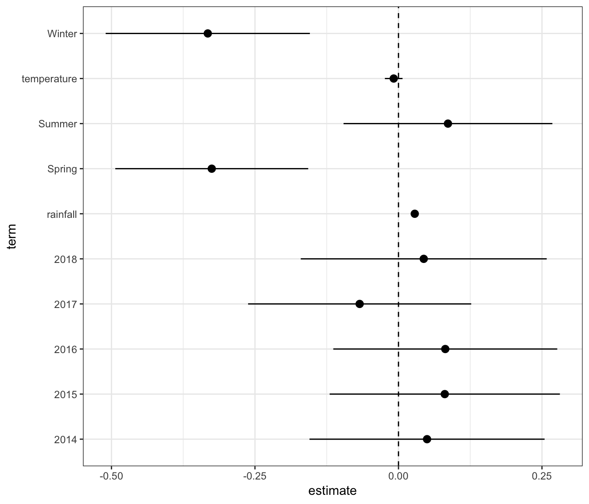
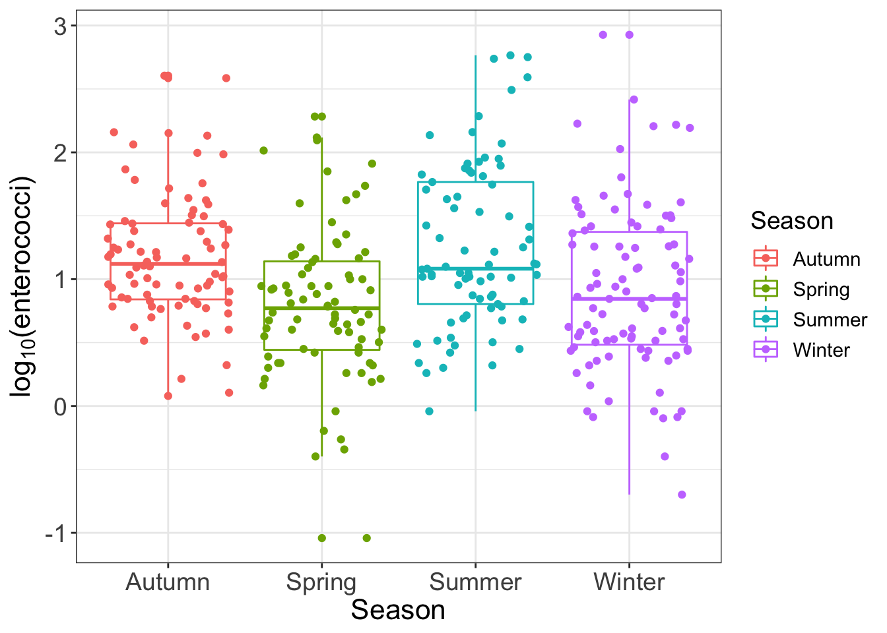
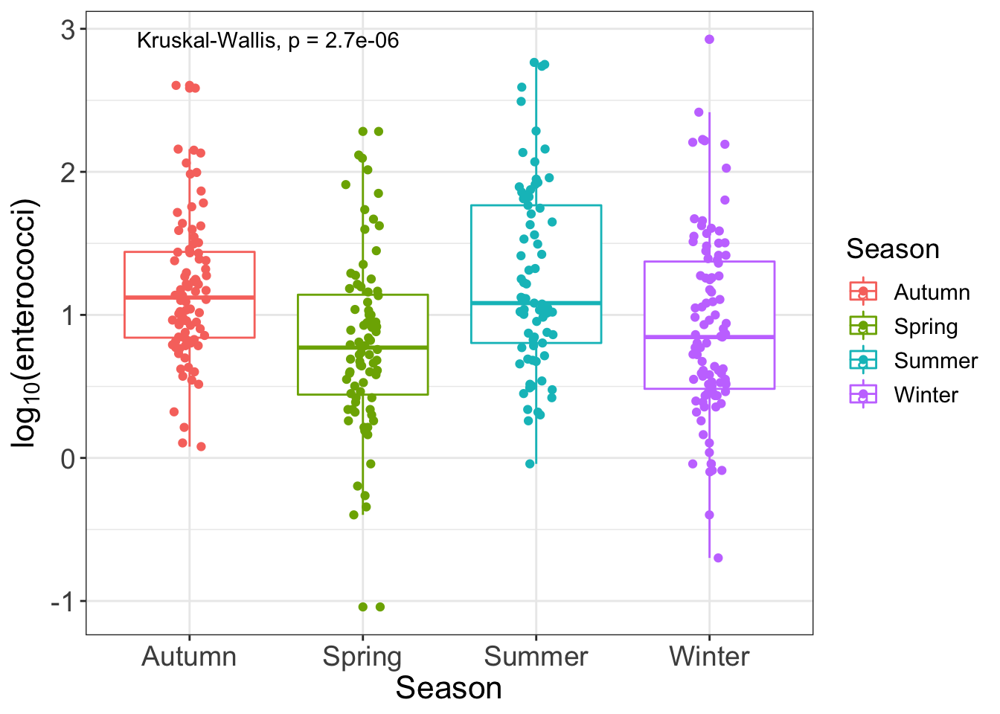
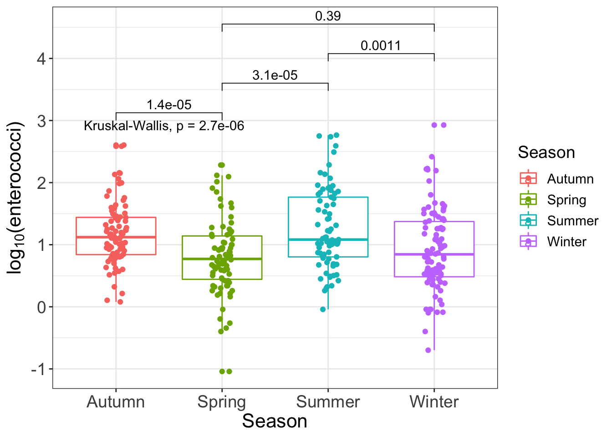
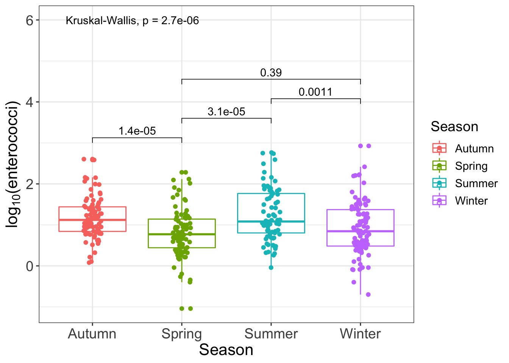
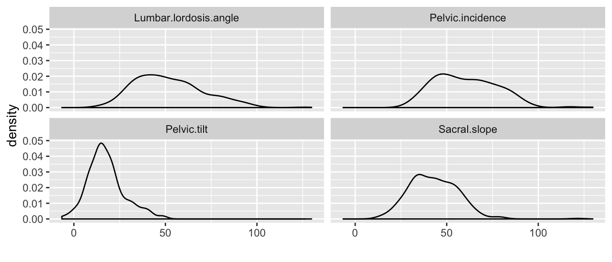
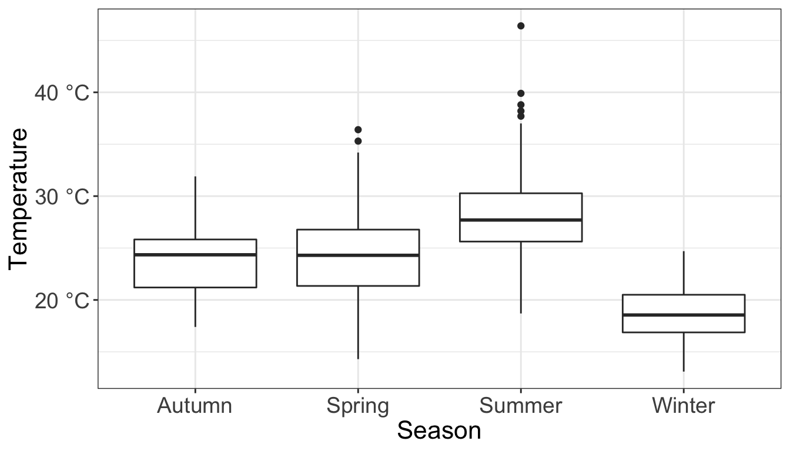
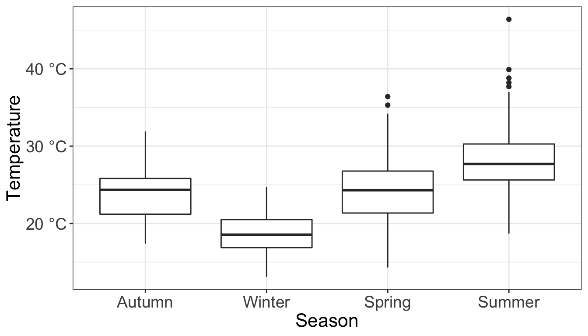

3.19 Displaying model results
Let’s start with this model:
.pull-left[
plt_data <- broom::tidy(myModel)
plt_data %>% filter(term != '(Intercept)') %>%
mutate(term = str_replace(term, 'season_name','')) %>%
mutate(term = str_replace(term, 'factor\\(year\\)','')) %>% # Brackets need to be "escaped" using \\
ggplot(aes(x = term, y = estimate,
ymin = estimate - 2 * std.error,
ymax = estimate + 2 * std.error))+
geom_pointrange() +
geom_hline(yintercept = 0, linetype=2) +
theme_bw() +
coord_flip()
ggsave('results.png') # ggsave knows format from fileYou can also save the graph from the RStudio Plots pane, but coding it using ggsave is more reproducible
If you need to get a high-definition TIFF, your best bet is to save your graph as a PDF and then convert it using Acrobat or other scripts (ask me if interested). The TIFF printer in R only creates 72 DPI TIFF files ] .pull-right[ ]
3.19.1 Showing group differences (“Figure 1”)
The package ggpubr, which extends ggplot2, makes this very easy. It provides the function stat_compare_means
3.19.2 Showing group differences (“Figure 1”)
.pull-left[
library(ggpubr)
theme_viz <- function(){ #<<
theme_bw() + #<<
theme(axis.title = element_text(size=16),#<<
axis.text = element_text(size=14),#<<
text = element_text(size = 14)) #<<
} #<<
ggplot(
data=beaches,
mapping= aes(x = season_name, y = log10(enterococci), color = season_name)) +
geom_boxplot()+geom_jitter()+
labs(x = 'Season', y = expression(paste('log'['10'],'(enterococci)')), color='Season') +
theme_viz()] .pull-right[ ]
3.19.3 Showing group differences (“Figure 1”)
.pull-left[
library(ggpubr)
plt <- ggplot(
data=beaches,
mapping= aes(x = season_name, y = log10(enterococci), color = season_name)) +
geom_boxplot() +
geom_jitter(width=0.1) +
labs(x = 'Season', y = expression(paste('log'['10'],'(enterococci)')), color='Season')+
theme_viz()
my_comparisons <- list(c('Autumn','Spring'),
c('Spring','Summer'),
c('Summer','Winter'),
c('Spring','Winter'))
plt + stat_compare_means() #<<] .pull-right[ ]
3.19.4 Showing group differences (“Figure 1”)
.pull-left[
library(ggpubr)
plt <- ggplot(
data=beaches,
mapping= aes(x = season_name, y = log10(enterococci), color = season_name)) +
geom_boxplot() +
geom_jitter(width=0.1)+
labs(x = 'Season', y = expression(paste('log'['10'],'(enterococci)')),
color='Season') +
theme_viz()
my_comparisons <- list(c('Autumn','Spring'),
c('Spring','Summer'),
c('Summer','Winter'),
c('Spring','Winter'))
plt + stat_compare_means() +
stat_compare_means(comparisons = my_comparisons) #<<] .pull-right[ ]
3.19.5 Showing group differences (“Figure 1”)
.pull-left[
library(ggpubr)
plt <- ggplot(
data=beaches,
mapping= aes(x = season_name, y = log10(enterococci), color = season_name)) +
geom_boxplot() +
geom_jitter(width=0.1)+
labs(x = 'Season', y = expression(paste('log'['10'],'(enterococci)')), color='Season')+
theme_viz()
my_comparisons <- list(c('Autumn','Spring'),
c('Spring','Summer'),
c('Summer','Winter'),
c('Spring','Winter'))
plt + stat_compare_means(label.y = 6) +
stat_compare_means(comparisons = my_comparisons) ] .pull-right[ ]
3.19.6 Manipulating data for plotting
We would like to get density plots of all the variables
.pull-left[
dat_spine <- rio::import('data/Dataset_spine.csv', check.names=T)
head(dat_spine)#> Pelvic.incidence Pelvic.tilt Lumbar.lordosis.angle Sacral.slope
#> 1 63.02782 22.552586 39.60912 40.47523
#> 2 39.05695 10.060991 25.01538 28.99596
#> 3 68.83202 22.218482 50.09219 46.61354
#> 4 69.29701 24.652878 44.31124 44.64413
#> 5 49.71286 9.652075 28.31741 40.06078
#> 6 40.25020 13.921907 25.12495 26.32829
#> Pelvic.radius Degree.spondylolisthesis Pelvic.slope Direct.tilt
#> 1 98.67292 -0.254400 0.7445035 12.5661
#> 2 114.40543 4.564259 0.4151857 12.8874
#> 3 105.98514 -3.530317 0.4748892 26.8343
#> 4 101.86850 11.211523 0.3693453 23.5603
#> 5 108.16872 7.918501 0.5433605 35.4940
#> 6 130.32787 2.230652 0.7899929 29.3230
#> Thoracic.slope Cervical.tilt Sacrum.angle Scoliosis.slope
#> 1 14.5386 15.30468 -28.658501 43.5123
#> 2 17.5323 16.78486 -25.530607 16.1102
#> 3 17.4861 16.65897 -29.031888 19.2221
#> 4 12.7074 11.42447 -30.470246 18.8329
#> 5 15.9546 8.87237 -16.378376 24.9171
#> 6 12.0036 10.40462 -1.512209 9.6548
#> Class.attribute
#> 1 Abnormal
#> 2 Abnormal
#> 3 Abnormal
#> 4 Abnormal
#> 5 Abnormal
#> 6 Abnormal] .pull-right[ Facets only work by grouping on a variable. Here we have data in several columns]
3.19.7 Manipulating data for plotting
We would like to get density plots of all the variables.
.pull-left[
dat_spine %>%
tidyr::gather(variable, value, everything())#> variable value
#> 1 Pelvic.incidence 63.0278175
#> 2 Pelvic.incidence 39.05695098
#> 3 Pelvic.incidence 68.83202098
#> 4 Pelvic.incidence 69.29700807
#> 5 Pelvic.incidence 49.71285934
#> 6 Pelvic.incidence 40.25019968
#> 7 Pelvic.incidence 53.43292815
#> 8 Pelvic.incidence 45.36675362
#> 9 Pelvic.incidence 43.79019026
#> 10 Pelvic.incidence 36.68635286
#> 11 Pelvic.incidence 49.70660953
#> 12 Pelvic.incidence 31.23238734
#> 13 Pelvic.incidence 48.91555137
#> 14 Pelvic.incidence 53.5721702
#> 15 Pelvic.incidence 57.30022656
#> 16 Pelvic.incidence 44.31890674
#> 17 Pelvic.incidence 63.83498162
#> 18 Pelvic.incidence 31.27601184
#> 19 Pelvic.incidence 38.69791243
#> 20 Pelvic.incidence 41.72996308
#> 21 Pelvic.incidence 43.92283983
#> 22 Pelvic.incidence 54.91944259
#> 23 Pelvic.incidence 63.07361096
#> 24 Pelvic.incidence 45.54078988
#> 25 Pelvic.incidence 36.12568347
#> 26 Pelvic.incidence 54.12492019
#> 27 Pelvic.incidence 26.14792141
#> 28 Pelvic.incidence 43.58096394
#> 29 Pelvic.incidence 44.5510115
#> 30 Pelvic.incidence 66.87921138
#> 31 Pelvic.incidence 50.81926781
#> 32 Pelvic.incidence 46.39026008
#> 33 Pelvic.incidence 44.93667457
#> 34 Pelvic.incidence 38.66325708
#> 35 Pelvic.incidence 59.59554032
#> 36 Pelvic.incidence 31.48421834
#> 37 Pelvic.incidence 32.09098679
#> 38 Pelvic.incidence 35.70345781
#> 39 Pelvic.incidence 55.84328595
#> 40 Pelvic.incidence 52.41938511
#> 41 Pelvic.incidence 35.49244617
#> 42 Pelvic.incidence 46.44207842
#> 43 Pelvic.incidence 53.85479842
#> 44 Pelvic.incidence 66.28539377
#> 45 Pelvic.incidence 56.03021778
#> 46 Pelvic.incidence 50.91244034
#> 47 Pelvic.incidence 48.332638
#> 48 Pelvic.incidence 41.35250407
#> 49 Pelvic.incidence 40.55735663
#> 50 Pelvic.incidence 41.76773173
#> 51 Pelvic.incidence 55.28585178
#> 52 Pelvic.incidence 74.43359316
#> 53 Pelvic.incidence 50.20966979
#> 54 Pelvic.incidence 30.14993632
#> 55 Pelvic.incidence 41.17167989
#> 56 Pelvic.incidence 47.65772963
#> 57 Pelvic.incidence 43.34960621
#> 58 Pelvic.incidence 46.85578065
#> 59 Pelvic.incidence 43.20318499
#> 60 Pelvic.incidence 48.10923638
#> 61 Pelvic.incidence 74.37767772
#> 62 Pelvic.incidence 89.68056731
#> 63 Pelvic.incidence 44.529051
#> 64 Pelvic.incidence 77.69057712
#> 65 Pelvic.incidence 76.1472121
#> 66 Pelvic.incidence 83.93300857
#> 67 Pelvic.incidence 78.49173027
#> 68 Pelvic.incidence 75.64973136
#> 69 Pelvic.incidence 72.07627839
#> 70 Pelvic.incidence 58.59952852
#> 71 Pelvic.incidence 72.56070163
#> 72 Pelvic.incidence 86.90079431
#> 73 Pelvic.incidence 84.97413208
#> 74 Pelvic.incidence 55.512212
#> 75 Pelvic.incidence 72.2223343
#> 76 Pelvic.incidence 70.22145219
#> 77 Pelvic.incidence 86.75360946
#> 78 Pelvic.incidence 58.78254775
#> 79 Pelvic.incidence 67.41253785
#> 80 Pelvic.incidence 47.74467877
#> 81 Pelvic.incidence 77.10657122
#> 82 Pelvic.incidence 74.00554124
#> 83 Pelvic.incidence 88.62390839
#> 84 Pelvic.incidence 81.10410039
#> 85 Pelvic.incidence 76.32600187
#> 86 Pelvic.incidence 45.44374959
#> 87 Pelvic.incidence 59.78526526
#> 88 Pelvic.incidence 44.91414916
#> 89 Pelvic.incidence 56.60577127
#> 90 Pelvic.incidence 71.18681115
#> 91 Pelvic.incidence 81.65603206
#> 92 Pelvic.incidence 70.95272771
#> 93 Pelvic.incidence 85.35231529
#> 94 Pelvic.incidence 58.10193455
#> 95 Pelvic.incidence 94.17482232
#> 96 Pelvic.incidence 57.52235608
#> 97 Pelvic.incidence 96.65731511
#> 98 Pelvic.incidence 74.72074622
#> 99 Pelvic.incidence 77.65511874
#> 100 Pelvic.incidence 58.52162283
#> 101 Pelvic.incidence 84.5856071
#> 102 Pelvic.incidence 79.93857026
#> 103 Pelvic.incidence 70.39930842
#> 104 Pelvic.incidence 49.78212054
#> 105 Pelvic.incidence 77.40933294
#> 106 Pelvic.incidence 65.00796426
#> 107 Pelvic.incidence 65.01377322
#> 108 Pelvic.incidence 78.42595126
#> 109 Pelvic.incidence 63.17298709
#> 110 Pelvic.incidence 68.61300092
#> 111 Pelvic.incidence 63.90063261
#> 112 Pelvic.incidence 84.99895554
#> 113 Pelvic.incidence 42.02138603
#> 114 Pelvic.incidence 69.75666532
#> 115 Pelvic.incidence 80.98807441
#> 116 Pelvic.incidence 129.8340406
#> 117 Pelvic.incidence 70.48410444
#> 118 Pelvic.incidence 86.04127982
#> 119 Pelvic.incidence 65.53600255
#> 120 Pelvic.incidence 60.7538935
#> 121 Pelvic.incidence 54.74177518
#> 122 Pelvic.incidence 83.87994081
#> 123 Pelvic.incidence 80.07491418
#> 124 Pelvic.incidence 65.66534698
#> 125 Pelvic.incidence 74.71722805
#> 126 Pelvic.incidence 48.06062649
#> 127 Pelvic.incidence 70.67689818
#> 128 Pelvic.incidence 80.43342782
#> 129 Pelvic.incidence 90.51396072
#> 130 Pelvic.incidence 77.23689752
#> 131 Pelvic.incidence 50.06678595
#> 132 Pelvic.incidence 69.78100617
#> 133 Pelvic.incidence 69.62628302
#> 134 Pelvic.incidence 81.75441933
#> 135 Pelvic.incidence 52.20469309
#> 136 Pelvic.incidence 77.12134424
#> 137 Pelvic.incidence 88.0244989
#> 138 Pelvic.incidence 83.39660609
#> 139 Pelvic.incidence 72.05403412
#> 140 Pelvic.incidence 85.09550254
#> 141 Pelvic.incidence 69.56348614
#> 142 Pelvic.incidence 89.5049473
#> 143 Pelvic.incidence 85.29017283
#> 144 Pelvic.incidence 60.62621697
#> 145 Pelvic.incidence 60.04417717
#> 146 Pelvic.incidence 85.64378664
#> 147 Pelvic.incidence 85.58171024
#> 148 Pelvic.incidence 55.08076562
#> 149 Pelvic.incidence 65.75567895
#> 150 Pelvic.incidence 79.24967118
#> 151 Pelvic.incidence 81.11260488
#> 152 Pelvic.incidence 48.0306238
#> 153 Pelvic.incidence 63.40448058
#> 154 Pelvic.incidence 57.28694488
#> 155 Pelvic.incidence 41.18776972
#> 156 Pelvic.incidence 66.80479632
#> 157 Pelvic.incidence 79.4769781
#> 158 Pelvic.incidence 44.21646446
#> 159 Pelvic.incidence 57.03509717
#> 160 Pelvic.incidence 64.27481758
#> 161 Pelvic.incidence 92.02630795
#> 162 Pelvic.incidence 67.26314926
#> 163 Pelvic.incidence 118.1446548
#> 164 Pelvic.incidence 115.9232606
#> 165 Pelvic.incidence 53.94165809
#> 166 Pelvic.incidence 83.7031774
#> 167 Pelvic.incidence 56.99140382
#> 168 Pelvic.incidence 72.34359434
#> 169 Pelvic.incidence 95.38259648
#> 170 Pelvic.incidence 44.25347645
#> 171 Pelvic.incidence 64.80954139
#> 172 Pelvic.incidence 78.40125389
#> 173 Pelvic.incidence 56.66829282
#> 174 Pelvic.incidence 50.82502875
#> 175 Pelvic.incidence 61.41173702
#> 176 Pelvic.incidence 56.56382381
#> 177 Pelvic.incidence 67.02766447
#> 178 Pelvic.incidence 80.81777144
#> 179 Pelvic.incidence 80.65431956
#> 180 Pelvic.incidence 68.72190982
#> 181 Pelvic.incidence 37.90391014
#> 182 Pelvic.incidence 64.62400798
#> 183 Pelvic.incidence 75.43774787
#> 184 Pelvic.incidence 71.00194076
#> 185 Pelvic.incidence 81.05661087
#> 186 Pelvic.incidence 91.46874146
#> 187 Pelvic.incidence 81.08232025
#> 188 Pelvic.incidence 60.419932
#> 189 Pelvic.incidence 85.68094951
#> 190 Pelvic.incidence 82.4065243
#> 191 Pelvic.incidence 43.7182623
#> 192 Pelvic.incidence 86.472905
#> 193 Pelvic.incidence 74.46908181
#> 194 Pelvic.incidence 70.25043628
#> 195 Pelvic.incidence 72.64385013
#> 196 Pelvic.incidence 71.24176388
#> 197 Pelvic.incidence 63.7723908
#> 198 Pelvic.incidence 58.82837872
#> 199 Pelvic.incidence 74.85448008
#> 200 Pelvic.incidence 75.29847847
#> 201 Pelvic.incidence 63.36433898
#> 202 Pelvic.incidence 67.51305267
#> 203 Pelvic.incidence 76.31402766
#> 204 Pelvic.incidence 73.63596236
#> 205 Pelvic.incidence 56.53505139
#> 206 Pelvic.incidence 80.11157156
#> 207 Pelvic.incidence 95.48022873
#> 208 Pelvic.incidence 74.09473084
#> 209 Pelvic.incidence 87.67908663
#> 210 Pelvic.incidence 48.25991962
#> 211 Pelvic.incidence 38.50527283
#> 212 Pelvic.incidence 54.92085752
#> 213 Pelvic.incidence 44.36249017
#> 214 Pelvic.incidence 48.3189305
#> 215 Pelvic.incidence 45.70178875
#> 216 Pelvic.incidence 30.74193812
#> 217 Pelvic.incidence 50.91310144
#> 218 Pelvic.incidence 38.12658854
#> 219 Pelvic.incidence 51.62467183
#> 220 Pelvic.incidence 64.31186727
#> 221 Pelvic.incidence 44.48927476
#> 222 Pelvic.incidence 54.9509702
#> 223 Pelvic.incidence 56.10377352
#> 224 Pelvic.incidence 69.3988184
#> 225 Pelvic.incidence 89.83467631
#> 226 Pelvic.incidence 59.72614016
#> 227 Pelvic.incidence 63.95952166
#> 228 Pelvic.incidence 61.54059876
#> 229 Pelvic.incidence 38.04655072
#> 230 Pelvic.incidence 43.43645061
#> 231 Pelvic.incidence 65.61180231
#> 232 Pelvic.incidence 53.91105429
#> 233 Pelvic.incidence 43.11795103
#> 234 Pelvic.incidence 40.6832291
#> 235 Pelvic.incidence 37.7319919
#> 236 Pelvic.incidence 63.92947003
#> 237 Pelvic.incidence 61.82162717
#> 238 Pelvic.incidence 62.14080535
#> 239 Pelvic.incidence 69.00491277
#> 240 Pelvic.incidence 56.44702568
#> 241 Pelvic.incidence 41.6469159
#> 242 Pelvic.incidence 51.52935759
#> 243 Pelvic.incidence 39.08726449
#> 244 Pelvic.incidence 34.64992241
#> 245 Pelvic.incidence 63.02630005
#> 246 Pelvic.incidence 47.80555887
#> 247 Pelvic.incidence 46.63786363
#> 248 Pelvic.incidence 49.82813487
#> 249 Pelvic.incidence 47.31964755
#> 250 Pelvic.incidence 50.75329025
#> 251 Pelvic.incidence 36.15782981
#> 252 Pelvic.incidence 40.74699612
#> 253 Pelvic.incidence 42.91804052
#> 254 Pelvic.incidence 63.79242525
#> 255 Pelvic.incidence 72.95564397
#> 256 Pelvic.incidence 67.53818154
#> 257 Pelvic.incidence 54.75251965
#> 258 Pelvic.incidence 50.16007802
#> 259 Pelvic.incidence 40.34929637
#> 260 Pelvic.incidence 63.61919213
#> 261 Pelvic.incidence 54.14240778
#> 262 Pelvic.incidence 74.97602148
#> 263 Pelvic.incidence 42.51727249
#> 264 Pelvic.incidence 33.78884314
#> 265 Pelvic.incidence 54.5036853
#> 266 Pelvic.incidence 48.17074627
#> 267 Pelvic.incidence 46.37408781
#> 268 Pelvic.incidence 52.86221391
#> 269 Pelvic.incidence 57.1458515
#> 270 Pelvic.incidence 37.14014978
#> 271 Pelvic.incidence 51.31177106
#> 272 Pelvic.incidence 42.51561014
#> 273 Pelvic.incidence 39.35870531
#> 274 Pelvic.incidence 35.8775708
#> 275 Pelvic.incidence 43.1919153
#> 276 Pelvic.incidence 67.28971201
#> 277 Pelvic.incidence 51.32546366
#> 278 Pelvic.incidence 65.7563482
#> 279 Pelvic.incidence 40.41336566
#> 280 Pelvic.incidence 48.80190855
#> 281 Pelvic.incidence 50.08615264
#> 282 Pelvic.incidence 64.26150724
#> 283 Pelvic.incidence 53.68337998
#> 284 Pelvic.incidence 48.99595771
#> 285 Pelvic.incidence 59.16761171
#> 286 Pelvic.incidence 67.80469442
#> 287 Pelvic.incidence 61.73487533
#> 288 Pelvic.incidence 33.04168754
#> 289 Pelvic.incidence 74.56501543
#> 290 Pelvic.incidence 44.43070103
#> 291 Pelvic.incidence 36.42248549
#> 292 Pelvic.incidence 51.07983294
#> 293 Pelvic.incidence 34.75673809
#> 294 Pelvic.incidence 48.90290434
#> 295 Pelvic.incidence 46.23639915
#> 296 Pelvic.incidence 46.42636614
#> 297 Pelvic.incidence 39.65690201
#> 298 Pelvic.incidence 45.57548229
#> 299 Pelvic.incidence 66.50717865
#> 300 Pelvic.incidence 82.90535054
#> 301 Pelvic.incidence 50.67667667
#> 302 Pelvic.incidence 89.01487529
#> 303 Pelvic.incidence 54.60031622
#> 304 Pelvic.incidence 34.38229939
#> 305 Pelvic.incidence 45.07545026
#> 306 Pelvic.incidence 47.90356517
#> 307 Pelvic.incidence 53.93674778
#> 308 Pelvic.incidence 61.44659663
#> 309 Pelvic.incidence 45.25279209
#> 310 Pelvic.incidence 33.84164075
#> 311 Pelvic.tilt 22.55258597
#> 312 Pelvic.tilt 10.06099147
#> 313 Pelvic.tilt 22.21848205
#> 314 Pelvic.tilt 24.65287791
#> 315 Pelvic.tilt 9.652074879
#> 316 Pelvic.tilt 13.92190658
#> 317 Pelvic.tilt 15.86433612
#> 318 Pelvic.tilt 10.75561143
#> 319 Pelvic.tilt 13.5337531
#> 320 Pelvic.tilt 5.010884121
#> 321 Pelvic.tilt 13.04097405
#> 322 Pelvic.tilt 17.71581923
#> 323 Pelvic.tilt 19.96455616
#> 324 Pelvic.tilt 20.46082824
#> 325 Pelvic.tilt 24.1888846
#> 326 Pelvic.tilt 12.53799164
#> 327 Pelvic.tilt 20.36250706
#> 328 Pelvic.tilt 3.14466948
#> 329 Pelvic.tilt 13.44474904
#> 330 Pelvic.tilt 12.25407408
#> 331 Pelvic.tilt 14.17795853
#> 332 Pelvic.tilt 21.06233245
#> 333 Pelvic.tilt 24.41380271
#> 334 Pelvic.tilt 13.06959759
#> 335 Pelvic.tilt 22.75875277
#> 336 Pelvic.tilt 26.65048856
#> 337 Pelvic.tilt 10.75945357
#> 338 Pelvic.tilt 16.5088837
#> 339 Pelvic.tilt 21.93114655
#> 340 Pelvic.tilt 24.89199889
#> 341 Pelvic.tilt 15.40221253
#> 342 Pelvic.tilt 11.07904664
#> 343 Pelvic.tilt 17.44383762
#> 344 Pelvic.tilt 12.98644139
#> 345 Pelvic.tilt 31.99824445
#> 346 Pelvic.tilt 7.82622134
#> 347 Pelvic.tilt 6.989378081
#> 348 Pelvic.tilt 19.44325311
#> 349 Pelvic.tilt 28.84744756
#> 350 Pelvic.tilt 19.01156052
#> 351 Pelvic.tilt 11.7016723
#> 352 Pelvic.tilt 8.39503589
#> 353 Pelvic.tilt 19.23064334
#> 354 Pelvic.tilt 26.32784484
#> 355 Pelvic.tilt 16.2979149
#> 356 Pelvic.tilt 23.01516931
#> 357 Pelvic.tilt 22.22778399
#> 358 Pelvic.tilt 16.57736351
#> 359 Pelvic.tilt 17.97778407
#> 360 Pelvic.tilt 17.89940172
#> 361 Pelvic.tilt 20.44011836
#> 362 Pelvic.tilt 41.55733141
#> 363 Pelvic.tilt 29.76012218
#> 364 Pelvic.tilt 11.91744524
#> 365 Pelvic.tilt 17.32120599
#> 366 Pelvic.tilt 13.27738491
#> 367 Pelvic.tilt 7.467468964
#> 368 Pelvic.tilt 15.35151393
#> 369 Pelvic.tilt 19.66314572
#> 370 Pelvic.tilt 14.93072472
#> 371 Pelvic.tilt 32.05310438
#> 372 Pelvic.tilt 32.70443487
#> 373 Pelvic.tilt 9.433234213
#> 374 Pelvic.tilt 21.38064464
#> 375 Pelvic.tilt 21.93618556
#> 376 Pelvic.tilt 41.28630543
#> 377 Pelvic.tilt 22.1817978
#> 378 Pelvic.tilt 19.33979889
#> 379 Pelvic.tilt 18.94617604
#> 380 Pelvic.tilt -0.261499046
#> 381 Pelvic.tilt 17.38519079
#> 382 Pelvic.tilt 32.9281677
#> 383 Pelvic.tilt 33.02117462
#> 384 Pelvic.tilt 20.09515673
#> 385 Pelvic.tilt 23.07771056
#> 386 Pelvic.tilt 39.82272448
#> 387 Pelvic.tilt 36.04301632
#> 388 Pelvic.tilt 7.667044186
#> 389 Pelvic.tilt 17.44279712
#> 390 Pelvic.tilt 12.08935067
#> 391 Pelvic.tilt 30.46999418
#> 392 Pelvic.tilt 21.12240192
#> 393 Pelvic.tilt 29.08945331
#> 394 Pelvic.tilt 24.79416792
#> 395 Pelvic.tilt 42.39620445
#> 396 Pelvic.tilt 9.906071798
#> 397 Pelvic.tilt 17.87932332
#> 398 Pelvic.tilt 10.21899563
#> 399 Pelvic.tilt 16.80020017
#> 400 Pelvic.tilt 23.89620111
#> 401 Pelvic.tilt 28.74886935
#> 402 Pelvic.tilt 20.15993121
#> 403 Pelvic.tilt 15.84491006
#> 404 Pelvic.tilt 14.83763914
#> 405 Pelvic.tilt 15.38076983
#> 406 Pelvic.tilt 33.64707522
#> 407 Pelvic.tilt 19.46158117
#> 408 Pelvic.tilt 19.75694203
#> 409 Pelvic.tilt 22.4329501
#> 410 Pelvic.tilt 13.92228609
#> 411 Pelvic.tilt 30.36168482
#> 412 Pelvic.tilt 18.7740711
#> 413 Pelvic.tilt 13.46998624
#> 414 Pelvic.tilt 6.46680486
#> 415 Pelvic.tilt 29.39654543
#> 416 Pelvic.tilt 27.60260762
#> 417 Pelvic.tilt 9.838262375
#> 418 Pelvic.tilt 33.42595126
#> 419 Pelvic.tilt 6.330910974
#> 420 Pelvic.tilt 15.0822353
#> 421 Pelvic.tilt 13.7062037
#> 422 Pelvic.tilt 29.61009772
#> 423 Pelvic.tilt -6.554948347
#> 424 Pelvic.tilt 19.27929659
#> 425 Pelvic.tilt 36.84317181
#> 426 Pelvic.tilt 8.404475005
#> 427 Pelvic.tilt 12.48948765
#> 428 Pelvic.tilt 38.75066978
#> 429 Pelvic.tilt 24.15748726
#> 430 Pelvic.tilt 15.7538935
#> 431 Pelvic.tilt 12.09507205
#> 432 Pelvic.tilt 23.07742686
#> 433 Pelvic.tilt 48.06953097
#> 434 Pelvic.tilt 10.54067533
#> 435 Pelvic.tilt 14.32167879
#> 436 Pelvic.tilt 5.687032126
#> 437 Pelvic.tilt 21.70440224
#> 438 Pelvic.tilt 16.998479
#> 439 Pelvic.tilt 28.27250132
#> 440 Pelvic.tilt 16.73762214
#> 441 Pelvic.tilt 9.120340183
#> 442 Pelvic.tilt 13.77746531
#> 443 Pelvic.tilt 21.12275138
#> 444 Pelvic.tilt 20.12346562
#> 445 Pelvic.tilt 17.21267289
#> 446 Pelvic.tilt 30.3498745
#> 447 Pelvic.tilt 39.84466878
#> 448 Pelvic.tilt 34.31098931
#> 449 Pelvic.tilt 24.70073725
#> 450 Pelvic.tilt 21.06989651
#> 451 Pelvic.tilt 15.4011391
#> 452 Pelvic.tilt 48.90365265
#> 453 Pelvic.tilt 18.27888963
#> 454 Pelvic.tilt 20.5959577
#> 455 Pelvic.tilt 14.30965614
#> 456 Pelvic.tilt 42.68919513
#> 457 Pelvic.tilt 30.45703858
#> 458 Pelvic.tilt -3.759929872
#> 459 Pelvic.tilt 9.832874231
#> 460 Pelvic.tilt 23.94482471
#> 461 Pelvic.tilt 20.69044356
#> 462 Pelvic.tilt 3.969814743
#> 463 Pelvic.tilt 14.11532726
#> 464 Pelvic.tilt 15.1493501
#> 465 Pelvic.tilt 5.792973871
#> 466 Pelvic.tilt 14.55160171
#> 467 Pelvic.tilt 26.73226755
#> 468 Pelvic.tilt 1.507074501
#> 469 Pelvic.tilt 0.34572799
#> 470 Pelvic.tilt 12.50864276
#> 471 Pelvic.tilt 35.39267395
#> 472 Pelvic.tilt 7.194661096
#> 473 Pelvic.tilt 38.44950127
#> 474 Pelvic.tilt 37.51543601
#> 475 Pelvic.tilt 9.306594428
#> 476 Pelvic.tilt 20.26822858
#> 477 Pelvic.tilt 6.87408897
#> 478 Pelvic.tilt 16.42078962
#> 479 Pelvic.tilt 24.82263131
#> 480 Pelvic.tilt 1.101086714
#> 481 Pelvic.tilt 15.17407796
#> 482 Pelvic.tilt 14.04225971
#> 483 Pelvic.tilt 13.45820343
#> 484 Pelvic.tilt 9.064729049
#> 485 Pelvic.tilt 25.38436364
#> 486 Pelvic.tilt 8.961261611
#> 487 Pelvic.tilt 13.28150221
#> 488 Pelvic.tilt 19.23898066
#> 489 Pelvic.tilt 26.34437939
#> 490 Pelvic.tilt 49.4318636
#> 491 Pelvic.tilt 4.47909896
#> 492 Pelvic.tilt 15.22530262
#> 493 Pelvic.tilt 31.53945399
#> 494 Pelvic.tilt 37.51577195
#> 495 Pelvic.tilt 20.80149217
#> 496 Pelvic.tilt 24.50817744
#> 497 Pelvic.tilt 21.25584028
#> 498 Pelvic.tilt 5.265665422
#> 499 Pelvic.tilt 38.65003527
#> 500 Pelvic.tilt 29.27642195
#> 501 Pelvic.tilt 9.811985315
#> 502 Pelvic.tilt 40.30376567
#> 503 Pelvic.tilt 33.28315665
#> 504 Pelvic.tilt 10.34012252
#> 505 Pelvic.tilt 18.92911726
#> 506 Pelvic.tilt 5.268270454
#> 507 Pelvic.tilt 12.76338484
#> 508 Pelvic.tilt 37.57787321
#> 509 Pelvic.tilt 13.90908417
#> 510 Pelvic.tilt 16.67148361
#> 511 Pelvic.tilt 20.02462134
#> 512 Pelvic.tilt 33.2755899
#> 513 Pelvic.tilt 41.93368293
#> 514 Pelvic.tilt 9.711317947
#> 515 Pelvic.tilt 14.37718927
#> 516 Pelvic.tilt 33.94243223
#> 517 Pelvic.tilt 46.55005318
#> 518 Pelvic.tilt 18.82372712
#> 519 Pelvic.tilt 20.36561331
#> 520 Pelvic.tilt 16.41746236
#> 521 Pelvic.tilt 16.96429691
#> 522 Pelvic.tilt 18.96842952
#> 523 Pelvic.tilt 8.945434892
#> 524 Pelvic.tilt 17.45212105
#> 525 Pelvic.tilt 10.65985935
#> 526 Pelvic.tilt 13.35496594
#> 527 Pelvic.tilt 6.6769999
#> 528 Pelvic.tilt 6.557617408
#> 529 Pelvic.tilt 15.96934373
#> 530 Pelvic.tilt 26.32836901
#> 531 Pelvic.tilt 21.78643263
#> 532 Pelvic.tilt 5.865353416
#> 533 Pelvic.tilt 13.10630665
#> 534 Pelvic.tilt 18.89840693
#> 535 Pelvic.tilt 22.63921678
#> 536 Pelvic.tilt 7.724872599
#> 537 Pelvic.tilt 16.06094486
#> 538 Pelvic.tilt 19.67695713
#> 539 Pelvic.tilt 8.30166942
#> 540 Pelvic.tilt 10.09574326
#> 541 Pelvic.tilt 23.13791922
#> 542 Pelvic.tilt 12.93931796
#> 543 Pelvic.tilt 13.81574355
#> 544 Pelvic.tilt 9.148437195
#> 545 Pelvic.tilt 9.386298276
#> 546 Pelvic.tilt 19.97109671
#> 547 Pelvic.tilt 13.59710457
#> 548 Pelvic.tilt 13.96097523
#> 549 Pelvic.tilt 13.29178975
#> 550 Pelvic.tilt 19.44449915
#> 551 Pelvic.tilt 8.835549101
#> 552 Pelvic.tilt 13.51784732
#> 553 Pelvic.tilt 5.536602477
#> 554 Pelvic.tilt 7.514782784
#> 555 Pelvic.tilt 27.33624023
#> 556 Pelvic.tilt 10.68869819
#> 557 Pelvic.tilt 15.85371711
#> 558 Pelvic.tilt 16.73643493
#> 559 Pelvic.tilt 8.573680295
#> 560 Pelvic.tilt 20.23505957
#> 561 Pelvic.tilt -0.810514093
#> 562 Pelvic.tilt 1.835524271
#> 563 Pelvic.tilt -5.845994341
#> 564 Pelvic.tilt 21.34532339
#> 565 Pelvic.tilt 19.57697146
#> 566 Pelvic.tilt 14.65504222
#> 567 Pelvic.tilt 9.752519649
#> 568 Pelvic.tilt -2.970024337
#> 569 Pelvic.tilt 10.19474845
#> 570 Pelvic.tilt 16.93450781
#> 571 Pelvic.tilt 11.93511014
#> 572 Pelvic.tilt 14.92170492
#> 573 Pelvic.tilt 14.37567126
#> 574 Pelvic.tilt 3.675109986
#> 575 Pelvic.tilt 6.819910138
#> 576 Pelvic.tilt 9.594216702
#> 577 Pelvic.tilt 10.21590237
#> 578 Pelvic.tilt 9.410371613
#> 579 Pelvic.tilt 16.48909145
#> 580 Pelvic.tilt 16.48123972
#> 581 Pelvic.tilt 8.875541276
#> 582 Pelvic.tilt 16.54121618
#> 583 Pelvic.tilt 7.011261806
#> 584 Pelvic.tilt 1.112373561
#> 585 Pelvic.tilt 9.976663803
#> 586 Pelvic.tilt 16.7175142
#> 587 Pelvic.tilt 13.63122319
#> 588 Pelvic.tilt 13.20692644
#> 589 Pelvic.tilt -1.329412398
#> 590 Pelvic.tilt 18.01776202
#> 591 Pelvic.tilt 13.43004422
#> 592 Pelvic.tilt 14.49786554
#> 593 Pelvic.tilt 13.44702168
#> 594 Pelvic.tilt 13.11382047
#> 595 Pelvic.tilt 14.56274875
#> 596 Pelvic.tilt 16.55066167
#> 597 Pelvic.tilt 17.11431203
#> 598 Pelvic.tilt -0.324678459
#> 599 Pelvic.tilt 15.72431994
#> 600 Pelvic.tilt 14.17426387
#> 601 Pelvic.tilt 13.87942449
#> 602 Pelvic.tilt 14.20993529
#> 603 Pelvic.tilt 2.631739646
#> 604 Pelvic.tilt 5.587588658
#> 605 Pelvic.tilt 10.0627701
#> 606 Pelvic.tilt 6.620795049
#> 607 Pelvic.tilt 16.20883944
#> 608 Pelvic.tilt 18.75913544
#> 609 Pelvic.tilt 20.89767207
#> 610 Pelvic.tilt 29.89411893
#> 611 Pelvic.tilt 6.461501271
#> 612 Pelvic.tilt 26.07598143
#> 613 Pelvic.tilt 21.48897426
#> 614 Pelvic.tilt 2.062682882
#> 615 Pelvic.tilt 12.30695118
#> 616 Pelvic.tilt 13.61668819
#> 617 Pelvic.tilt 20.72149628
#> 618 Pelvic.tilt 22.6949683
#> 619 Pelvic.tilt 8.693157364
#> 620 Pelvic.tilt 5.073991409
#> 621 Lumbar.lordosis.angle 39.60911701
#> 622 Lumbar.lordosis.angle 25.01537822
#> 623 Lumbar.lordosis.angle 50.09219357
#> 624 Lumbar.lordosis.angle 44.31123813
#> 625 Lumbar.lordosis.angle 28.317406
#> 626 Lumbar.lordosis.angle 25.1249496
#> 627 Lumbar.lordosis.angle 37.16593387
#> 628 Lumbar.lordosis.angle 29.03834896
#> 629 Lumbar.lordosis.angle 42.69081398
#> 630 Lumbar.lordosis.angle 41.9487509
#> 631 Lumbar.lordosis.angle 31.33450009
#> 632 Lumbar.lordosis.angle 15.5
#> 633 Lumbar.lordosis.angle 40.26379358
#> 634 Lumbar.lordosis.angle 33.1
#> 635 Lumbar.lordosis.angle 46.99999999
#> 636 Lumbar.lordosis.angle 36.098763
#> 637 Lumbar.lordosis.angle 54.55243367
#> 638 Lumbar.lordosis.angle 32.56299592
#> 639 Lumbar.lordosis.angle 31
#> 640 Lumbar.lordosis.angle 30.12258646
#> 641 Lumbar.lordosis.angle 37.8325467
#> 642 Lumbar.lordosis.angle 42.19999999
#> 643 Lumbar.lordosis.angle 53.99999999
#> 644 Lumbar.lordosis.angle 30.29832059
#> 645 Lumbar.lordosis.angle 29
#> 646 Lumbar.lordosis.angle 35.32974693
#> 647 Lumbar.lordosis.angle 14
#> 648 Lumbar.lordosis.angle 46.99999999
#> 649 Lumbar.lordosis.angle 26.78591597
#> 650 Lumbar.lordosis.angle 49.27859673
#> 651 Lumbar.lordosis.angle 42.52893886
#> 652 Lumbar.lordosis.angle 32.13655345
#> 653 Lumbar.lordosis.angle 27.78057555
#> 654 Lumbar.lordosis.angle 39.99999999
#> 655 Lumbar.lordosis.angle 46.56025198
#> 656 Lumbar.lordosis.angle 24.28481815
#> 657 Lumbar.lordosis.angle 35.99819848
#> 658 Lumbar.lordosis.angle 20.7
#> 659 Lumbar.lordosis.angle 47.69054322
#> 660 Lumbar.lordosis.angle 35.87265953
#> 661 Lumbar.lordosis.angle 15.59036345
#> 662 Lumbar.lordosis.angle 29.0372302
#> 663 Lumbar.lordosis.angle 32.77905978
#> 664 Lumbar.lordosis.angle 47.49999999
#> 665 Lumbar.lordosis.angle 62.27527456
#> 666 Lumbar.lordosis.angle 46.99999999
#> 667 Lumbar.lordosis.angle 36.18199318
#> 668 Lumbar.lordosis.angle 30.70619135
#> 669 Lumbar.lordosis.angle 34
#> 670 Lumbar.lordosis.angle 20.0308863
#> 671 Lumbar.lordosis.angle 34
#> 672 Lumbar.lordosis.angle 27.7
#> 673 Lumbar.lordosis.angle 36.10400731
#> 674 Lumbar.lordosis.angle 34
#> 675 Lumbar.lordosis.angle 33.46940277
#> 676 Lumbar.lordosis.angle 36.67998541
#> 677 Lumbar.lordosis.angle 28.06548279
#> 678 Lumbar.lordosis.angle 38
#> 679 Lumbar.lordosis.angle 35
#> 680 Lumbar.lordosis.angle 35.56468278
#> 681 Lumbar.lordosis.angle 78.77201304
#> 682 Lumbar.lordosis.angle 83.13073216
#> 683 Lumbar.lordosis.angle 51.99999999
#> 684 Lumbar.lordosis.angle 64.42944191
#> 685 Lumbar.lordosis.angle 82.96150249
#> 686 Lumbar.lordosis.angle 61.99999999
#> 687 Lumbar.lordosis.angle 59.99999999
#> 688 Lumbar.lordosis.angle 64.14868477
#> 689 Lumbar.lordosis.angle 50.99999999
#> 690 Lumbar.lordosis.angle 51.49999999
#> 691 Lumbar.lordosis.angle 51.99999999
#> 692 Lumbar.lordosis.angle 47.79434664
#> 693 Lumbar.lordosis.angle 60.85987263
#> 694 Lumbar.lordosis.angle 43.99999999
#> 695 Lumbar.lordosis.angle 90.99999999
#> 696 Lumbar.lordosis.angle 68.11840309
#> 697 Lumbar.lordosis.angle 69.22104479
#> 698 Lumbar.lordosis.angle 53.33894082
#> 699 Lumbar.lordosis.angle 60.14464036
#> 700 Lumbar.lordosis.angle 38.99999999
#> 701 Lumbar.lordosis.angle 69.48062839
#> 702 Lumbar.lordosis.angle 57.37950226
#> 703 Lumbar.lordosis.angle 47.56426247
#> 704 Lumbar.lordosis.angle 77.88702048
#> 705 Lumbar.lordosis.angle 57.19999999
#> 706 Lumbar.lordosis.angle 44.99999999
#> 707 Lumbar.lordosis.angle 59.20646143
#> 708 Lumbar.lordosis.angle 44.63091389
#> 709 Lumbar.lordosis.angle 41.99999999
#> 710 Lumbar.lordosis.angle 43.6966651
#> 711 Lumbar.lordosis.angle 58.23282055
#> 712 Lumbar.lordosis.angle 62.85910914
#> 713 Lumbar.lordosis.angle 71.66865979
#> 714 Lumbar.lordosis.angle 79.64983825
#> 715 Lumbar.lordosis.angle 67.70572132
#> 716 Lumbar.lordosis.angle 50.90985841
#> 717 Lumbar.lordosis.angle 90.21149828
#> 718 Lumbar.lordosis.angle 82.73535954
#> 719 Lumbar.lordosis.angle 93.89277881
#> 720 Lumbar.lordosis.angle 41.46785522
#> 721 Lumbar.lordosis.angle 65.47948563
#> 722 Lumbar.lordosis.angle 63.31183486
#> 723 Lumbar.lordosis.angle 61.19999999
#> 724 Lumbar.lordosis.angle 52.99999999
#> 725 Lumbar.lordosis.angle 63.23230243
#> 726 Lumbar.lordosis.angle 50.94751899
#> 727 Lumbar.lordosis.angle 57.73583722
#> 728 Lumbar.lordosis.angle 76.27743927
#> 729 Lumbar.lordosis.angle 62.99999999
#> 730 Lumbar.lordosis.angle 63.01469619
#> 731 Lumbar.lordosis.angle 62.12433389
#> 732 Lumbar.lordosis.angle 83.35219438
#> 733 Lumbar.lordosis.angle 67.89999999
#> 734 Lumbar.lordosis.angle 48.49999999
#> 735 Lumbar.lordosis.angle 86.96060151
#> 736 Lumbar.lordosis.angle 48.38405705
#> 737 Lumbar.lordosis.angle 62.41714208
#> 738 Lumbar.lordosis.angle 47.87140494
#> 739 Lumbar.lordosis.angle 45.77516991
#> 740 Lumbar.lordosis.angle 43.19915768
#> 741 Lumbar.lordosis.angle 40.99999999
#> 742 Lumbar.lordosis.angle 87.14151223
#> 743 Lumbar.lordosis.angle 52.40343873
#> 744 Lumbar.lordosis.angle 56.48913545
#> 745 Lumbar.lordosis.angle 32.5
#> 746 Lumbar.lordosis.angle 57.05716117
#> 747 Lumbar.lordosis.angle 59.18116082
#> 748 Lumbar.lordosis.angle 66.53601753
#> 749 Lumbar.lordosis.angle 69.8139423
#> 750 Lumbar.lordosis.angle 49.77553438
#> 751 Lumbar.lordosis.angle 32.16846267
#> 752 Lumbar.lordosis.angle 57.99999999
#> 753 Lumbar.lordosis.angle 52.76659472
#> 754 Lumbar.lordosis.angle 70.56044038
#> 755 Lumbar.lordosis.angle 78.09496877
#> 756 Lumbar.lordosis.angle 77.48108264
#> 757 Lumbar.lordosis.angle 81.77447308
#> 758 Lumbar.lordosis.angle 78.42329287
#> 759 Lumbar.lordosis.angle 79.87401586
#> 760 Lumbar.lordosis.angle 91.73479193
#> 761 Lumbar.lordosis.angle 74.43849743
#> 762 Lumbar.lordosis.angle 72.0034229
#> 763 Lumbar.lordosis.angle 100.7442198
#> 764 Lumbar.lordosis.angle 64.53526221
#> 765 Lumbar.lordosis.angle 58.03886519
#> 766 Lumbar.lordosis.angle 78.7506635
#> 767 Lumbar.lordosis.angle 78.23137949
#> 768 Lumbar.lordosis.angle 55.99999999
#> 769 Lumbar.lordosis.angle 50.82289501
#> 770 Lumbar.lordosis.angle 40.79669829
#> 771 Lumbar.lordosis.angle 60.68700588
#> 772 Lumbar.lordosis.angle 58.34451924
#> 773 Lumbar.lordosis.angle 48.13680562
#> 774 Lumbar.lordosis.angle 63.99999999
#> 775 Lumbar.lordosis.angle 42.86739151
#> 776 Lumbar.lordosis.angle 72.08491177
#> 777 Lumbar.lordosis.angle 70.65098189
#> 778 Lumbar.lordosis.angle 46.11033909
#> 779 Lumbar.lordosis.angle 49.19800263
#> 780 Lumbar.lordosis.angle 68.70237672
#> 781 Lumbar.lordosis.angle 77.41696348
#> 782 Lumbar.lordosis.angle 51.69688681
#> 783 Lumbar.lordosis.angle 50.83851954
#> 784 Lumbar.lordosis.angle 76.79999999
#> 785 Lumbar.lordosis.angle 43.10049819
#> 786 Lumbar.lordosis.angle 77.1105979
#> 787 Lumbar.lordosis.angle 57.00900516
#> 788 Lumbar.lordosis.angle 59.86901238
#> 789 Lumbar.lordosis.angle 95.15763273
#> 790 Lumbar.lordosis.angle 38
#> 791 Lumbar.lordosis.angle 58.83999352
#> 792 Lumbar.lordosis.angle 79.69426258
#> 793 Lumbar.lordosis.angle 43.76970978
#> 794 Lumbar.lordosis.angle 56.29999999
#> 795 Lumbar.lordosis.angle 39.09686927
#> 796 Lumbar.lordosis.angle 52.57784639
#> 797 Lumbar.lordosis.angle 66.15040334
#> 798 Lumbar.lordosis.angle 61.64245116
#> 799 Lumbar.lordosis.angle 60.89811835
#> 800 Lumbar.lordosis.angle 68.0560124
#> 801 Lumbar.lordosis.angle 24.71027447
#> 802 Lumbar.lordosis.angle 67.63216653
#> 803 Lumbar.lordosis.angle 89.59999999
#> 804 Lumbar.lordosis.angle 84.53709256
#> 805 Lumbar.lordosis.angle 91.78449512
#> 806 Lumbar.lordosis.angle 84.62027202
#> 807 Lumbar.lordosis.angle 78.76675639
#> 808 Lumbar.lordosis.angle 59.8142356
#> 809 Lumbar.lordosis.angle 82.68097744
#> 810 Lumbar.lordosis.angle 77.05456489
#> 811 Lumbar.lordosis.angle 51.99999999
#> 812 Lumbar.lordosis.angle 61.14101155
#> 813 Lumbar.lordosis.angle 66.94210105
#> 814 Lumbar.lordosis.angle 76.37007032
#> 815 Lumbar.lordosis.angle 67.99999999
#> 816 Lumbar.lordosis.angle 85.99958417
#> 817 Lumbar.lordosis.angle 65.36052425
#> 818 Lumbar.lordosis.angle 125.7423855
#> 819 Lumbar.lordosis.angle 62.69325884
#> 820 Lumbar.lordosis.angle 61.29620362
#> 821 Lumbar.lordosis.angle 67.49870507
#> 822 Lumbar.lordosis.angle 96.28306169
#> 823 Lumbar.lordosis.angle 93.2848628
#> 824 Lumbar.lordosis.angle 62.99999999
#> 825 Lumbar.lordosis.angle 44.99154663
#> 826 Lumbar.lordosis.angle 85.10160773
#> 827 Lumbar.lordosis.angle 58.99999999
#> 828 Lumbar.lordosis.angle 76.03215571
#> 829 Lumbar.lordosis.angle 93.82241589
#> 830 Lumbar.lordosis.angle 36.32913708
#> 831 Lumbar.lordosis.angle 35.11281407
#> 832 Lumbar.lordosis.angle 51.60145541
#> 833 Lumbar.lordosis.angle 46.90209626
#> 834 Lumbar.lordosis.angle 47.99999999
#> 835 Lumbar.lordosis.angle 42.5778464
#> 836 Lumbar.lordosis.angle 35.90352597
#> 837 Lumbar.lordosis.angle 30.89652243
#> 838 Lumbar.lordosis.angle 50.44507473
#> 839 Lumbar.lordosis.angle 35
#> 840 Lumbar.lordosis.angle 50.95896417
#> 841 Lumbar.lordosis.angle 31.47415392
#> 842 Lumbar.lordosis.angle 52.99999999
#> 843 Lumbar.lordosis.angle 62.63701952
#> 844 Lumbar.lordosis.angle 75.96636144
#> 845 Lumbar.lordosis.angle 90.56346144
#> 846 Lumbar.lordosis.angle 55.34348527
#> 847 Lumbar.lordosis.angle 63.12373633
#> 848 Lumbar.lordosis.angle 52.89222856
#> 849 Lumbar.lordosis.angle 26.23683004
#> 850 Lumbar.lordosis.angle 36.03222439
#> 851 Lumbar.lordosis.angle 62.58217893
#> 852 Lumbar.lordosis.angle 38.99999999
#> 853 Lumbar.lordosis.angle 40.34738779
#> 854 Lumbar.lordosis.angle 31.02159252
#> 855 Lumbar.lordosis.angle 41.99999999
#> 856 Lumbar.lordosis.angle 40.17704963
#> 857 Lumbar.lordosis.angle 63.99999999
#> 858 Lumbar.lordosis.angle 57.99999999
#> 859 Lumbar.lordosis.angle 55.5701429
#> 860 Lumbar.lordosis.angle 43.5778464
#> 861 Lumbar.lordosis.angle 36.03197484
#> 862 Lumbar.lordosis.angle 35
#> 863 Lumbar.lordosis.angle 26.93203835
#> 864 Lumbar.lordosis.angle 42.99999999
#> 865 Lumbar.lordosis.angle 51.60501665
#> 866 Lumbar.lordosis.angle 53.99999999
#> 867 Lumbar.lordosis.angle 39.99999999
#> 868 Lumbar.lordosis.angle 28
#> 869 Lumbar.lordosis.angle 35.56025198
#> 870 Lumbar.lordosis.angle 37
#> 871 Lumbar.lordosis.angle 33.62731353
#> 872 Lumbar.lordosis.angle 49.99999999
#> 873 Lumbar.lordosis.angle 57.99999999
#> 874 Lumbar.lordosis.angle 65.99999999
#> 875 Lumbar.lordosis.angle 61.00707117
#> 876 Lumbar.lordosis.angle 58.00142908
#> 877 Lumbar.lordosis.angle 47.99999999
#> 878 Lumbar.lordosis.angle 41.99999999
#> 879 Lumbar.lordosis.angle 37.96774659
#> 880 Lumbar.lordosis.angle 49.34926218
#> 881 Lumbar.lordosis.angle 42.99999999
#> 882 Lumbar.lordosis.angle 53.73007172
#> 883 Lumbar.lordosis.angle 25.32356538
#> 884 Lumbar.lordosis.angle 25.5
#> 885 Lumbar.lordosis.angle 46.99999999
#> 886 Lumbar.lordosis.angle 39.71092029
#> 887 Lumbar.lordosis.angle 42.69999999
#> 888 Lumbar.lordosis.angle 46.98805181
#> 889 Lumbar.lordosis.angle 42.84214764
#> 890 Lumbar.lordosis.angle 24
#> 891 Lumbar.lordosis.angle 56.99999999
#> 892 Lumbar.lordosis.angle 41.99999999
#> 893 Lumbar.lordosis.angle 37
#> 894 Lumbar.lordosis.angle 43.45725694
#> 895 Lumbar.lordosis.angle 28.93814927
#> 896 Lumbar.lordosis.angle 50.99999999
#> 897 Lumbar.lordosis.angle 33.25857782
#> 898 Lumbar.lordosis.angle 43.99999999
#> 899 Lumbar.lordosis.angle 30.98276809
#> 900 Lumbar.lordosis.angle 51.99999999
#> 901 Lumbar.lordosis.angle 34.45754051
#> 902 Lumbar.lordosis.angle 43.90250363
#> 903 Lumbar.lordosis.angle 41.58429713
#> 904 Lumbar.lordosis.angle 51.87351997
#> 905 Lumbar.lordosis.angle 43.19915768
#> 906 Lumbar.lordosis.angle 43.25680184
#> 907 Lumbar.lordosis.angle 46.89999999
#> 908 Lumbar.lordosis.angle 19.0710746
#> 909 Lumbar.lordosis.angle 58.61858244
#> 910 Lumbar.lordosis.angle 32.2434952
#> 911 Lumbar.lordosis.angle 20.24256187
#> 912 Lumbar.lordosis.angle 35.95122893
#> 913 Lumbar.lordosis.angle 29.50438112
#> 914 Lumbar.lordosis.angle 55.49999999
#> 915 Lumbar.lordosis.angle 37
#> 916 Lumbar.lordosis.angle 48.09999999
#> 917 Lumbar.lordosis.angle 36.67485694
#> 918 Lumbar.lordosis.angle 33.77414297
#> 919 Lumbar.lordosis.angle 31.72747138
#> 920 Lumbar.lordosis.angle 58.25054221
#> 921 Lumbar.lordosis.angle 35
#> 922 Lumbar.lordosis.angle 69.02125897
#> 923 Lumbar.lordosis.angle 29.36021618
#> 924 Lumbar.lordosis.angle 32.39081996
#> 925 Lumbar.lordosis.angle 44.58317718
#> 926 Lumbar.lordosis.angle 36
#> 927 Lumbar.lordosis.angle 29.22053381
#> 928 Lumbar.lordosis.angle 46.17034732
#> 929 Lumbar.lordosis.angle 41.5831264
#> 930 Lumbar.lordosis.angle 36.64123294
#> 931 Sacral.slope 40.47523153
#> 932 Sacral.slope 28.99595951
#> 933 Sacral.slope 46.61353893
#> 934 Sacral.slope 44.64413017
#> 935 Sacral.slope 40.06078446
#> 936 Sacral.slope 26.32829311
#> 937 Sacral.slope 37.56859203
#> 938 Sacral.slope 34.61114218
#> 939 Sacral.slope 30.25643716
#> 940 Sacral.slope 31.67546874
#> 941 Sacral.slope 36.66563548
#> 942 Sacral.slope 13.51656811
#> 943 Sacral.slope 28.95099521
#> 944 Sacral.slope 33.11134196
#> 945 Sacral.slope 33.11134196
#> 946 Sacral.slope 31.78091509
#> 947 Sacral.slope 43.47247456
#> 948 Sacral.slope 28.13134236
#> 949 Sacral.slope 25.25316339
#> 950 Sacral.slope 29.475889
#> 951 Sacral.slope 29.7448813
#> 952 Sacral.slope 33.85711014
#> 953 Sacral.slope 38.65980825
#> 954 Sacral.slope 32.47119229
#> 955 Sacral.slope 13.3669307
#> 956 Sacral.slope 27.47443163
#> 957 Sacral.slope 15.38846783
#> 958 Sacral.slope 27.07208024
#> 959 Sacral.slope 22.61986495
#> 960 Sacral.slope 41.9872125
#> 961 Sacral.slope 35.41705528
#> 962 Sacral.slope 35.31121344
#> 963 Sacral.slope 27.49283695
#> 964 Sacral.slope 25.67681568
#> 965 Sacral.slope 27.59729587
#> 966 Sacral.slope 23.657997
#> 967 Sacral.slope 25.10160871
#> 968 Sacral.slope 16.26020471
#> 969 Sacral.slope 26.99583839
#> 970 Sacral.slope 33.40782459
#> 971 Sacral.slope 23.79077387
#> 972 Sacral.slope 38.04704253
#> 973 Sacral.slope 34.62415508
#> 974 Sacral.slope 39.95754893
#> 975 Sacral.slope 39.73230287
#> 976 Sacral.slope 27.89727103
#> 977 Sacral.slope 26.10485401
#> 978 Sacral.slope 24.77514057
#> 979 Sacral.slope 22.57957256
#> 980 Sacral.slope 23.86833001
#> 981 Sacral.slope 34.84573342
#> 982 Sacral.slope 32.87626175
#> 983 Sacral.slope 20.44954761
#> 984 Sacral.slope 18.23249108
#> 985 Sacral.slope 23.85047391
#> 986 Sacral.slope 34.38034472
#> 987 Sacral.slope 35.88213725
#> 988 Sacral.slope 31.50426672
#> 989 Sacral.slope 23.54003927
#> 990 Sacral.slope 33.17851166
#> 991 Sacral.slope 42.32457334
#> 992 Sacral.slope 56.97613244
#> 993 Sacral.slope 35.09581679
#> 994 Sacral.slope 56.30993248
#> 995 Sacral.slope 54.21102654
#> 996 Sacral.slope 42.64670314
#> 997 Sacral.slope 56.30993248
#> 998 Sacral.slope 56.30993248
#> 999 Sacral.slope 53.13010236
#> 1000 Sacral.slope 58.86102756
#> 1001 Sacral.slope 55.17551084
#> 1002 Sacral.slope 53.97262661
#> 1003 Sacral.slope 51.95295747
#> 1004 Sacral.slope 35.41705528
#> 1005 Sacral.slope 49.14462374
#> 1006 Sacral.slope 30.39872771
#> 1007 Sacral.slope 50.71059314
#> 1008 Sacral.slope 51.11550357
#> 1009 Sacral.slope 49.96974073
#> 1010 Sacral.slope 35.6553281
#> 1011 Sacral.slope 46.63657704
#> 1012 Sacral.slope 52.88313932
#> 1013 Sacral.slope 59.53445508
#> 1014 Sacral.slope 56.30993247
#> 1015 Sacral.slope 33.92979742
#> 1016 Sacral.slope 35.53767779
#> 1017 Sacral.slope 41.90594194
#> 1018 Sacral.slope 34.69515353
#> 1019 Sacral.slope 39.80557109
#> 1020 Sacral.slope 47.29061004
#> 1021 Sacral.slope 52.9071627
#> 1022 Sacral.slope 50.7927965
#> 1023 Sacral.slope 69.50740523
#> 1024 Sacral.slope 43.26429541
#> 1025 Sacral.slope 78.79405249
#> 1026 Sacral.slope 23.87528085
#> 1027 Sacral.slope 77.19573393
#> 1028 Sacral.slope 54.96380419
#> 1029 Sacral.slope 55.22216863
#> 1030 Sacral.slope 44.59933674
#> 1031 Sacral.slope 54.22392228
#> 1032 Sacral.slope 61.16449915
#> 1033 Sacral.slope 56.92932218
#> 1034 Sacral.slope 43.31531568
#> 1035 Sacral.slope 48.0127875
#> 1036 Sacral.slope 37.40535663
#> 1037 Sacral.slope 55.17551084
#> 1038 Sacral.slope 45
#> 1039 Sacral.slope 56.84207612
#> 1040 Sacral.slope 53.53076561
#> 1041 Sacral.slope 50.19442891
#> 1042 Sacral.slope 55.38885782
#> 1043 Sacral.slope 48.57633437
#> 1044 Sacral.slope 50.47736873
#> 1045 Sacral.slope 44.1449026
#> 1046 Sacral.slope 121.4295656
#> 1047 Sacral.slope 57.99461679
#> 1048 Sacral.slope 47.29061004
#> 1049 Sacral.slope 41.3785153
#> 1050 Sacral.slope 45
#> 1051 Sacral.slope 42.64670314
#> 1052 Sacral.slope 60.80251395
#> 1053 Sacral.slope 32.00538321
#> 1054 Sacral.slope 55.12467166
#> 1055 Sacral.slope 60.39554926
#> 1056 Sacral.slope 42.37359436
#> 1057 Sacral.slope 48.97249594
#> 1058 Sacral.slope 63.43494882
#> 1059 Sacral.slope 62.2414594
#> 1060 Sacral.slope 60.49927538
#> 1061 Sacral.slope 40.94644577
#> 1062 Sacral.slope 56.00354085
#> 1063 Sacral.slope 48.50353164
#> 1064 Sacral.slope 61.63095371
#> 1065 Sacral.slope 34.9920202
#> 1066 Sacral.slope 46.77146974
#> 1067 Sacral.slope 48.17983012
#> 1068 Sacral.slope 49.08561678
#> 1069 Sacral.slope 47.35329687
#> 1070 Sacral.slope 64.02560604
#> 1071 Sacral.slope 54.16234705
#> 1072 Sacral.slope 40.60129465
#> 1073 Sacral.slope 67.0112832
#> 1074 Sacral.slope 40.03025927
#> 1075 Sacral.slope 45.73452103
#> 1076 Sacral.slope 42.95459151
#> 1077 Sacral.slope 55.12467166
#> 1078 Sacral.slope 58.84069549
#> 1079 Sacral.slope 55.92280472
#> 1080 Sacral.slope 55.30484647
#> 1081 Sacral.slope 60.42216132
#> 1082 Sacral.slope 44.06080905
#> 1083 Sacral.slope 49.28915333
#> 1084 Sacral.slope 42.13759477
#> 1085 Sacral.slope 35.39479584
#> 1086 Sacral.slope 52.25319461
#> 1087 Sacral.slope 52.74471055
#> 1088 Sacral.slope 42.70938996
#> 1089 Sacral.slope 56.68936918
#> 1090 Sacral.slope 51.76617482
#> 1091 Sacral.slope 56.633634
#> 1092 Sacral.slope 60.06848816
#> 1093 Sacral.slope 79.69515353
#> 1094 Sacral.slope 78.40782459
#> 1095 Sacral.slope 44.63506366
#> 1096 Sacral.slope 63.43494882
#> 1097 Sacral.slope 50.11731485
#> 1098 Sacral.slope 55.92280472
#> 1099 Sacral.slope 70.55996517
#> 1100 Sacral.slope 43.15238973
#> 1101 Sacral.slope 49.63546343
#> 1102 Sacral.slope 64.35899418
#> 1103 Sacral.slope 43.21008939
#> 1104 Sacral.slope 41.7602997
#> 1105 Sacral.slope 36.02737339
#> 1106 Sacral.slope 47.6025622
#> 1107 Sacral.slope 53.74616226
#> 1108 Sacral.slope 61.57879078
#> 1109 Sacral.slope 54.30994017
#> 1110 Sacral.slope 19.29004622
#> 1111 Sacral.slope 33.42481118
#> 1112 Sacral.slope 49.39870535
#> 1113 Sacral.slope 43.89829388
#> 1114 Sacral.slope 33.48616882
#> 1115 Sacral.slope 60.2551187
#> 1116 Sacral.slope 66.96056402
#> 1117 Sacral.slope 59.82647997
#> 1118 Sacral.slope 55.15426658
#> 1119 Sacral.slope 47.03091424
#> 1120 Sacral.slope 53.13010235
#> 1121 Sacral.slope 33.90627699
#> 1122 Sacral.slope 46.16913933
#> 1123 Sacral.slope 41.18592517
#> 1124 Sacral.slope 59.91031376
#> 1125 Sacral.slope 53.71473287
#> 1126 Sacral.slope 65.97349342
#> 1127 Sacral.slope 51.00900596
#> 1128 Sacral.slope 21.25050551
#> 1129 Sacral.slope 60.9453959
#> 1130 Sacral.slope 58.62699486
#> 1131 Sacral.slope 43.33971763
#> 1132 Sacral.slope 34.23746278
#> 1133 Sacral.slope 34.38034472
#> 1134 Sacral.slope 63.92464442
#> 1135 Sacral.slope 42.15786212
#> 1136 Sacral.slope 46.16913933
#> 1137 Sacral.slope 48.93017555
#> 1138 Sacral.slope 55.27100372
#> 1139 Sacral.slope 67.31347333
#> 1140 Sacral.slope 31.84245726
#> 1141 Sacral.slope 21.54097592
#> 1142 Sacral.slope 35.952428
#> 1143 Sacral.slope 35.41705528
#> 1144 Sacral.slope 30.86680945
#> 1145 Sacral.slope 35.0419294
#> 1146 Sacral.slope 17.38697218
#> 1147 Sacral.slope 44.23610154
#> 1148 Sacral.slope 31.56897113
#> 1149 Sacral.slope 35.6553281
#> 1150 Sacral.slope 37.98349826
#> 1151 Sacral.slope 22.70284212
#> 1152 Sacral.slope 49.08561678
#> 1153 Sacral.slope 42.99746687
#> 1154 Sacral.slope 50.50041147
#> 1155 Sacral.slope 67.19545953
#> 1156 Sacral.slope 52.00126756
#> 1157 Sacral.slope 47.8985768
#> 1158 Sacral.slope 41.86364163
#> 1159 Sacral.slope 29.7448813
#> 1160 Sacral.slope 33.34070735
#> 1161 Sacral.slope 42.47388309
#> 1162 Sacral.slope 40.97173633
#> 1163 Sacral.slope 29.30220748
#> 1164 Sacral.slope 31.53479191
#> 1165 Sacral.slope 28.34569362
#> 1166 Sacral.slope 43.95837332
#> 1167 Sacral.slope 48.22452261
#> 1168 Sacral.slope 48.17983012
#> 1169 Sacral.slope 55.71312302
#> 1170 Sacral.slope 37.00252653
#> 1171 Sacral.slope 32.8113668
#> 1172 Sacral.slope 38.01151027
#> 1173 Sacral.slope 33.55066201
#> 1174 Sacral.slope 27.13513962
#> 1175 Sacral.slope 35.69005983
#> 1176 Sacral.slope 37.11686068
#> 1177 Sacral.slope 30.78414653
#> 1178 Sacral.slope 33.09169994
#> 1179 Sacral.slope 38.74596726
#> 1180 Sacral.slope 30.51823068
#> 1181 Sacral.slope 36.96834391
#> 1182 Sacral.slope 38.91147185
#> 1183 Sacral.slope 48.76403486
#> 1184 Sacral.slope 42.44710185
#> 1185 Sacral.slope 53.37867251
#> 1186 Sacral.slope 52.88313932
#> 1187 Sacral.slope 45
#> 1188 Sacral.slope 53.13010235
#> 1189 Sacral.slope 30.15454792
#> 1190 Sacral.slope 46.68468432
#> 1191 Sacral.slope 42.20729763
#> 1192 Sacral.slope 60.05431656
#> 1193 Sacral.slope 28.14160123
#> 1194 Sacral.slope 30.11373315
#> 1195 Sacral.slope 47.68377516
#> 1196 Sacral.slope 38.57652956
#> 1197 Sacral.slope 36.15818544
#> 1198 Sacral.slope 43.4518423
#> 1199 Sacral.slope 40.65676005
#> 1200 Sacral.slope 20.65891006
#> 1201 Sacral.slope 42.43622979
#> 1202 Sacral.slope 25.97439396
#> 1203 Sacral.slope 32.3474435
#> 1204 Sacral.slope 34.76519724
#> 1205 Sacral.slope 33.21525149
#> 1206 Sacral.slope 50.5721978
#> 1207 Sacral.slope 37.69424047
#> 1208 Sacral.slope 52.54942177
#> 1209 Sacral.slope 41.74277806
#> 1210 Sacral.slope 30.78414653
#> 1211 Sacral.slope 36.65610842
#> 1212 Sacral.slope 49.76364169
#> 1213 Sacral.slope 40.23635831
#> 1214 Sacral.slope 35.88213725
#> 1215 Sacral.slope 44.60486296
#> 1216 Sacral.slope 51.25403274
#> 1217 Sacral.slope 44.6205633
#> 1218 Sacral.slope 33.366366
#> 1219 Sacral.slope 58.84069549
#> 1220 Sacral.slope 30.25643716
#> 1221 Sacral.slope 22.543061
#> 1222 Sacral.slope 36.86989765
#> 1223 Sacral.slope 32.12499844
#> 1224 Sacral.slope 43.31531568
#> 1225 Sacral.slope 36.17362905
#> 1226 Sacral.slope 39.80557109
#> 1227 Sacral.slope 23.44806258
#> 1228 Sacral.slope 26.81634684
#> 1229 Sacral.slope 45.60950658
#> 1230 Sacral.slope 53.01123161
#> 1231 Sacral.slope 44.2151754
#> 1232 Sacral.slope 62.93889386
#> 1233 Sacral.slope 33.11134196
#> 1234 Sacral.slope 32.31961651
#> 1235 Sacral.slope 32.76849908
#> 1236 Sacral.slope 34.28687698
#> 1237 Sacral.slope 33.21525149
#> 1238 Sacral.slope 38.75162833
#> 1239 Sacral.slope 36.55963472
#> 1240 Sacral.slope 28.76764934
#> 1241 Pelvic.radius 98.67291675
#> 1242 Pelvic.radius 114.4054254
#> 1243 Pelvic.radius 105.9851355
#> 1244 Pelvic.radius 101.8684951
#> 1245 Pelvic.radius 108.1687249
#> 1246 Pelvic.radius 130.3278713
#> 1247 Pelvic.radius 120.5675233
#> 1248 Pelvic.radius 117.2700675
#> 1249 Pelvic.radius 125.0028927
#> 1250 Pelvic.radius 84.24141517
#> 1251 Pelvic.radius 108.6482654
#> 1252 Pelvic.radius 120.0553988
#> 1253 Pelvic.radius 119.321358
#> 1254 Pelvic.radius 110.9666978
#> 1255 Pelvic.radius 116.8065868
#> 1256 Pelvic.radius 124.1158358
#> 1257 Pelvic.radius 112.3094915
#> 1258 Pelvic.radius 129.0114183
#> 1259 Pelvic.radius 123.1592507
#> 1260 Pelvic.radius 116.5857056
#> 1261 Pelvic.radius 134.4610156
#> 1262 Pelvic.radius 125.2127163
#> 1263 Pelvic.radius 106.4243295
#> 1264 Pelvic.radius 117.9808303
#> 1265 Pelvic.radius 115.5771163
#> 1266 Pelvic.radius 121.447011
#> 1267 Pelvic.radius 125.2032956
#> 1268 Pelvic.radius 109.271634
#> 1269 Pelvic.radius 111.0729197
#> 1270 Pelvic.radius 113.4770183
#> 1271 Pelvic.radius 112.192804
#> 1272 Pelvic.radius 98.77454633
#> 1273 Pelvic.radius 117.9803245
#> 1274 Pelvic.radius 124.914118
#> 1275 Pelvic.radius 119.3303537
#> 1276 Pelvic.radius 113.8331446
#> 1277 Pelvic.radius 132.264735
#> 1278 Pelvic.radius 137.5406125
#> 1279 Pelvic.radius 123.3118449
#> 1280 Pelvic.radius 116.5597709
#> 1281 Pelvic.radius 106.9388517
#> 1282 Pelvic.radius 115.4814047
#> 1283 Pelvic.radius 121.6709148
#> 1284 Pelvic.radius 121.2196839
#> 1285 Pelvic.radius 114.0231172
#> 1286 Pelvic.radius 117.4222591
#> 1287 Pelvic.radius 117.3846251
#> 1288 Pelvic.radius 113.2666746
#> 1289 Pelvic.radius 121.0462458
#> 1290 Pelvic.radius 118.3633889
#> 1291 Pelvic.radius 115.8770174
#> 1292 Pelvic.radius 107.9493045
#> 1293 Pelvic.radius 128.2925148
#> 1294 Pelvic.radius 112.6841408
#> 1295 Pelvic.radius 116.3778894
#> 1296 Pelvic.radius 98.24978071
#> 1297 Pelvic.radius 112.7761866
#> 1298 Pelvic.radius 116.2509174
#> 1299 Pelvic.radius 124.8461088
#> 1300 Pelvic.radius 124.0564518
#> 1301 Pelvic.radius 143.5606905
#> 1302 Pelvic.radius 129.9554764
#> 1303 Pelvic.radius 134.7117723
#> 1304 Pelvic.radius 114.818751
#> 1305 Pelvic.radius 123.9320096
#> 1306 Pelvic.radius 115.012334
#> 1307 Pelvic.radius 118.5303266
#> 1308 Pelvic.radius 95.9036288
#> 1309 Pelvic.radius 114.2130126
#> 1310 Pelvic.radius 102.0428116
#> 1311 Pelvic.radius 119.1937238
#> 1312 Pelvic.radius 135.0753635
#> 1313 Pelvic.radius 125.6595336
#> 1314 Pelvic.radius 122.648753
#> 1315 Pelvic.radius 137.7366546
#> 1316 Pelvic.radius 148.5255624
#> 1317 Pelvic.radius 139.414504
#> 1318 Pelvic.radius 98.50115697
#> 1319 Pelvic.radius 111.12397
#> 1320 Pelvic.radius 117.5120039
#> 1321 Pelvic.radius 112.1516
#> 1322 Pelvic.radius 120.2059626
#> 1323 Pelvic.radius 121.7647796
#> 1324 Pelvic.radius 151.8398566
#> 1325 Pelvic.radius 124.267007
#> 1326 Pelvic.radius 163.0710405
#> 1327 Pelvic.radius 119.3191109
#> 1328 Pelvic.radius 130.0756599
#> 1329 Pelvic.radius 127.2945222
#> 1330 Pelvic.radius 119.8649383
#> 1331 Pelvic.radius 114.7698556
#> 1332 Pelvic.radius 116.1779325
#> 1333 Pelvic.radius 124.4197875
#> 1334 Pelvic.radius 113.5876551
#> 1335 Pelvic.radius 114.8901128
#> 1336 Pelvic.radius 140.9817119
#> 1337 Pelvic.radius 120.6730408
#> 1338 Pelvic.radius 109.3565941
#> 1339 Pelvic.radius 123.0557067
#> 1340 Pelvic.radius 115.514798
#> 1341 Pelvic.radius 108.0102185
#> 1342 Pelvic.radius 114.787107
#> 1343 Pelvic.radius 102.3375244
#> 1344 Pelvic.radius 110.8647831
#> 1345 Pelvic.radius 118.4507311
#> 1346 Pelvic.radius 116.5811088
#> 1347 Pelvic.radius 94.73852542
#> 1348 Pelvic.radius 138.5541111
#> 1349 Pelvic.radius 110.6440206
#> 1350 Pelvic.radius 123.4311742
#> 1351 Pelvic.radius 114.1292425
#> 1352 Pelvic.radius 126.9129899
#> 1353 Pelvic.radius 111.5857819
#> 1354 Pelvic.radius 96.49136982
#> 1355 Pelvic.radius 141.0881494
#> 1356 Pelvic.radius 107.690466
#> 1357 Pelvic.radius 114.1900488
#> 1358 Pelvic.radius 122.0929536
#> 1359 Pelvic.radius 136.4403015
#> 1360 Pelvic.radius 113.0533309
#> 1361 Pelvic.radius 117.6432188
#> 1362 Pelvic.radius 124.6460723
#> 1363 Pelvic.radius 110.7099121
#> 1364 Pelvic.radius 109.1627768
#> 1365 Pelvic.radius 107.1822176
#> 1366 Pelvic.radius 95.44375749
#> 1367 Pelvic.radius 103.0083545
#> 1368 Pelvic.radius 116.4389807
#> 1369 Pelvic.radius 100.8921596
#> 1370 Pelvic.radius 110.6903772
#> 1371 Pelvic.radius 99.71245318
#> 1372 Pelvic.radius 118.9306656
#> 1373 Pelvic.radius 116.8030913
#> 1374 Pelvic.radius 119.4250857
#> 1375 Pelvic.radius 136.9725168
#> 1376 Pelvic.radius 110.6111484
#> 1377 Pelvic.radius 116.6015376
#> 1378 Pelvic.radius 110.4665164
#> 1379 Pelvic.radius 107.1723576
#> 1380 Pelvic.radius 109.062312
#> 1381 Pelvic.radius 105.0673556
#> 1382 Pelvic.radius 134.6342912
#> 1383 Pelvic.radius 110.6607005
#> 1384 Pelvic.radius 117.2255542
#> 1385 Pelvic.radius 105.1316639
#> 1386 Pelvic.radius 105.1440758
#> 1387 Pelvic.radius 114.8660487
#> 1388 Pelvic.radius 109.9153669
#> 1389 Pelvic.radius 104.3949585
#> 1390 Pelvic.radius 98.62251165
#> 1391 Pelvic.radius 94.01878339
#> 1392 Pelvic.radius 125.3509625
#> 1393 Pelvic.radius 111.9160075
#> 1394 Pelvic.radius 116.7353868
#> 1395 Pelvic.radius 103.3488802
#> 1396 Pelvic.radius 82.45603817
#> 1397 Pelvic.radius 118.5886691
#> 1398 Pelvic.radius 108.6295666
#> 1399 Pelvic.radius 103.0486975
#> 1400 Pelvic.radius 95.25245421
#> 1401 Pelvic.radius 115.72353
#> 1402 Pelvic.radius 97.8010854
#> 1403 Pelvic.radius 81.0245406
#> 1404 Pelvic.radius 104.6986033
#> 1405 Pelvic.radius 124.3978211
#> 1406 Pelvic.radius 125.4801739
#> 1407 Pelvic.radius 109.978045
#> 1408 Pelvic.radius 70.08257486
#> 1409 Pelvic.radius 89.3075466
#> 1410 Pelvic.radius 98.27410705
#> 1411 Pelvic.radius 111.679961
#> 1412 Pelvic.radius 104.7312342
#> 1413 Pelvic.radius 93.69220863
#> 1414 Pelvic.radius 78.99945411
#> 1415 Pelvic.radius 103.4045971
#> 1416 Pelvic.radius 98.77711506
#> 1417 Pelvic.radius 100.7154129
#> 1418 Pelvic.radius 89.47183446
#> 1419 Pelvic.radius 120.1034928
#> 1420 Pelvic.radius 125.0185168
#> 1421 Pelvic.radius 157.848799
#> 1422 Pelvic.radius 90.298468
#> 1423 Pelvic.radius 106.8295898
#> 1424 Pelvic.radius 125.1642324
#> 1425 Pelvic.radius 125.430176
#> 1426 Pelvic.radius 117.3078968
#> 1427 Pelvic.radius 90.07187999
#> 1428 Pelvic.radius 109.0330745
#> 1429 Pelvic.radius 120.8407069
#> 1430 Pelvic.radius 117.0422439
#> 1431 Pelvic.radius 88.43424213
#> 1432 Pelvic.radius 97.4041888
#> 1433 Pelvic.radius 146.4660009
#> 1434 Pelvic.radius 119.2370072
#> 1435 Pelvic.radius 116.9634162
#> 1436 Pelvic.radius 110.703107
#> 1437 Pelvic.radius 89.82274067
#> 1438 Pelvic.radius 135.6294176
#> 1439 Pelvic.radius 115.2087008
#> 1440 Pelvic.radius 118.8833881
#> 1441 Pelvic.radius 130.9992576
#> 1442 Pelvic.radius 145.6010328
#> 1443 Pelvic.radius 132.2672855
#> 1444 Pelvic.radius 98.72792982
#> 1445 Pelvic.radius 101.7233343
#> 1446 Pelvic.radius 125.5936237
#> 1447 Pelvic.radius 96.68390337
#> 1448 Pelvic.radius 128.4057314
#> 1449 Pelvic.radius 120.9448288
#> 1450 Pelvic.radius 94.88233607
#> 1451 Pelvic.radius 127.6328747
#> 1452 Pelvic.radius 125.8466462
#> 1453 Pelvic.radius 129.220682
#> 1454 Pelvic.radius 128.9803079
#> 1455 Pelvic.radius 130.1783144
#> 1456 Pelvic.radius 142.4101072
#> 1457 Pelvic.radius 118.151531
#> 1458 Pelvic.radius 132.114805
#> 1459 Pelvic.radius 129.385308
#> 1460 Pelvic.radius 106.1777511
#> 1461 Pelvic.radius 113.7784936
#> 1462 Pelvic.radius 126.9703283
#> 1463 Pelvic.radius 116.2285032
#> 1464 Pelvic.radius 103.5825398
#> 1465 Pelvic.radius 100.5011917
#> 1466 Pelvic.radius 125.1742214
#> 1467 Pelvic.radius 142.3601245
#> 1468 Pelvic.radius 118.6862678
#> 1469 Pelvic.radius 123.8034132
#> 1470 Pelvic.radius 137.4396942
#> 1471 Pelvic.radius 124.1280012
#> 1472 Pelvic.radius 118.1930354
#> 1473 Pelvic.radius 128.5177217
#> 1474 Pelvic.radius 139.1184721
#> 1475 Pelvic.radius 135.740926
#> 1476 Pelvic.radius 113.0659387
#> 1477 Pelvic.radius 121.779803
#> 1478 Pelvic.radius 133.2818339
#> 1479 Pelvic.radius 126.6116215
#> 1480 Pelvic.radius 139.1896903
#> 1481 Pelvic.radius 116.5551679
#> 1482 Pelvic.radius 126.7185156
#> 1483 Pelvic.radius 131.5844199
#> 1484 Pelvic.radius 123.9877408
#> 1485 Pelvic.radius 114.5066078
#> 1486 Pelvic.radius 125.3911378
#> 1487 Pelvic.radius 119.3776026
#> 1488 Pelvic.radius 121.4355585
#> 1489 Pelvic.radius 120.5769719
#> 1490 Pelvic.radius 122.343516
#> 1491 Pelvic.radius 135.9369096
#> 1492 Pelvic.radius 139.2471502
#> 1493 Pelvic.radius 121.6068586
#> 1494 Pelvic.radius 119.5503909
#> 1495 Pelvic.radius 111.2340468
#> 1496 Pelvic.radius 123.6322597
#> 1497 Pelvic.radius 123.0379985
#> 1498 Pelvic.radius 131.8024914
#> 1499 Pelvic.radius 128.0099272
#> 1500 Pelvic.radius 117.0897469
#> 1501 Pelvic.radius 122.2090834
#> 1502 Pelvic.radius 105.6453997
#> 1503 Pelvic.radius 128.9056892
#> 1504 Pelvic.radius 128.3253556
#> 1505 Pelvic.radius 111.7911722
#> 1506 Pelvic.radius 135.6233101
#> 1507 Pelvic.radius 121.2476572
#> 1508 Pelvic.radius 123.0912395
#> 1509 Pelvic.radius 113.8061775
#> 1510 Pelvic.radius 125.0143609
#> 1511 Pelvic.radius 126.4722584
#> 1512 Pelvic.radius 120.631941
#> 1513 Pelvic.radius 117.8187599
#> 1514 Pelvic.radius 126.9239062
#> 1515 Pelvic.radius 123.4674001
#> 1516 Pelvic.radius 137.5917777
#> 1517 Pelvic.radius 131.3061224
#> 1518 Pelvic.radius 129.3935728
#> 1519 Pelvic.radius 119.3356546
#> 1520 Pelvic.radius 139.1504066
#> 1521 Pelvic.radius 119.1346221
#> 1522 Pelvic.radius 115.3882683
#> 1523 Pelvic.radius 113.9137026
#> 1524 Pelvic.radius 126.3981876
#> 1525 Pelvic.radius 121.0356423
#> 1526 Pelvic.radius 119.6856451
#> 1527 Pelvic.radius 120.9201997
#> 1528 Pelvic.radius 120.3886112
#> 1529 Pelvic.radius 105.417304
#> 1530 Pelvic.radius 131.7176127
#> 1531 Pelvic.radius 126.0768612
#> 1532 Pelvic.radius 115.8037111
#> 1533 Pelvic.radius 127.1398495
#> 1534 Pelvic.radius 137.1082886
#> 1535 Pelvic.radius 128.0636203
#> 1536 Pelvic.radius 130.3500956
#> 1537 Pelvic.radius 131.922009
#> 1538 Pelvic.radius 116.7970069
#> 1539 Pelvic.radius 128.9029049
#> 1540 Pelvic.radius 110.7089577
#> 1541 Pelvic.radius 116.5879699
#> 1542 Pelvic.radius 111.4810746
#> 1543 Pelvic.radius 118.3433212
#> 1544 Pelvic.radius 128.3001991
#> 1545 Pelvic.radius 147.8946372
#> 1546 Pelvic.radius 117.4490622
#> 1547 Pelvic.radius 114.365845
#> 1548 Pelvic.radius 125.6707246
#> 1549 Pelvic.radius 118.5458418
#> 1550 Pelvic.radius 123.9452436
#> 1551 Degree.spondylolisthesis -0.254399986
#> 1552 Degree.spondylolisthesis 4.564258645
#> 1553 Degree.spondylolisthesis -3.530317314
#> 1554 Degree.spondylolisthesis 11.21152344
#> 1555 Degree.spondylolisthesis 7.918500615
#> 1556 Degree.spondylolisthesis 2.230651729
#> 1557 Degree.spondylolisthesis 5.988550702
#> 1558 Degree.spondylolisthesis -10.67587083
#> 1559 Degree.spondylolisthesis 13.28901817
#> 1560 Degree.spondylolisthesis 0.664437117
#> 1561 Degree.spondylolisthesis -7.825985755
#> 1562 Degree.spondylolisthesis 0.499751446
#> 1563 Degree.spondylolisthesis 8.028894629
#> 1564 Degree.spondylolisthesis 7.044802938
#> 1565 Degree.spondylolisthesis 5.766946943
#> 1566 Degree.spondylolisthesis 5.415825143
#> 1567 Degree.spondylolisthesis -0.622526643
#> 1568 Degree.spondylolisthesis 3.623020073
#> 1569 Degree.spondylolisthesis 1.429185758
#> 1570 Degree.spondylolisthesis -1.244402488
#> 1571 Degree.spondylolisthesis 6.451647637
#> 1572 Degree.spondylolisthesis 2.432561437
#> 1573 Degree.spondylolisthesis 15.77969683
#> 1574 Degree.spondylolisthesis -4.987129618
#> 1575 Degree.spondylolisthesis -3.237562489
#> 1576 Degree.spondylolisthesis 1.571204816
#> 1577 Degree.spondylolisthesis -10.09310817
#> 1578 Degree.spondylolisthesis 8.992815727
#> 1579 Degree.spondylolisthesis 2.652320636
#> 1580 Degree.spondylolisthesis -2.005891748
#> 1581 Degree.spondylolisthesis 10.86956554
#> 1582 Degree.spondylolisthesis 6.386831648
#> 1583 Degree.spondylolisthesis 5.569619587
#> 1584 Degree.spondylolisthesis 2.703008052
#> 1585 Degree.spondylolisthesis 1.474285836
#> 1586 Degree.spondylolisthesis 4.393080498
#> 1587 Degree.spondylolisthesis 6.413427708
#> 1588 Degree.spondylolisthesis -0.263489651
#> 1589 Degree.spondylolisthesis 2.812426855
#> 1590 Degree.spondylolisthesis 1.694705102
#> 1591 Degree.spondylolisthesis -3.460357991
#> 1592 Degree.spondylolisthesis 2.045475795
#> 1593 Degree.spondylolisthesis 5.329843204
#> 1594 Degree.spondylolisthesis -0.799624469
#> 1595 Degree.spondylolisthesis -2.325683841
#> 1596 Degree.spondylolisthesis -2.526701511
#> 1597 Degree.spondylolisthesis 6.481709096
#> 1598 Degree.spondylolisthesis -4.497957556
#> 1599 Degree.spondylolisthesis -1.537383074
#> 1600 Degree.spondylolisthesis 2.062962549
#> 1601 Degree.spondylolisthesis 3.558372358
#> 1602 Degree.spondylolisthesis 5.000088788
#> 1603 Degree.spondylolisthesis 5.740614083
#> 1604 Degree.spondylolisthesis 11.46322327
#> 1605 Degree.spondylolisthesis -9.569249858
#> 1606 Degree.spondylolisthesis 6.273012173
#> 1607 Degree.spondylolisthesis 5.753277458
#> 1608 Degree.spondylolisthesis 1.662705589
#> 1609 Degree.spondylolisthesis -2.919075955
#> 1610 Degree.spondylolisthesis 7.947904861
#> 1611 Degree.spondylolisthesis 56.12590603
#> 1612 Degree.spondylolisthesis 92.02727682
#> 1613 Degree.spondylolisthesis 29.10657504
#> 1614 Degree.spondylolisthesis 26.93184095
#> 1615 Degree.spondylolisthesis 10.43197194
#> 1616 Degree.spondylolisthesis 26.58810016
#> 1617 Degree.spondylolisthesis 27.38321314
#> 1618 Degree.spondylolisthesis 69.55130292
#> 1619 Degree.spondylolisthesis 1.01004051
#> 1620 Degree.spondylolisthesis 28.05969711
#> 1621 Degree.spondylolisthesis 32.10853735
#> 1622 Degree.spondylolisthesis 101.7190919
#> 1623 Degree.spondylolisthesis 74.33340864
#> 1624 Degree.spondylolisthesis 34.55294641
#> 1625 Degree.spondylolisthesis 56.80409277
#> 1626 Degree.spondylolisthesis 145.3781432
#> 1627 Degree.spondylolisthesis 110.8607824
#> 1628 Degree.spondylolisthesis 51.58412476
#> 1629 Degree.spondylolisthesis 33.15764573
#> 1630 Degree.spondylolisthesis 21.68240136
#> 1631 Degree.spondylolisthesis 70.75908308
#> 1632 Degree.spondylolisthesis 74.55516588
#> 1633 Degree.spondylolisthesis 51.80589921
#> 1634 Degree.spondylolisthesis 65.21461611
#> 1635 Degree.spondylolisthesis 50.12745689
#> 1636 Degree.spondylolisthesis 20.31531532
#> 1637 Degree.spondylolisthesis 22.12386874
#> 1638 Degree.spondylolisthesis 37.36453993
#> 1639 Degree.spondylolisthesis 24.0185747
#> 1640 Degree.spondylolisthesis 27.28398451
#> 1641 Degree.spondylolisthesis 30.60914842
#> 1642 Degree.spondylolisthesis 32.522331
#> 1643 Degree.spondylolisthesis 76.0206034
#> 1644 Degree.spondylolisthesis 50.23787808
#> 1645 Degree.spondylolisthesis 53.25522004
#> 1646 Degree.spondylolisthesis 148.7537109
#> 1647 Degree.spondylolisthesis 64.08099841
#> 1648 Degree.spondylolisthesis 33.30606685
#> 1649 Degree.spondylolisthesis 61.2111866
#> 1650 Degree.spondylolisthesis 30.3879839
#> 1651 Degree.spondylolisthesis 25.11847846
#> 1652 Degree.spondylolisthesis 38.53874133
#> 1653 Degree.spondylolisthesis 25.53842852
#> 1654 Degree.spondylolisthesis 25.33564729
#> 1655 Degree.spondylolisthesis 93.56373734
#> 1656 Degree.spondylolisthesis 7.015977884
#> 1657 Degree.spondylolisthesis 49.69695462
#> 1658 Degree.spondylolisthesis 77.15517241
#> 1659 Degree.spondylolisthesis 42.60807567
#> 1660 Degree.spondylolisthesis 39.49798659
#> 1661 Degree.spondylolisthesis 41.42282844
#> 1662 Degree.spondylolisthesis 71.32117542
#> 1663 Degree.spondylolisthesis 27.33867086
#> 1664 Degree.spondylolisthesis 51.1696403
#> 1665 Degree.spondylolisthesis 85.87215224
#> 1666 Degree.spondylolisthesis 418.5430821
#> 1667 Degree.spondylolisthesis 56.90244779
#> 1668 Degree.spondylolisthesis 61.98827709
#> 1669 Degree.spondylolisthesis 16.37808564
#> 1670 Degree.spondylolisthesis 31.69354839
#> 1671 Degree.spondylolisthesis 40.3823266
#> 1672 Degree.spondylolisthesis 80.55560527
#> 1673 Degree.spondylolisthesis 67.72731595
#> 1674 Degree.spondylolisthesis 53.93202006
#> 1675 Degree.spondylolisthesis 37.01708012
#> 1676 Degree.spondylolisthesis 32.83587702
#> 1677 Degree.spondylolisthesis 27.8101478
#> 1678 Degree.spondylolisthesis 57.78125
#> 1679 Degree.spondylolisthesis 58.82364821
#> 1680 Degree.spondylolisthesis 39.7871542
#> 1681 Degree.spondylolisthesis 26.76669655
#> 1682 Degree.spondylolisthesis 17.91456046
#> 1683 Degree.spondylolisthesis 54.81686729
#> 1684 Degree.spondylolisthesis 55.50688907
#> 1685 Degree.spondylolisthesis 54.93913416
#> 1686 Degree.spondylolisthesis 82.09360704
#> 1687 Degree.spondylolisthesis 56.76608323
#> 1688 Degree.spondylolisthesis 49.67209559
#> 1689 Degree.spondylolisthesis 56.42615873
#> 1690 Degree.spondylolisthesis 38.03283108
#> 1691 Degree.spondylolisthesis 29.70121083
#> 1692 Degree.spondylolisthesis 118.3533701
#> 1693 Degree.spondylolisthesis 58.88494802
#> 1694 Degree.spondylolisthesis 104.8592474
#> 1695 Degree.spondylolisthesis 30.40913315
#> 1696 Degree.spondylolisthesis 42.88742577
#> 1697 Degree.spondylolisthesis 68.37612182
#> 1698 Degree.spondylolisthesis 31.77358318
#> 1699 Degree.spondylolisthesis 39.30721246
#> 1700 Degree.spondylolisthesis 36.7063954
#> 1701 Degree.spondylolisthesis 40.51098228
#> 1702 Degree.spondylolisthesis 35.00007784
#> 1703 Degree.spondylolisthesis 31.78449499
#> 1704 Degree.spondylolisthesis 30.34120327
#> 1705 Degree.spondylolisthesis 27.66027669
#> 1706 Degree.spondylolisthesis 41.6854736
#> 1707 Degree.spondylolisthesis 61.70059824
#> 1708 Degree.spondylolisthesis 42.81048066
#> 1709 Degree.spondylolisthesis 52.16514503
#> 1710 Degree.spondylolisthesis 39.40982612
#> 1711 Degree.spondylolisthesis 58.05754155
#> 1712 Degree.spondylolisthesis 42.13694325
#> 1713 Degree.spondylolisthesis 74.04376736
#> 1714 Degree.spondylolisthesis 81.19892712
#> 1715 Degree.spondylolisthesis 25.0821266
#> 1716 Degree.spondylolisthesis 69.279571
#> 1717 Degree.spondylolisthesis 36.81011057
#> 1718 Degree.spondylolisthesis 12.07264427
#> 1719 Degree.spondylolisthesis 57.66084135
#> 1720 Degree.spondylolisthesis 23.9106354
#> 1721 Degree.spondylolisthesis 21.40719845
#> 1722 Degree.spondylolisthesis 12.39285327
#> 1723 Degree.spondylolisthesis 21.10812135
#> 1724 Degree.spondylolisthesis 23.04152435
#> 1725 Degree.spondylolisthesis 21.84340688
#> 1726 Degree.spondylolisthesis 50.70187326
#> 1727 Degree.spondylolisthesis 33.98913551
#> 1728 Degree.spondylolisthesis 44.167602
#> 1729 Degree.spondylolisthesis 52.46755185
#> 1730 Degree.spondylolisthesis 54.69128928
#> 1731 Degree.spondylolisthesis 33.60702661
#> 1732 Degree.spondylolisthesis 31.32641123
#> 1733 Degree.spondylolisthesis 54.96578902
#> 1734 Degree.spondylolisthesis 67.77118983
#> 1735 Degree.spondylolisthesis 38.18178176
#> 1736 Degree.spondylolisthesis 52.62304673
#> 1737 Degree.spondylolisthesis 49.159426
#> 1738 Degree.spondylolisthesis 30.26578534
#> 1739 Degree.spondylolisthesis 61.95903428
#> 1740 Degree.spondylolisthesis 62.76534831
#> 1741 Degree.spondylolisthesis 40.88092253
#> 1742 Degree.spondylolisthesis 55.75222146
#> 1743 Degree.spondylolisthesis 124.9844057
#> 1744 Degree.spondylolisthesis 32.66650243
#> 1745 Degree.spondylolisthesis 25.38424676
#> 1746 Degree.spondylolisthesis 38.2598637
#> 1747 Degree.spondylolisthesis 55.99545386
#> 1748 Degree.spondylolisthesis 117.3146829
#> 1749 Degree.spondylolisthesis 33.17225512
#> 1750 Degree.spondylolisthesis 31.57582292
#> 1751 Degree.spondylolisthesis 37.55670552
#> 1752 Degree.spondylolisthesis 88.30148594
#> 1753 Degree.spondylolisthesis 101.2187828
#> 1754 Degree.spondylolisthesis 26.97578722
#> 1755 Degree.spondylolisthesis 25.77317356
#> 1756 Degree.spondylolisthesis 100.2921068
#> 1757 Degree.spondylolisthesis 77.28307195
#> 1758 Degree.spondylolisthesis 73.38821617
#> 1759 Degree.spondylolisthesis 76.73062904
#> 1760 Degree.spondylolisthesis 28.34379914
#> 1761 Degree.spondylolisthesis 7.986683227
#> 1762 Degree.spondylolisthesis 2.001642472
#> 1763 Degree.spondylolisthesis 4.994195288
#> 1764 Degree.spondylolisthesis -0.910940567
#> 1765 Degree.spondylolisthesis -3.38890999
#> 1766 Degree.spondylolisthesis -2.005372903
#> 1767 Degree.spondylolisthesis -1.057985526
#> 1768 Degree.spondylolisthesis 6.338199339
#> 1769 Degree.spondylolisthesis 1.00922834
#> 1770 Degree.spondylolisthesis 3.118221289
#> 1771 Degree.spondylolisthesis -0.284129366
#> 1772 Degree.spondylolisthesis -0.631602951
#> 1773 Degree.spondylolisthesis 31.17276727
#> 1774 Degree.spondylolisthesis -0.44366081
#> 1775 Degree.spondylolisthesis 3.040973261
#> 1776 Degree.spondylolisthesis 3.235159224
#> 1777 Degree.spondylolisthesis 6.298970934
#> 1778 Degree.spondylolisthesis 4.815031084
#> 1779 Degree.spondylolisthesis 3.885773488
#> 1780 Degree.spondylolisthesis -3.114450861
#> 1781 Degree.spondylolisthesis -4.083298414
#> 1782 Degree.spondylolisthesis 5.074353176
#> 1783 Degree.spondylolisthesis 0.970926407
#> 1784 Degree.spondylolisthesis -2.511618596
#> 1785 Degree.spondylolisthesis 13.68304672
#> 1786 Degree.spondylolisthesis -11.05817866
#> 1787 Degree.spondylolisthesis 1.296191194
#> 1788 Degree.spondylolisthesis 4.955105669
#> 1789 Degree.spondylolisthesis 10.83201105
#> 1790 Degree.spondylolisthesis -1.859688529
#> 1791 Degree.spondylolisthesis -6.054537956
#> 1792 Degree.spondylolisthesis 13.92833085
#> 1793 Degree.spondylolisthesis -0.75946135
#> 1794 Degree.spondylolisthesis -4.082937601
#> 1795 Degree.spondylolisthesis 7.439869802
#> 1796 Degree.spondylolisthesis -0.402523218
#> 1797 Degree.spondylolisthesis 9.06458168
#> 1798 Degree.spondylolisthesis 1.91330704
#> 1799 Degree.spondylolisthesis 1.630663508
#> 1800 Degree.spondylolisthesis 2.288487746
#> 1801 Degree.spondylolisthesis -2.092506504
#> 1802 Degree.spondylolisthesis 0.668556793
#> 1803 Degree.spondylolisthesis -3.362044654
#> 1804 Degree.spondylolisthesis 12.38260373
#> 1805 Degree.spondylolisthesis 0.813491154
#> 1806 Degree.spondylolisthesis 25.9702063
#> 1807 Degree.spondylolisthesis 8.235294118
#> 1808 Degree.spondylolisthesis -8.290203373
#> 1809 Degree.spondylolisthesis 0.458901373
#> 1810 Degree.spondylolisthesis -0.357811974
#> 1811 Degree.spondylolisthesis 0.153549242
#> 1812 Degree.spondylolisthesis 1.594747729
#> 1813 Degree.spondylolisthesis 0.75702014
#> 1814 Degree.spondylolisthesis -1.776111234
#> 1815 Degree.spondylolisthesis -4.406769011
#> 1816 Degree.spondylolisthesis 5.360050572
#> 1817 Degree.spondylolisthesis -0.54202201
#> 1818 Degree.spondylolisthesis 1.856659161
#> 1819 Degree.spondylolisthesis 5.0151857
#> 1820 Degree.spondylolisthesis 7.366425398
#> 1821 Degree.spondylolisthesis -2.144043911
#> 1822 Degree.spondylolisthesis 7.876730692
#> 1823 Degree.spondylolisthesis 1.904048199
#> 1824 Degree.spondylolisthesis -1.632238263
#> 1825 Degree.spondylolisthesis 1.741017579
#> 1826 Degree.spondylolisthesis 4.960343813
#> 1827 Degree.spondylolisthesis 1.78886965
#> 1828 Degree.spondylolisthesis -1.982120038
#> 1829 Degree.spondylolisthesis -6.173674823
#> 1830 Degree.spondylolisthesis 10.44286169
#> 1831 Degree.spondylolisthesis 3.089484465
#> 1832 Degree.spondylolisthesis 5.951454368
#> 1833 Degree.spondylolisthesis 2.737035292
#> 1834 Degree.spondylolisthesis 0.535471617
#> 1835 Degree.spondylolisthesis 2.830504124
#> 1836 Degree.spondylolisthesis 4.867539941
#> 1837 Degree.spondylolisthesis 3.087725997
#> 1838 Degree.spondylolisthesis 9.354364925
#> 1839 Degree.spondylolisthesis 0.599247113
#> 1840 Degree.spondylolisthesis -3.604255336
#> 1841 Degree.spondylolisthesis 0.179717077
#> 1842 Degree.spondylolisthesis 6.905089963
#> 1843 Degree.spondylolisthesis -0.460894198
#> 1844 Degree.spondylolisthesis 19.85475919
#> 1845 Degree.spondylolisthesis -5.100053328
#> 1846 Degree.spondylolisthesis 2.449382401
#> 1847 Degree.spondylolisthesis -4.968979881
#> 1848 Degree.spondylolisthesis 3.131909921
#> 1849 Degree.spondylolisthesis 1.517203356
#> 1850 Degree.spondylolisthesis 6.079337831
#> 1851 Degree.spondylolisthesis -0.214710615
#> 1852 Degree.spondylolisthesis 6.061508401
#> 1853 Degree.spondylolisthesis -1.471067262
#> 1854 Degree.spondylolisthesis -3.365515555
#> 1855 Degree.spondylolisthesis -8.941709421
#> 1856 Degree.spondylolisthesis -4.245395422
#> 1857 Degree.spondylolisthesis -0.421010392
#> 1858 Degree.spondylolisthesis -2.707879517
#> 1859 Degree.spondylolisthesis 0.214750167
#> 1860 Degree.spondylolisthesis -0.199249089
#> 1861 Pelvic.slope 0.744503464
#> 1862 Pelvic.slope 0.415185678
#> 1863 Pelvic.slope 0.474889164
#> 1864 Pelvic.slope 0.369345264
#> 1865 Pelvic.slope 0.543360472
#> 1866 Pelvic.slope 0.789992856
#> 1867 Pelvic.slope 0.198919573
#> 1868 Pelvic.slope 0.131972555
#> 1869 Pelvic.slope 0.190407626
#> 1870 Pelvic.slope 0.367700139
#> 1871 Pelvic.slope 0.6880095
#> 1872 Pelvic.slope 0.608342758
#> 1873 Pelvic.slope 0.139478165
#> 1874 Pelvic.slope 0.081930993
#> 1875 Pelvic.slope 0.416721511
#> 1876 Pelvic.slope 0.664040876
#> 1877 Pelvic.slope 0.560675371
#> 1878 Pelvic.slope 0.534481238
#> 1879 Pelvic.slope 0.30658054
#> 1880 Pelvic.slope 0.468525928
#> 1881 Pelvic.slope 0.280446206
#> 1882 Pelvic.slope 0.175244572
#> 1883 Pelvic.slope 0.666388008
#> 1884 Pelvic.slope 0.567450078
#> 1885 Pelvic.slope 0.126473707
#> 1886 Pelvic.slope 0.928687869
#> 1887 Pelvic.slope 0.391971136
#> 1888 Pelvic.slope 0.594175694
#> 1889 Pelvic.slope 0.527891438
#> 1890 Pelvic.slope 0.677267795
#> 1891 Pelvic.slope 0.678987086
#> 1892 Pelvic.slope 0.064872511
#> 1893 Pelvic.slope 0.81674803
#> 1894 Pelvic.slope 0.815941481
#> 1895 Pelvic.slope 0.477087978
#> 1896 Pelvic.slope 0.713153407
#> 1897 Pelvic.slope 0.872719252
#> 1898 Pelvic.slope 0.882807309
#> 1899 Pelvic.slope 0.142325313
#> 1900 Pelvic.slope 0.059106366
#> 1901 Pelvic.slope 0.743812023
#> 1902 Pelvic.slope 0.80691143
#> 1903 Pelvic.slope 0.417637339
#> 1904 Pelvic.slope 0.647625866
#> 1905 Pelvic.slope 0.072901223
#> 1906 Pelvic.slope 0.319204878
#> 1907 Pelvic.slope 0.062276845
#> 1908 Pelvic.slope 0.982250408
#> 1909 Pelvic.slope 0.011971076
#> 1910 Pelvic.slope 0.371350889
#> 1911 Pelvic.slope 0.680654711
#> 1912 Pelvic.slope 0.606767772
#> 1913 Pelvic.slope 0.031139167
#> 1914 Pelvic.slope 0.659772403
#> 1915 Pelvic.slope 0.302179133
#> 1916 Pelvic.slope 0.972555636
#> 1917 Pelvic.slope 0.592034449
#> 1918 Pelvic.slope 0.121465407
#> 1919 Pelvic.slope 0.016747113
#> 1920 Pelvic.slope 0.623275382
#> 1921 Pelvic.slope 0.159377926
#> 1922 Pelvic.slope 0.527584239
#> 1923 Pelvic.slope 0.11662693
#> 1924 Pelvic.slope 0.046225827
#> 1925 Pelvic.slope 0.252796128
#> 1926 Pelvic.slope 0.61476653
#> 1927 Pelvic.slope 0.008485564
#> 1928 Pelvic.slope 0.687091535
#> 1929 Pelvic.slope 0.084621266
#> 1930 Pelvic.slope 0.356359455
#> 1931 Pelvic.slope 0.267291991
#> 1932 Pelvic.slope 0.459674217
#> 1933 Pelvic.slope 0.600115713
#> 1934 Pelvic.slope 0.672041297
#> 1935 Pelvic.slope 0.826532439
#> 1936 Pelvic.slope 0.946610646
#> 1937 Pelvic.slope 0.640487619
#> 1938 Pelvic.slope 0.06039077
#> 1939 Pelvic.slope 0.855643425
#> 1940 Pelvic.slope 0.652596503
#> 1941 Pelvic.slope 0.156502675
#> 1942 Pelvic.slope 0.406965314
#> 1943 Pelvic.slope 0.770613922
#> 1944 Pelvic.slope 0.972005589
#> 1945 Pelvic.slope 0.583098014
#> 1946 Pelvic.slope 0.345234838
#> 1947 Pelvic.slope 0.374705546
#> 1948 Pelvic.slope 0.690088008
#> 1949 Pelvic.slope 0.793168976
#> 1950 Pelvic.slope 0.402241133
#> 1951 Pelvic.slope 0.832811085
#> 1952 Pelvic.slope 0.054842915
#> 1953 Pelvic.slope 0.046938967
#> 1954 Pelvic.slope 0.951361122
#> 1955 Pelvic.slope 0.199874982
#> 1956 Pelvic.slope 0.597457003
#> 1957 Pelvic.slope 0.623388207
#> 1958 Pelvic.slope 0.558833102
#> 1959 Pelvic.slope 0.924902858
#> 1960 Pelvic.slope 0.401084706
#> 1961 Pelvic.slope 0.341664609
#> 1962 Pelvic.slope 0.708886697
#> 1963 Pelvic.slope 0.974400946
#> 1964 Pelvic.slope 0.334657138
#> 1965 Pelvic.slope 0.37528738
#> 1966 Pelvic.slope 0.867324121
#> 1967 Pelvic.slope 0.151993641
#> 1968 Pelvic.slope 0.580604336
#> 1969 Pelvic.slope 0.23433535
#> 1970 Pelvic.slope 0.249350536
#> 1971 Pelvic.slope 0.715779422
#> 1972 Pelvic.slope 0.998826684
#> 1973 Pelvic.slope 0.986271547
#> 1974 Pelvic.slope 0.797662594
#> 1975 Pelvic.slope 0.496180717
#> 1976 Pelvic.slope 0.860222868
#> 1977 Pelvic.slope 0.823630076
#> 1978 Pelvic.slope 0.035210491
#> 1979 Pelvic.slope 0.377683884
#> 1980 Pelvic.slope 0.822344641
#> 1981 Pelvic.slope 0.440722184
#> 1982 Pelvic.slope 0.436932625
#> 1983 Pelvic.slope 0.099940503
#> 1984 Pelvic.slope 0.184438017
#> 1985 Pelvic.slope 0.979253427
#> 1986 Pelvic.slope 0.403799874
#> 1987 Pelvic.slope 0.039655293
#> 1988 Pelvic.slope 0.09580622
#> 1989 Pelvic.slope 0.881441257
#> 1990 Pelvic.slope 0.707245245
#> 1991 Pelvic.slope 0.710450644
#> 1992 Pelvic.slope 0.668562821
#> 1993 Pelvic.slope 0.286894092
#> 1994 Pelvic.slope 0.265889494
#> 1995 Pelvic.slope 0.006128311
#> 1996 Pelvic.slope 0.278327565
#> 1997 Pelvic.slope 0.238984543
#> 1998 Pelvic.slope 0.771860278
#> 1999 Pelvic.slope 0.296152366
#> 2000 Pelvic.slope 0.481861846
#> 2001 Pelvic.slope 0.003220264
#> 2002 Pelvic.slope 0.039380359
#> 2003 Pelvic.slope 0.487939752
#> 2004 Pelvic.slope 0.386903046
#> 2005 Pelvic.slope 0.41469298
#> 2006 Pelvic.slope 0.844294085
#> 2007 Pelvic.slope 0.624974835
#> 2008 Pelvic.slope 0.651920192
#> 2009 Pelvic.slope 0.081033285
#> 2010 Pelvic.slope 0.672569597
#> 2011 Pelvic.slope 0.530804498
#> 2012 Pelvic.slope 0.820727828
#> 2013 Pelvic.slope 0.113089671
#> 2014 Pelvic.slope 0.431125462
#> 2015 Pelvic.slope 0.044130317
#> 2016 Pelvic.slope 0.738028916
#> 2017 Pelvic.slope 0.642084751
#> 2018 Pelvic.slope 0.480821979
#> 2019 Pelvic.slope 0.561323329
#> 2020 Pelvic.slope 0.352038125
#> 2021 Pelvic.slope 0.302441921
#> 2022 Pelvic.slope 0.936622832
#> 2023 Pelvic.slope 0.599392845
#> 2024 Pelvic.slope 0.542816002
#> 2025 Pelvic.slope 0.871551213
#> 2026 Pelvic.slope 0.73595883
#> 2027 Pelvic.slope 0.555518055
#> 2028 Pelvic.slope 0.056944145
#> 2029 Pelvic.slope 0.268276345
#> 2030 Pelvic.slope 0.180863626
#> 2031 Pelvic.slope 0.303206157
#> 2032 Pelvic.slope 0.842278621
#> 2033 Pelvic.slope 0.524781111
#> 2034 Pelvic.slope 0.051929588
#> 2035 Pelvic.slope 0.697750246
#> 2036 Pelvic.slope 0.588947646
#> 2037 Pelvic.slope 0.053300996
#> 2038 Pelvic.slope 0.080967648
#> 2039 Pelvic.slope 0.93160362
#> 2040 Pelvic.slope 0.3798954
#> 2041 Pelvic.slope 0.473130085
#> 2042 Pelvic.slope 0.781685896
#> 2043 Pelvic.slope 0.030341261
#> 2044 Pelvic.slope 0.60269836
#> 2045 Pelvic.slope 0.849081982
#> 2046 Pelvic.slope 0.560009753
#> 2047 Pelvic.slope 0.817563954
#> 2048 Pelvic.slope 0.916504638
#> 2049 Pelvic.slope 0.807918832
#> 2050 Pelvic.slope 0.418463519
#> 2051 Pelvic.slope 0.81109806
#> 2052 Pelvic.slope 0.273687068
#> 2053 Pelvic.slope 0.059381409
#> 2054 Pelvic.slope 0.163594906
#> 2055 Pelvic.slope 0.438382061
#> 2056 Pelvic.slope 0.506379066
#> 2057 Pelvic.slope 0.276928366
#> 2058 Pelvic.slope 0.751482204
#> 2059 Pelvic.slope 0.82191484
#> 2060 Pelvic.slope 0.677506366
#> 2061 Pelvic.slope 0.659016993
#> 2062 Pelvic.slope 0.575212433
#> 2063 Pelvic.slope 0.218938743
#> 2064 Pelvic.slope 0.198909407
#> 2065 Pelvic.slope 0.052601671
#> 2066 Pelvic.slope 0.088561249
#> 2067 Pelvic.slope 0.778847512
#> 2068 Pelvic.slope 0.910885747
#> 2069 Pelvic.slope 0.57477539
#> 2070 Pelvic.slope 0.388444626
#> 2071 Pelvic.slope 0.396363819
#> 2072 Pelvic.slope 0.106174649
#> 2073 Pelvic.slope 0.537574087
#> 2074 Pelvic.slope 0.744321935
#> 2075 Pelvic.slope 0.990034481
#> 2076 Pelvic.slope 0.326835429
#> 2077 Pelvic.slope 0.038359424
#> 2078 Pelvic.slope 0.023094566
#> 2079 Pelvic.slope 0.00504538
#> 2080 Pelvic.slope 0.379709586
#> 2081 Pelvic.slope 0.547080375
#> 2082 Pelvic.slope 0.777717236
#> 2083 Pelvic.slope 0.713860571
#> 2084 Pelvic.slope 0.647608649
#> 2085 Pelvic.slope 0.379932692
#> 2086 Pelvic.slope 0.08021879
#> 2087 Pelvic.slope 0.134954068
#> 2088 Pelvic.slope 0.212129265
#> 2089 Pelvic.slope 0.933377696
#> 2090 Pelvic.slope 0.283588696
#> 2091 Pelvic.slope 0.997247491
#> 2092 Pelvic.slope 0.146745173
#> 2093 Pelvic.slope 0.110795865
#> 2094 Pelvic.slope 0.775688024
#> 2095 Pelvic.slope 0.465169721
#> 2096 Pelvic.slope 0.412296214
#> 2097 Pelvic.slope 0.629660667
#> 2098 Pelvic.slope 0.122419736
#> 2099 Pelvic.slope 0.385073208
#> 2100 Pelvic.slope 0.076818991
#> 2101 Pelvic.slope 0.098119047
#> 2102 Pelvic.slope 0.863545131
#> 2103 Pelvic.slope 0.252511739
#> 2104 Pelvic.slope 0.419743489
#> 2105 Pelvic.slope 0.577847158
#> 2106 Pelvic.slope 0.750423593
#> 2107 Pelvic.slope 0.478970567
#> 2108 Pelvic.slope 0.487833677
#> 2109 Pelvic.slope 0.634019655
#> 2110 Pelvic.slope 0.147745134
#> 2111 Pelvic.slope 0.332027235
#> 2112 Pelvic.slope 0.277170683
#> 2113 Pelvic.slope 0.542970928
#> 2114 Pelvic.slope 0.607879237
#> 2115 Pelvic.slope 0.409585847
#> 2116 Pelvic.slope 0.330438834
#> 2117 Pelvic.slope 0.385732443
#> 2118 Pelvic.slope 0.308798826
#> 2119 Pelvic.slope 0.170983426
#> 2120 Pelvic.slope 0.9539319
#> 2121 Pelvic.slope 0.354894839
#> 2122 Pelvic.slope 0.318966687
#> 2123 Pelvic.slope 0.625180876
#> 2124 Pelvic.slope 0.389858261
#> 2125 Pelvic.slope 0.509022104
#> 2126 Pelvic.slope 0.859959636
#> 2127 Pelvic.slope 0.95599665
#> 2128 Pelvic.slope 0.226819134
#> 2129 Pelvic.slope 0.223549676
#> 2130 Pelvic.slope 0.851140631
#> 2131 Pelvic.slope 0.46741327
#> 2132 Pelvic.slope 0.040763821
#> 2133 Pelvic.slope 0.58775384
#> 2134 Pelvic.slope 0.793121083
#> 2135 Pelvic.slope 0.300086307
#> 2136 Pelvic.slope 0.233195482
#> 2137 Pelvic.slope 0.417720656
#> 2138 Pelvic.slope 0.72753665
#> 2139 Pelvic.slope 0.456246663
#> 2140 Pelvic.slope 0.10501352
#> 2141 Pelvic.slope 0.744332895
#> 2142 Pelvic.slope 0.033702747
#> 2143 Pelvic.slope 0.702208022
#> 2144 Pelvic.slope 0.732730192
#> 2145 Pelvic.slope 0.693905676
#> 2146 Pelvic.slope 0.03615827
#> 2147 Pelvic.slope 0.455056082
#> 2148 Pelvic.slope 0.167308823
#> 2149 Pelvic.slope 0.117780016
#> 2150 Pelvic.slope 0.126792054
#> 2151 Pelvic.slope 0.686409465
#> 2152 Pelvic.slope 0.705725568
#> 2153 Pelvic.slope 0.281611979
#> 2154 Pelvic.slope 0.215175297
#> 2155 Pelvic.slope 0.860783838
#> 2156 Pelvic.slope 0.515439224
#> 2157 Pelvic.slope 0.794716755
#> 2158 Pelvic.slope 0.514212483
#> 2159 Pelvic.slope 0.787252431
#> 2160 Pelvic.slope 0.827146263
#> 2161 Pelvic.slope 0.021178285
#> 2162 Pelvic.slope 0.544504889
#> 2163 Pelvic.slope 0.962907494
#> 2164 Pelvic.slope 0.581168695
#> 2165 Pelvic.slope 0.932921843
#> 2166 Pelvic.slope 0.129744031
#> 2167 Pelvic.slope 0.047913469
#> 2168 Pelvic.slope 0.081070436
#> 2169 Pelvic.slope 0.159250601
#> 2170 Pelvic.slope 0.674504089
#> 2171 Direct.tilt 12.5661
#> 2172 Direct.tilt 12.8874
#> 2173 Direct.tilt 26.8343
#> 2174 Direct.tilt 23.5603
#> 2175 Direct.tilt 35.494
#> 2176 Direct.tilt 29.323
#> 2177 Direct.tilt 13.8514
#> 2178 Direct.tilt 28.8165
#> 2179 Direct.tilt 22.7085
#> 2180 Direct.tilt 26.2011
#> 2181 Direct.tilt 31.3502
#> 2182 Direct.tilt 21.4356
#> 2183 Direct.tilt 32.7916
#> 2184 Direct.tilt 15.058
#> 2185 Direct.tilt 16.5158
#> 2186 Direct.tilt 9.5021
#> 2187 Direct.tilt 10.769
#> 2188 Direct.tilt 31.1641
#> 2189 Direct.tilt 28.3015
#> 2190 Direct.tilt 28.5598
#> 2191 Direct.tilt 12.4719
#> 2192 Direct.tilt 23.0791
#> 2193 Direct.tilt 11.9696
#> 2194 Direct.tilt 23.8889
#> 2195 Direct.tilt 25.6206
#> 2196 Direct.tilt 14.6686
#> 2197 Direct.tilt 9.871
#> 2198 Direct.tilt 30.4577
#> 2199 Direct.tilt 32.4275
#> 2200 Direct.tilt 12.4271
#> 2201 Direct.tilt 7.1103
#> 2202 Direct.tilt 14.2826
#> 2203 Direct.tilt 27.5218
#> 2204 Direct.tilt 30.2045
#> 2205 Direct.tilt 8.6051
#> 2206 Direct.tilt 9.7107
#> 2207 Direct.tilt 24.4626
#> 2208 Direct.tilt 32.5864
#> 2209 Direct.tilt 12.6634
#> 2210 Direct.tilt 30.0191
#> 2211 Direct.tilt 15.3987
#> 2212 Direct.tilt 27.8754
#> 2213 Direct.tilt 9.3514
#> 2214 Direct.tilt 9.0466
#> 2215 Direct.tilt 24.861
#> 2216 Direct.tilt 30.6389
#> 2217 Direct.tilt 23.5538
#> 2218 Direct.tilt 29.2557
#> 2219 Direct.tilt 31.6694
#> 2220 Direct.tilt 21.1136
#> 2221 Direct.tilt 16.711
#> 2222 Direct.tilt 32.6283
#> 2223 Direct.tilt 36.1431
#> 2224 Direct.tilt 12.0969
#> 2225 Direct.tilt 9.2518
#> 2226 Direct.tilt 18.2046
#> 2227 Direct.tilt 14.3377
#> 2228 Direct.tilt 30.283
#> 2229 Direct.tilt 26.8235
#> 2230 Direct.tilt 33.5947
#> 2231 Direct.tilt 35.9529
#> 2232 Direct.tilt 26.3756
#> 2233 Direct.tilt 22.0548
#> 2234 Direct.tilt 24.5548
#> 2235 Direct.tilt 21.5934
#> 2236 Direct.tilt 8.8345
#> 2237 Direct.tilt 7.5647
#> 2238 Direct.tilt 24.1004
#> 2239 Direct.tilt 12.6031
#> 2240 Direct.tilt 11.4299
#> 2241 Direct.tilt 26.9716
#> 2242 Direct.tilt 25.0986
#> 2243 Direct.tilt 25.6364
#> 2244 Direct.tilt 35.0909
#> 2245 Direct.tilt 32.3379
#> 2246 Direct.tilt 10.384
#> 2247 Direct.tilt 16.5571
#> 2248 Direct.tilt 26.0645
#> 2249 Direct.tilt 18.9972
#> 2250 Direct.tilt 23.2067
#> 2251 Direct.tilt 10.849
#> 2252 Direct.tilt 10.5895
#> 2253 Direct.tilt 13.1962
#> 2254 Direct.tilt 10.5715
#> 2255 Direct.tilt 33.1635
#> 2256 Direct.tilt 31.8795
#> 2257 Direct.tilt 23.3173
#> 2258 Direct.tilt 18.0873
#> 2259 Direct.tilt 19.5456
#> 2260 Direct.tilt 9.1296
#> 2261 Direct.tilt 23.1811
#> 2262 Direct.tilt 7.3173
#> 2263 Direct.tilt 26.0497
#> 2264 Direct.tilt 33.904
#> 2265 Direct.tilt 12.1048
#> 2266 Direct.tilt 21.5943
#> 2267 Direct.tilt 21.5013
#> 2268 Direct.tilt 7.027
#> 2269 Direct.tilt 14.9502
#> 2270 Direct.tilt 34.6931
#> 2271 Direct.tilt 30.4108
#> 2272 Direct.tilt 11.2935
#> 2273 Direct.tilt 30.9297
#> 2274 Direct.tilt 17.6515
#> 2275 Direct.tilt 11.2385
#> 2276 Direct.tilt 12.1292
#> 2277 Direct.tilt 14.3986
#> 2278 Direct.tilt 36.6285
#> 2279 Direct.tilt 24.5629
#> 2280 Direct.tilt 27.0646
#> 2281 Direct.tilt 24.8714
#> 2282 Direct.tilt 7.0551
#> 2283 Direct.tilt 15.6365
#> 2284 Direct.tilt 9.6196
#> 2285 Direct.tilt 27.5223
#> 2286 Direct.tilt 18.5943
#> 2287 Direct.tilt 13.5572
#> 2288 Direct.tilt 27.5499
#> 2289 Direct.tilt 25.067
#> 2290 Direct.tilt 26.2469
#> 2291 Direct.tilt 30.0719
#> 2292 Direct.tilt 7.2994
#> 2293 Direct.tilt 20.2822
#> 2294 Direct.tilt 20.2044
#> 2295 Direct.tilt 25.3481
#> 2296 Direct.tilt 31.1599
#> 2297 Direct.tilt 15.7748
#> 2298 Direct.tilt 26.778
#> 2299 Direct.tilt 13.5739
#> 2300 Direct.tilt 22.5858
#> 2301 Direct.tilt 21.9074
#> 2302 Direct.tilt 24.2342
#> 2303 Direct.tilt 18.5916
#> 2304 Direct.tilt 15.379
#> 2305 Direct.tilt 20.3617
#> 2306 Direct.tilt 21.9069
#> 2307 Direct.tilt 14.6182
#> 2308 Direct.tilt 24.9264
#> 2309 Direct.tilt 7.7545
#> 2310 Direct.tilt 17.1681
#> 2311 Direct.tilt 13.3594
#> 2312 Direct.tilt 19.8712
#> 2313 Direct.tilt 9.4271
#> 2314 Direct.tilt 17.0217
#> 2315 Direct.tilt 17.6829
#> 2316 Direct.tilt 16.9272
#> 2317 Direct.tilt 26.5001
#> 2318 Direct.tilt 36.7439
#> 2319 Direct.tilt 35.6242
#> 2320 Direct.tilt 29.0324
#> 2321 Direct.tilt 11.4265
#> 2322 Direct.tilt 22.6313
#> 2323 Direct.tilt 20.9044
#> 2324 Direct.tilt 22.253
#> 2325 Direct.tilt 21.0757
#> 2326 Direct.tilt 24.6372
#> 2327 Direct.tilt 8.2975
#> 2328 Direct.tilt 20.0603
#> 2329 Direct.tilt 35.4921
#> 2330 Direct.tilt 36.3579
#> 2331 Direct.tilt 30.0162
#> 2332 Direct.tilt 17.7459
#> 2333 Direct.tilt 35.8563
#> 2334 Direct.tilt 22.3317
#> 2335 Direct.tilt 17.5525
#> 2336 Direct.tilt 33.8124
#> 2337 Direct.tilt 33.3025
#> 2338 Direct.tilt 31.823
#> 2339 Direct.tilt 28.6901
#> 2340 Direct.tilt 9.971
#> 2341 Direct.tilt 25.2382
#> 2342 Direct.tilt 29.9807
#> 2343 Direct.tilt 8.0015
#> 2344 Direct.tilt 29.3962
#> 2345 Direct.tilt 8.4084
#> 2346 Direct.tilt 18.1451
#> 2347 Direct.tilt 8.5072
#> 2348 Direct.tilt 23.0765
#> 2349 Direct.tilt 20.0845
#> 2350 Direct.tilt 17.4281
#> 2351 Direct.tilt 24.8271
#> 2352 Direct.tilt 24.7626
#> 2353 Direct.tilt 8.763
#> 2354 Direct.tilt 10.1025
#> 2355 Direct.tilt 11.0201
#> 2356 Direct.tilt 13.9263
#> 2357 Direct.tilt 16.7111
#> 2358 Direct.tilt 35.031
#> 2359 Direct.tilt 24.8883
#> 2360 Direct.tilt 29.7716
#> 2361 Direct.tilt 10.6583
#> 2362 Direct.tilt 10.1834
#> 2363 Direct.tilt 33.708
#> 2364 Direct.tilt 9.0344
#> 2365 Direct.tilt 13.0121
#> 2366 Direct.tilt 23.0527
#> 2367 Direct.tilt 24.5529
#> 2368 Direct.tilt 12.6576
#> 2369 Direct.tilt 20.4667
#> 2370 Direct.tilt 10.1345
#> 2371 Direct.tilt 34.2436
#> 2372 Direct.tilt 9.1217
#> 2373 Direct.tilt 31.5204
#> 2374 Direct.tilt 30.8752
#> 2375 Direct.tilt 31.0079
#> 2376 Direct.tilt 11.6503
#> 2377 Direct.tilt 29.838
#> 2378 Direct.tilt 13.1813
#> 2379 Direct.tilt 23.8665
#> 2380 Direct.tilt 16.1775
#> 2381 Direct.tilt 34.8106
#> 2382 Direct.tilt 7.3907
#> 2383 Direct.tilt 33.0601
#> 2384 Direct.tilt 36.6194
#> 2385 Direct.tilt 26.6333
#> 2386 Direct.tilt 16.5218
#> 2387 Direct.tilt 35.6096
#> 2388 Direct.tilt 19.7932
#> 2389 Direct.tilt 32.42
#> 2390 Direct.tilt 7.9787
#> 2391 Direct.tilt 23.9247
#> 2392 Direct.tilt 16.7774
#> 2393 Direct.tilt 9.1686
#> 2394 Direct.tilt 29.0187
#> 2395 Direct.tilt 9.4868
#> 2396 Direct.tilt 26.2021
#> 2397 Direct.tilt 31.7659
#> 2398 Direct.tilt 14.4911
#> 2399 Direct.tilt 14.7528
#> 2400 Direct.tilt 36.0097
#> 2401 Direct.tilt 30.0422
#> 2402 Direct.tilt 17.7116
#> 2403 Direct.tilt 8.9802
#> 2404 Direct.tilt 31.2682
#> 2405 Direct.tilt 28.9703
#> 2406 Direct.tilt 19.7733
#> 2407 Direct.tilt 17.9906
#> 2408 Direct.tilt 33.8766
#> 2409 Direct.tilt 35.4534
#> 2410 Direct.tilt 11.2853
#> 2411 Direct.tilt 10.0549
#> 2412 Direct.tilt 33.2628
#> 2413 Direct.tilt 26.2684
#> 2414 Direct.tilt 29.72
#> 2415 Direct.tilt 11.2203
#> 2416 Direct.tilt 32.8112
#> 2417 Direct.tilt 23.5284
#> 2418 Direct.tilt 30.4187
#> 2419 Direct.tilt 27.8268
#> 2420 Direct.tilt 28.9054
#> 2421 Direct.tilt 10.4752
#> 2422 Direct.tilt 11.196
#> 2423 Direct.tilt 12.4697
#> 2424 Direct.tilt 21.5605
#> 2425 Direct.tilt 25.4781
#> 2426 Direct.tilt 8.351
#> 2427 Direct.tilt 28.1386
#> 2428 Direct.tilt 17.9008
#> 2429 Direct.tilt 12.8223
#> 2430 Direct.tilt 15.5713
#> 2431 Direct.tilt 22.1191
#> 2432 Direct.tilt 13.2564
#> 2433 Direct.tilt 35.6342
#> 2434 Direct.tilt 9.673
#> 2435 Direct.tilt 28.2247
#> 2436 Direct.tilt 21.7568
#> 2437 Direct.tilt 34.9209
#> 2438 Direct.tilt 21.8843
#> 2439 Direct.tilt 25.7485
#> 2440 Direct.tilt 10.7294
#> 2441 Direct.tilt 22.7101
#> 2442 Direct.tilt 16.7193
#> 2443 Direct.tilt 29.1291
#> 2444 Direct.tilt 10.7594
#> 2445 Direct.tilt 12.799
#> 2446 Direct.tilt 23.3207
#> 2447 Direct.tilt 29.8852
#> 2448 Direct.tilt 33.264
#> 2449 Direct.tilt 27.1984
#> 2450 Direct.tilt 26.1245
#> 2451 Direct.tilt 31.9991
#> 2452 Direct.tilt 32.2615
#> 2453 Direct.tilt 24.7795
#> 2454 Direct.tilt 33.7477
#> 2455 Direct.tilt 24.8746
#> 2456 Direct.tilt 18.4894
#> 2457 Direct.tilt 8.866
#> 2458 Direct.tilt 17.196
#> 2459 Direct.tilt 18.0547
#> 2460 Direct.tilt 15.1269
#> 2461 Direct.tilt 8.3909
#> 2462 Direct.tilt 24.1378
#> 2463 Direct.tilt 24.1257
#> 2464 Direct.tilt 29.8825
#> 2465 Direct.tilt 9.5912
#> 2466 Direct.tilt 9.1955
#> 2467 Direct.tilt 31.3737
#> 2468 Direct.tilt 24.2526
#> 2469 Direct.tilt 12.8877
#> 2470 Direct.tilt 12.5622
#> 2471 Direct.tilt 18.7846
#> 2472 Direct.tilt 27.0219
#> 2473 Direct.tilt 30.8554
#> 2474 Direct.tilt 12.0774
#> 2475 Direct.tilt 32.1169
#> 2476 Direct.tilt 7.8433
#> 2477 Direct.tilt 19.1986
#> 2478 Direct.tilt 16.2059
#> 2479 Direct.tilt 14.7334
#> 2480 Direct.tilt 19.3825
#> 2481 Thoracic.slope 14.5386
#> 2482 Thoracic.slope 17.5323
#> 2483 Thoracic.slope 17.4861
#> 2484 Thoracic.slope 12.7074
#> 2485 Thoracic.slope 15.9546
#> 2486 Thoracic.slope 12.0036
#> 2487 Thoracic.slope 10.7146
#> 2488 Thoracic.slope 7.7676
#> 2489 Thoracic.slope 11.4234
#> 2490 Thoracic.slope 8.738
#> 2491 Thoracic.slope 16.5097
#> 2492 Thoracic.slope 9.2589
#> 2493 Thoracic.slope 7.2049
#> 2494 Thoracic.slope 12.8127
#> 2495 Thoracic.slope 18.6222
#> 2496 Thoracic.slope 19.1756
#> 2497 Thoracic.slope 16.8116
#> 2498 Thoracic.slope 18.6089
#> 2499 Thoracic.slope 17.9575
#> 2500 Thoracic.slope 12.4637
#> 2501 Thoracic.slope 16.8965
#> 2502 Thoracic.slope 14.2195
#> 2503 Thoracic.slope 17.6891
#> 2504 Thoracic.slope 9.1019
#> 2505 Thoracic.slope 15.7438
#> 2506 Thoracic.slope 13.57
#> 2507 Thoracic.slope 8.6406
#> 2508 Thoracic.slope 17.97
#> 2509 Thoracic.slope 10.2244
#> 2510 Thoracic.slope 8.2495
#> 2511 Thoracic.slope 7.2481
#> 2512 Thoracic.slope 7.4515
#> 2513 Thoracic.slope 13.8357
#> 2514 Thoracic.slope 7.5284
#> 2515 Thoracic.slope 8.3058
#> 2516 Thoracic.slope 8.1003
#> 2517 Thoracic.slope 11.6395
#> 2518 Thoracic.slope 12.7274
#> 2519 Thoracic.slope 8.855
#> 2520 Thoracic.slope 18.9113
#> 2521 Thoracic.slope 9.3239
#> 2522 Thoracic.slope 12.2285
#> 2523 Thoracic.slope 11.5243
#> 2524 Thoracic.slope 10.2636
#> 2525 Thoracic.slope 12.2345
#> 2526 Thoracic.slope 18.6181
#> 2527 Thoracic.slope 11.0942
#> 2528 Thoracic.slope 16.7065
#> 2529 Thoracic.slope 8.2526
#> 2530 Thoracic.slope 7.1646
#> 2531 Thoracic.slope 15.9714
#> 2532 Thoracic.slope 9.8062
#> 2533 Thoracic.slope 13.9907
#> 2534 Thoracic.slope 10.7071
#> 2535 Thoracic.slope 12.8432
#> 2536 Thoracic.slope 16.9817
#> 2537 Thoracic.slope 14.2176
#> 2538 Thoracic.slope 14.6233
#> 2539 Thoracic.slope 16.2905
#> 2540 Thoracic.slope 14.1761
#> 2541 Thoracic.slope 15.3975
#> 2542 Thoracic.slope 18.6012
#> 2543 Thoracic.slope 13.7595
#> 2544 Thoracic.slope 15.3209
#> 2545 Thoracic.slope 7.8098
#> 2546 Thoracic.slope 7.2405
#> 2547 Thoracic.slope 12.6737
#> 2548 Thoracic.slope 13.3444
#> 2549 Thoracic.slope 9.6504
#> 2550 Thoracic.slope 15.3124
#> 2551 Thoracic.slope 18.3111
#> 2552 Thoracic.slope 8.7655
#> 2553 Thoracic.slope 17.7501
#> 2554 Thoracic.slope 8.6569
#> 2555 Thoracic.slope 7.4437
#> 2556 Thoracic.slope 9.5742
#> 2557 Thoracic.slope 17.3635
#> 2558 Thoracic.slope 11.7696
#> 2559 Thoracic.slope 12.8779
#> 2560 Thoracic.slope 14.7577
#> 2561 Thoracic.slope 13.2216
#> 2562 Thoracic.slope 12.5946
#> 2563 Thoracic.slope 13.659
#> 2564 Thoracic.slope 11.2339
#> 2565 Thoracic.slope 8.383
#> 2566 Thoracic.slope 15.0011
#> 2567 Thoracic.slope 15.0648
#> 2568 Thoracic.slope 18.1846
#> 2569 Thoracic.slope 8.7779
#> 2570 Thoracic.slope 16.7172
#> 2571 Thoracic.slope 11.2491
#> 2572 Thoracic.slope 16.3676
#> 2573 Thoracic.slope 11.7878
#> 2574 Thoracic.slope 11.6354
#> 2575 Thoracic.slope 19.1837
#> 2576 Thoracic.slope 7.5666
#> 2577 Thoracic.slope 13.0551
#> 2578 Thoracic.slope 7.8697
#> 2579 Thoracic.slope 15.0493
#> 2580 Thoracic.slope 10.3564
#> 2581 Thoracic.slope 15.7092
#> 2582 Thoracic.slope 10.922
#> 2583 Thoracic.slope 9.5431
#> 2584 Thoracic.slope 11.704
#> 2585 Thoracic.slope 12.9197
#> 2586 Thoracic.slope 13.8536
#> 2587 Thoracic.slope 8.9024
#> 2588 Thoracic.slope 16.6264
#> 2589 Thoracic.slope 11.073
#> 2590 Thoracic.slope 17.7171
#> 2591 Thoracic.slope 16.645
#> 2592 Thoracic.slope 9.0119
#> 2593 Thoracic.slope 10.8504
#> 2594 Thoracic.slope 17.4517
#> 2595 Thoracic.slope 13.5136
#> 2596 Thoracic.slope 11.1514
#> 2597 Thoracic.slope 10.4727
#> 2598 Thoracic.slope 12.008
#> 2599 Thoracic.slope 13.7801
#> 2600 Thoracic.slope 17.3268
#> 2601 Thoracic.slope 19.2053
#> 2602 Thoracic.slope 11.1917
#> 2603 Thoracic.slope 10.3082
#> 2604 Thoracic.slope 11.528
#> 2605 Thoracic.slope 8.2316
#> 2606 Thoracic.slope 11.5825
#> 2607 Thoracic.slope 14.8568
#> 2608 Thoracic.slope 18.2886
#> 2609 Thoracic.slope 16.3289
#> 2610 Thoracic.slope 12.5804
#> 2611 Thoracic.slope 18.8412
#> 2612 Thoracic.slope 8.7164
#> 2613 Thoracic.slope 15.4963
#> 2614 Thoracic.slope 18.1885
#> 2615 Thoracic.slope 8.5783
#> 2616 Thoracic.slope 17.0071
#> 2617 Thoracic.slope 12.1692
#> 2618 Thoracic.slope 7.6245
#> 2619 Thoracic.slope 10.8824
#> 2620 Thoracic.slope 8.4727
#> 2621 Thoracic.slope 18.2659
#> 2622 Thoracic.slope 8.9861
#> 2623 Thoracic.slope 12.5462
#> 2624 Thoracic.slope 8.8097
#> 2625 Thoracic.slope 16.5256
#> 2626 Thoracic.slope 8.0109
#> 2627 Thoracic.slope 11.2204
#> 2628 Thoracic.slope 9.0278
#> 2629 Thoracic.slope 7.4483
#> 2630 Thoracic.slope 14.5804
#> 2631 Thoracic.slope 8.3428
#> 2632 Thoracic.slope 14.8226
#> 2633 Thoracic.slope 13.1978
#> 2634 Thoracic.slope 17.6755
#> 2635 Thoracic.slope 10.5374
#> 2636 Thoracic.slope 12.5023
#> 2637 Thoracic.slope 8.384
#> 2638 Thoracic.slope 14.7325
#> 2639 Thoracic.slope 14.1033
#> 2640 Thoracic.slope 7.0378
#> 2641 Thoracic.slope 9.8318
#> 2642 Thoracic.slope 9.6738
#> 2643 Thoracic.slope 10.9266
#> 2644 Thoracic.slope 8.8519
#> 2645 Thoracic.slope 17.5404
#> 2646 Thoracic.slope 15.1125
#> 2647 Thoracic.slope 18.5683
#> 2648 Thoracic.slope 15.7134
#> 2649 Thoracic.slope 7.2124
#> 2650 Thoracic.slope 12.4275
#> 2651 Thoracic.slope 7.175
#> 2652 Thoracic.slope 7.1135
#> 2653 Thoracic.slope 18.1719
#> 2654 Thoracic.slope 16.3725
#> 2655 Thoracic.slope 15.698
#> 2656 Thoracic.slope 13.9634
#> 2657 Thoracic.slope 13.34
#> 2658 Thoracic.slope 12.6822
#> 2659 Thoracic.slope 18.4914
#> 2660 Thoracic.slope 16.0009
#> 2661 Thoracic.slope 17.5433
#> 2662 Thoracic.slope 18.5975
#> 2663 Thoracic.slope 11.0399
#> 2664 Thoracic.slope 14.5544
#> 2665 Thoracic.slope 10.3301
#> 2666 Thoracic.slope 12.1023
#> 2667 Thoracic.slope 13.4438
#> 2668 Thoracic.slope 18.2437
#> 2669 Thoracic.slope 13.238
#> 2670 Thoracic.slope 16.189
#> 2671 Thoracic.slope 16.9317
#> 2672 Thoracic.slope 10.416
#> 2673 Thoracic.slope 12.3988
#> 2674 Thoracic.slope 11.9015
#> 2675 Thoracic.slope 14.5781
#> 2676 Thoracic.slope 15.243
#> 2677 Thoracic.slope 10.4232
#> 2678 Thoracic.slope 15.9381
#> 2679 Thoracic.slope 9.351
#> 2680 Thoracic.slope 12.2607
#> 2681 Thoracic.slope 10.1943
#> 2682 Thoracic.slope 19.324
#> 2683 Thoracic.slope 13.6555
#> 2684 Thoracic.slope 9.4553
#> 2685 Thoracic.slope 14.4887
#> 2686 Thoracic.slope 16.1451
#> 2687 Thoracic.slope 14.5939
#> 2688 Thoracic.slope 10.1368
#> 2689 Thoracic.slope 13.0473
#> 2690 Thoracic.slope 15.0636
#> 2691 Thoracic.slope 12.7802
#> 2692 Thoracic.slope 11.3014
#> 2693 Thoracic.slope 7.808
#> 2694 Thoracic.slope 14.635
#> 2695 Thoracic.slope 18.3694
#> 2696 Thoracic.slope 18.0205
#> 2697 Thoracic.slope 13.0974
#> 2698 Thoracic.slope 11.3293
#> 2699 Thoracic.slope 13.8149
#> 2700 Thoracic.slope 11.4337
#> 2701 Thoracic.slope 13.4464
#> 2702 Thoracic.slope 10.5263
#> 2703 Thoracic.slope 16.5844
#> 2704 Thoracic.slope 13.1408
#> 2705 Thoracic.slope 17.7556
#> 2706 Thoracic.slope 8.7872
#> 2707 Thoracic.slope 10.957
#> 2708 Thoracic.slope 7.5117
#> 2709 Thoracic.slope 11.1235
#> 2710 Thoracic.slope 11.0132
#> 2711 Thoracic.slope 17.6222
#> 2712 Thoracic.slope 17.7521
#> 2713 Thoracic.slope 15.1873
#> 2714 Thoracic.slope 13.6632
#> 2715 Thoracic.slope 10.2016
#> 2716 Thoracic.slope 11.1443
#> 2717 Thoracic.slope 13.6082
#> 2718 Thoracic.slope 16.3819
#> 2719 Thoracic.slope 7.4752
#> 2720 Thoracic.slope 16.1623
#> 2721 Thoracic.slope 8.7771
#> 2722 Thoracic.slope 11.087
#> 2723 Thoracic.slope 12.6508
#> 2724 Thoracic.slope 15.279
#> 2725 Thoracic.slope 14.0752
#> 2726 Thoracic.slope 12.0502
#> 2727 Thoracic.slope 11.0671
#> 2728 Thoracic.slope 15.5507
#> 2729 Thoracic.slope 15.313
#> 2730 Thoracic.slope 14.5673
#> 2731 Thoracic.slope 17.1414
#> 2732 Thoracic.slope 16.527
#> 2733 Thoracic.slope 8.5981
#> 2734 Thoracic.slope 8.0233
#> 2735 Thoracic.slope 12.4063
#> 2736 Thoracic.slope 9.9145
#> 2737 Thoracic.slope 14.9326
#> 2738 Thoracic.slope 16.4723
#> 2739 Thoracic.slope 13.9897
#> 2740 Thoracic.slope 9.9518
#> 2741 Thoracic.slope 9.3492
#> 2742 Thoracic.slope 11.3042
#> 2743 Thoracic.slope 18.7123
#> 2744 Thoracic.slope 11.3129
#> 2745 Thoracic.slope 18.7158
#> 2746 Thoracic.slope 14.418
#> 2747 Thoracic.slope 8.8496
#> 2748 Thoracic.slope 15.3118
#> 2749 Thoracic.slope 9.5092
#> 2750 Thoracic.slope 18.2159
#> 2751 Thoracic.slope 10.5134
#> 2752 Thoracic.slope 15.9657
#> 2753 Thoracic.slope 9.8168
#> 2754 Thoracic.slope 11.0116
#> 2755 Thoracic.slope 17.7684
#> 2756 Thoracic.slope 13.7148
#> 2757 Thoracic.slope 12.3509
#> 2758 Thoracic.slope 17.5228
#> 2759 Thoracic.slope 16.4107
#> 2760 Thoracic.slope 19.2659
#> 2761 Thoracic.slope 15.1042
#> 2762 Thoracic.slope 15.3692
#> 2763 Thoracic.slope 11.4937
#> 2764 Thoracic.slope 7.5426
#> 2765 Thoracic.slope 14.7433
#> 2766 Thoracic.slope 15.4016
#> 2767 Thoracic.slope 14.9831
#> 2768 Thoracic.slope 11.2466
#> 2769 Thoracic.slope 15.6236
#> 2770 Thoracic.slope 7.9912
#> 2771 Thoracic.slope 10.87
#> 2772 Thoracic.slope 12.6652
#> 2773 Thoracic.slope 11.2762
#> 2774 Thoracic.slope 9.9608
#> 2775 Thoracic.slope 15.1769
#> 2776 Thoracic.slope 10.6369
#> 2777 Thoracic.slope 18.3533
#> 2778 Thoracic.slope 12.9572
#> 2779 Thoracic.slope 11.8978
#> 2780 Thoracic.slope 12.3646
#> 2781 Thoracic.slope 8.007
#> 2782 Thoracic.slope 13.3731
#> 2783 Thoracic.slope 11.4198
#> 2784 Thoracic.slope 16.6255
#> 2785 Thoracic.slope 14.3037
#> 2786 Thoracic.slope 14.7484
#> 2787 Thoracic.slope 18.1972
#> 2788 Thoracic.slope 13.5565
#> 2789 Thoracic.slope 16.0928
#> 2790 Thoracic.slope 17.6963
#> 2791 Cervical.tilt 15.30468
#> 2792 Cervical.tilt 16.78486
#> 2793 Cervical.tilt 16.65897
#> 2794 Cervical.tilt 11.42447
#> 2795 Cervical.tilt 8.87237
#> 2796 Cervical.tilt 10.40462
#> 2797 Cervical.tilt 11.37832
#> 2798 Cervical.tilt 7.60961
#> 2799 Cervical.tilt 10.59188
#> 2800 Cervical.tilt 14.91416
#> 2801 Cervical.tilt 15.17645
#> 2802 Cervical.tilt 14.76412
#> 2803 Cervical.tilt 8.61882
#> 2804 Cervical.tilt 12.00109
#> 2805 Cervical.tilt 8.51898
#> 2806 Cervical.tilt 7.25707
#> 2807 Cervical.tilt 11.41344
#> 2808 Cervical.tilt 8.4402
#> 2809 Cervical.tilt 14.75417
#> 2810 Cervical.tilt 14.1961
#> 2811 Cervical.tilt 10.32658
#> 2812 Cervical.tilt 14.14196
#> 2813 Cervical.tilt 7.63771
#> 2814 Cervical.tilt 7.70987
#> 2815 Cervical.tilt 11.5561
#> 2816 Cervical.tilt 16.12951
#> 2817 Cervical.tilt 15.78046
#> 2818 Cervical.tilt 10.79356
#> 2819 Cervical.tilt 11.71324
#> 2820 Cervical.tilt 7.58784
#> 2821 Cervical.tilt 9.94785
#> 2822 Cervical.tilt 7.30184
#> 2823 Cervical.tilt 13.54721
#> 2824 Cervical.tilt 9.28229
#> 2825 Cervical.tilt 8.537
#> 2826 Cervical.tilt 11.85555
#> 2827 Cervical.tilt 11.00446
#> 2828 Cervical.tilt 9.53575
#> 2829 Cervical.tilt 10.55193
#> 2830 Cervical.tilt 16.64731
#> 2831 Cervical.tilt 16.71638
#> 2832 Cervical.tilt 9.55731
#> 2833 Cervical.tilt 12.37699
#> 2834 Cervical.tilt 13.50349
#> 2835 Cervical.tilt 14.16436
#> 2836 Cervical.tilt 15.55901
#> 2837 Cervical.tilt 13.15072
#> 2838 Cervical.tilt 16.38754
#> 2839 Cervical.tilt 7.88212
#> 2840 Cervical.tilt 9.82029
#> 2841 Cervical.tilt 14.37627
#> 2842 Cervical.tilt 11.62142
#> 2843 Cervical.tilt 12.90967
#> 2844 Cervical.tilt 16.18484
#> 2845 Cervical.tilt 8.09991
#> 2846 Cervical.tilt 12.32724
#> 2847 Cervical.tilt 9.64034
#> 2848 Cervical.tilt 8.75046
#> 2849 Cervical.tilt 14.76132
#> 2850 Cervical.tilt 15.86896
#> 2851 Cervical.tilt 11.71169
#> 2852 Cervical.tilt 16.09596
#> 2853 Cervical.tilt 16.77905
#> 2854 Cervical.tilt 11.10896
#> 2855 Cervical.tilt 11.07095
#> 2856 Cervical.tilt 9.79573
#> 2857 Cervical.tilt 8.03422
#> 2858 Cervical.tilt 15.75602
#> 2859 Cervical.tilt 10.87581
#> 2860 Cervical.tilt 15.06436
#> 2861 Cervical.tilt 13.67428
#> 2862 Cervical.tilt 8.9351
#> 2863 Cervical.tilt 7.886
#> 2864 Cervical.tilt 14.35843
#> 2865 Cervical.tilt 16.44128
#> 2866 Cervical.tilt 11.22353
#> 2867 Cervical.tilt 12.70134
#> 2868 Cervical.tilt 9.99732
#> 2869 Cervical.tilt 11.82259
#> 2870 Cervical.tilt 8.43155
#> 2871 Cervical.tilt 11.55132
#> 2872 Cervical.tilt 15.87462
#> 2873 Cervical.tilt 15.27164
#> 2874 Cervical.tilt 13.29506
#> 2875 Cervical.tilt 13.75752
#> 2876 Cervical.tilt 15.89311
#> 2877 Cervical.tilt 8.89121
#> 2878 Cervical.tilt 15.62397
#> 2879 Cervical.tilt 16.40308
#> 2880 Cervical.tilt 7.0306
#> 2881 Cervical.tilt 11.69024
#> 2882 Cervical.tilt 12.21365
#> 2883 Cervical.tilt 14.39722
#> 2884 Cervical.tilt 12.20428
#> 2885 Cervical.tilt 8.97829
#> 2886 Cervical.tilt 7.81812
#> 2887 Cervical.tilt 11.35399
#> 2888 Cervical.tilt 13.97269
#> 2889 Cervical.tilt 7.57722
#> 2890 Cervical.tilt 10.64403
#> 2891 Cervical.tilt 11.58279
#> 2892 Cervical.tilt 7.17197
#> 2893 Cervical.tilt 12.34978
#> 2894 Cervical.tilt 16.26239
#> 2895 Cervical.tilt 13.82148
#> 2896 Cervical.tilt 11.95397
#> 2897 Cervical.tilt 10.84295
#> 2898 Cervical.tilt 7.96524
#> 2899 Cervical.tilt 16.30352
#> 2900 Cervical.tilt 7.1822
#> 2901 Cervical.tilt 16.46184
#> 2902 Cervical.tilt 9.85541
#> 2903 Cervical.tilt 16.20134
#> 2904 Cervical.tilt 7.24562
#> 2905 Cervical.tilt 11.60893
#> 2906 Cervical.tilt 11.36543
#> 2907 Cervical.tilt 11.19482
#> 2908 Cervical.tilt 9.6275
#> 2909 Cervical.tilt 14.63875
#> 2910 Cervical.tilt 12.46333
#> 2911 Cervical.tilt 14.52239
#> 2912 Cervical.tilt 16.2815
#> 2913 Cervical.tilt 15.89258
#> 2914 Cervical.tilt 16.41116
#> 2915 Cervical.tilt 12.17025
#> 2916 Cervical.tilt 11.35088
#> 2917 Cervical.tilt 11.45991
#> 2918 Cervical.tilt 11.96597
#> 2919 Cervical.tilt 16.52676
#> 2920 Cervical.tilt 7.61063
#> 2921 Cervical.tilt 9.1785
#> 2922 Cervical.tilt 7.96714
#> 2923 Cervical.tilt 15.92252
#> 2924 Cervical.tilt 14.66728
#> 2925 Cervical.tilt 12.06379
#> 2926 Cervical.tilt 16.22809
#> 2927 Cervical.tilt 7.39996
#> 2928 Cervical.tilt 13.236
#> 2929 Cervical.tilt 7.23178
#> 2930 Cervical.tilt 11.9815
#> 2931 Cervical.tilt 15.38281
#> 2932 Cervical.tilt 14.77008
#> 2933 Cervical.tilt 9.74172
#> 2934 Cervical.tilt 16.82108
#> 2935 Cervical.tilt 10.35218
#> 2936 Cervical.tilt 15.0803
#> 2937 Cervical.tilt 12.33663
#> 2938 Cervical.tilt 14.69484
#> 2939 Cervical.tilt 12.13128
#> 2940 Cervical.tilt 16.56784
#> 2941 Cervical.tilt 7.26048
#> 2942 Cervical.tilt 8.35383
#> 2943 Cervical.tilt 13.33661
#> 2944 Cervical.tilt 12.20726
#> 2945 Cervical.tilt 9.66748
#> 2946 Cervical.tilt 11.90802
#> 2947 Cervical.tilt 11.96108
#> 2948 Cervical.tilt 11.98973
#> 2949 Cervical.tilt 7.99506
#> 2950 Cervical.tilt 13.83023
#> 2951 Cervical.tilt 11.21248
#> 2952 Cervical.tilt 7.23554
#> 2953 Cervical.tilt 13.11354
#> 2954 Cervical.tilt 11.4896
#> 2955 Cervical.tilt 16.73581
#> 2956 Cervical.tilt 14.38085
#> 2957 Cervical.tilt 16.03569
#> 2958 Cervical.tilt 9.36778
#> 2959 Cervical.tilt 13.13055
#> 2960 Cervical.tilt 9.73836
#> 2961 Cervical.tilt 10.20296
#> 2962 Cervical.tilt 13.21647
#> 2963 Cervical.tilt 15.03453
#> 2964 Cervical.tilt 11.35215
#> 2965 Cervical.tilt 12.90325
#> 2966 Cervical.tilt 12.46567
#> 2967 Cervical.tilt 12.63134
#> 2968 Cervical.tilt 11.71401
#> 2969 Cervical.tilt 8.98429
#> 2970 Cervical.tilt 14.48126
#> 2971 Cervical.tilt 10.87176
#> 2972 Cervical.tilt 13.0176
#> 2973 Cervical.tilt 16.74065
#> 2974 Cervical.tilt 10.61123
#> 2975 Cervical.tilt 12.1325
#> 2976 Cervical.tilt 15.45998
#> 2977 Cervical.tilt 13.7822
#> 2978 Cervical.tilt 11.9537
#> 2979 Cervical.tilt 10.73285
#> 2980 Cervical.tilt 8.58139
#> 2981 Cervical.tilt 9.51271
#> 2982 Cervical.tilt 16.38788
#> 2983 Cervical.tilt 10.01481
#> 2984 Cervical.tilt 7.54207
#> 2985 Cervical.tilt 13.75328
#> 2986 Cervical.tilt 14.14875
#> 2987 Cervical.tilt 14.9747
#> 2988 Cervical.tilt 15.2392
#> 2989 Cervical.tilt 14.37763
#> 2990 Cervical.tilt 11.22559
#> 2991 Cervical.tilt 15.12032
#> 2992 Cervical.tilt 11.30614
#> 2993 Cervical.tilt 12.22936
#> 2994 Cervical.tilt 11.84325
#> 2995 Cervical.tilt 14.17105
#> 2996 Cervical.tilt 9.6995
#> 2997 Cervical.tilt 12.2245
#> 2998 Cervical.tilt 8.49572
#> 2999 Cervical.tilt 9.41012
#> 3000 Cervical.tilt 13.79474
#> 3001 Cervical.tilt 15.24996
#> 3002 Cervical.tilt 8.37076
#> 3003 Cervical.tilt 11.3766
#> 3004 Cervical.tilt 11.6271
#> 3005 Cervical.tilt 16.44832
#> 3006 Cervical.tilt 7.55792
#> 3007 Cervical.tilt 12.04558
#> 3008 Cervical.tilt 14.17628
#> 3009 Cervical.tilt 11.2849
#> 3010 Cervical.tilt 13.81463
#> 3011 Cervical.tilt 9.27506
#> 3012 Cervical.tilt 16.4625
#> 3013 Cervical.tilt 16.49071
#> 3014 Cervical.tilt 9.58711
#> 3015 Cervical.tilt 10.98189
#> 3016 Cervical.tilt 7.46821
#> 3017 Cervical.tilt 13.32169
#> 3018 Cervical.tilt 12.11463
#> 3019 Cervical.tilt 11.05746
#> 3020 Cervical.tilt 8.51675
#> 3021 Cervical.tilt 13.39076
#> 3022 Cervical.tilt 16.43174
#> 3023 Cervical.tilt 10.59114
#> 3024 Cervical.tilt 13.015
#> 3025 Cervical.tilt 11.24951
#> 3026 Cervical.tilt 7.97351
#> 3027 Cervical.tilt 8.34518
#> 3028 Cervical.tilt 9.66244
#> 3029 Cervical.tilt 7.76405
#> 3030 Cervical.tilt 14.93052
#> 3031 Cervical.tilt 8.64451
#> 3032 Cervical.tilt 12.42093
#> 3033 Cervical.tilt 12.36056
#> 3034 Cervical.tilt 16.49241
#> 3035 Cervical.tilt 7.38995
#> 3036 Cervical.tilt 15.65862
#> 3037 Cervical.tilt 7.58202
#> 3038 Cervical.tilt 15.89565
#> 3039 Cervical.tilt 13.47998
#> 3040 Cervical.tilt 11.98326
#> 3041 Cervical.tilt 13.60366
#> 3042 Cervical.tilt 15.75651
#> 3043 Cervical.tilt 9.07771
#> 3044 Cervical.tilt 8.72676
#> 3045 Cervical.tilt 7.05411
#> 3046 Cervical.tilt 16.25839
#> 3047 Cervical.tilt 13.57371
#> 3048 Cervical.tilt 8.02315
#> 3049 Cervical.tilt 10.31438
#> 3050 Cervical.tilt 15.09867
#> 3051 Cervical.tilt 14.34981
#> 3052 Cervical.tilt 13.47166
#> 3053 Cervical.tilt 8.97822
#> 3054 Cervical.tilt 13.23731
#> 3055 Cervical.tilt 12.21306
#> 3056 Cervical.tilt 12.55075
#> 3057 Cervical.tilt 12.75813
#> 3058 Cervical.tilt 13.91499
#> 3059 Cervical.tilt 7.06295
#> 3060 Cervical.tilt 9.4178
#> 3061 Cervical.tilt 10.13608
#> 3062 Cervical.tilt 8.1948
#> 3063 Cervical.tilt 15.93402
#> 3064 Cervical.tilt 7.92836
#> 3065 Cervical.tilt 7.77773
#> 3066 Cervical.tilt 10.46265
#> 3067 Cervical.tilt 11.99547
#> 3068 Cervical.tilt 8.31382
#> 3069 Cervical.tilt 7.95631
#> 3070 Cervical.tilt 8.31303
#> 3071 Cervical.tilt 14.46625
#> 3072 Cervical.tilt 16.31794
#> 3073 Cervical.tilt 10.80051
#> 3074 Cervical.tilt 15.7409
#> 3075 Cervical.tilt 8.02792
#> 3076 Cervical.tilt 13.86568
#> 3077 Cervical.tilt 8.27541
#> 3078 Cervical.tilt 9.14463
#> 3079 Cervical.tilt 10.54562
#> 3080 Cervical.tilt 12.23055
#> 3081 Cervical.tilt 7.27404
#> 3082 Cervical.tilt 13.92353
#> 3083 Cervical.tilt 11.54866
#> 3084 Cervical.tilt 10.86798
#> 3085 Cervical.tilt 16.49989
#> 3086 Cervical.tilt 15.11344
#> 3087 Cervical.tilt 13.16102
#> 3088 Cervical.tilt 12.40401
#> 3089 Cervical.tilt 9.2322
#> 3090 Cervical.tilt 16.61754
#> 3091 Cervical.tilt 9.74352
#> 3092 Cervical.tilt 11.04819
#> 3093 Cervical.tilt 13.82322
#> 3094 Cervical.tilt 7.20496
#> 3095 Cervical.tilt 10.64326
#> 3096 Cervical.tilt 8.51707
#> 3097 Cervical.tilt 7.08745
#> 3098 Cervical.tilt 8.89572
#> 3099 Cervical.tilt 9.75922
#> 3100 Cervical.tilt 13.72929
#> 3101 Sacrum.angle -28.658501
#> 3102 Sacrum.angle -25.530607
#> 3103 Sacrum.angle -29.031888
#> 3104 Sacrum.angle -30.470246
#> 3105 Sacrum.angle -16.378376
#> 3106 Sacrum.angle -1.512209
#> 3107 Sacrum.angle -20.510434
#> 3108 Sacrum.angle -25.111459
#> 3109 Sacrum.angle -20.020075
#> 3110 Sacrum.angle -1.702097
#> 3111 Sacrum.angle -0.502127
#> 3112 Sacrum.angle -21.724559
#> 3113 Sacrum.angle -1.215542
#> 3114 Sacrum.angle -1.734117
#> 3115 Sacrum.angle -33.441303
#> 3116 Sacrum.angle -32.893911
#> 3117 Sacrum.angle 2.676002
#> 3118 Sacrum.angle 4.482424
#> 3119 Sacrum.angle -14.252676
#> 3120 Sacrum.angle -20.392538
#> 3121 Sacrum.angle -4.986668
#> 3122 Sacrum.angle 3.780394
#> 3123 Sacrum.angle -14.183602
#> 3124 Sacrum.angle -19.37903
#> 3125 Sacrum.angle -18.108941
#> 3126 Sacrum.angle -17.630363
#> 3127 Sacrum.angle -19.650163
#> 3128 Sacrum.angle -25.180777
#> 3129 Sacrum.angle -28.506125
#> 3130 Sacrum.angle -3.963385
#> 3131 Sacrum.angle -17.379206
#> 3132 Sacrum.angle -24.360827
#> 3133 Sacrum.angle -2.925586
#> 3134 Sacrum.angle -2.817753
#> 3135 Sacrum.angle -0.029028
#> 3136 Sacrum.angle -26.650369
#> 3137 Sacrum.angle -16.407275
#> 3138 Sacrum.angle -14.695641
#> 3139 Sacrum.angle -16.404668
#> 3140 Sacrum.angle -26.32863
#> 3141 Sacrum.angle -2.488862
#> 3142 Sacrum.angle -22.35809
#> 3143 Sacrum.angle -24.199605
#> 3144 Sacrum.angle 1.138079
#> 3145 Sacrum.angle -30.035767
#> 3146 Sacrum.angle 2.537043
#> 3147 Sacrum.angle -4.200276
#> 3148 Sacrum.angle -3.494359
#> 3149 Sacrum.angle -9.567871
#> 3150 Sacrum.angle -6.841914
#> 3151 Sacrum.angle 4.779509
#> 3152 Sacrum.angle -10.028289
#> 3153 Sacrum.angle -30.430498
#> 3154 Sacrum.angle -4.763914
#> 3155 Sacrum.angle -17.401155
#> 3156 Sacrum.angle -26.375211
#> 3157 Sacrum.angle -12.480751
#> 3158 Sacrum.angle 4.334375
#> 3159 Sacrum.angle -24.294191
#> 3160 Sacrum.angle 2.50245
#> 3161 Sacrum.angle -18.628293
#> 3162 Sacrum.angle -18.70133
#> 3163 Sacrum.angle -7.146471
#> 3164 Sacrum.angle -23.279118
#> 3165 Sacrum.angle -34.89766
#> 3166 Sacrum.angle -20.130727
#> 3167 Sacrum.angle -22.037558
#> 3168 Sacrum.angle -0.550516
#> 3169 Sacrum.angle -16.918585
#> 3170 Sacrum.angle -8.393927
#> 3171 Sacrum.angle -19.605044
#> 3172 Sacrum.angle -21.31896
#> 3173 Sacrum.angle 4.442569
#> 3174 Sacrum.angle -33.990906
#> 3175 Sacrum.angle -9.487619
#> 3176 Sacrum.angle 4.641629
#> 3177 Sacrum.angle -15.088499
#> 3178 Sacrum.angle -0.622813
#> 3179 Sacrum.angle -14.55007
#> 3180 Sacrum.angle -33.338734
#> 3181 Sacrum.angle -1.860646
#> 3182 Sacrum.angle -10.624659
#> 3183 Sacrum.angle -4.208953
#> 3184 Sacrum.angle -12.139219
#> 3185 Sacrum.angle -32.106343
#> 3186 Sacrum.angle -10.750511
#> 3187 Sacrum.angle -32.248563
#> 3188 Sacrum.angle -22.670743
#> 3189 Sacrum.angle -35.287375
#> 3190 Sacrum.angle -4.667443
#> 3191 Sacrum.angle -25.011107
#> 3192 Sacrum.angle -5.091336
#> 3193 Sacrum.angle -12.551344
#> 3194 Sacrum.angle -22.326717
#> 3195 Sacrum.angle -3.549557
#> 3196 Sacrum.angle -27.570464
#> 3197 Sacrum.angle -14.093301
#> 3198 Sacrum.angle -5.115515
#> 3199 Sacrum.angle 0.307904
#> 3200 Sacrum.angle -26.05199
#> 3201 Sacrum.angle -1.273566
#> 3202 Sacrum.angle -34.653679
#> 3203 Sacrum.angle 6.089565
#> 3204 Sacrum.angle -0.89559
#> 3205 Sacrum.angle 6.079425
#> 3206 Sacrum.angle -20.735613
#> 3207 Sacrum.angle 6.573829
#> 3208 Sacrum.angle -19.123087
#> 3209 Sacrum.angle -4.447261
#> 3210 Sacrum.angle -20.883262
#> 3211 Sacrum.angle -1.682575
#> 3212 Sacrum.angle -19.314135
#> 3213 Sacrum.angle 0.043299
#> 3214 Sacrum.angle -7.96908
#> 3215 Sacrum.angle -13.600284
#> 3216 Sacrum.angle -34.202073
#> 3217 Sacrum.angle -1.999994
#> 3218 Sacrum.angle 5.603229
#> 3219 Sacrum.angle -15.898046
#> 3220 Sacrum.angle -17.516477
#> 3221 Sacrum.angle -18.805512
#> 3222 Sacrum.angle -8.553212
#> 3223 Sacrum.angle -14.15607
#> 3224 Sacrum.angle -24.064246
#> 3225 Sacrum.angle 1.594477
#> 3226 Sacrum.angle -25.723134
#> 3227 Sacrum.angle -18.475476
#> 3228 Sacrum.angle -25.207568
#> 3229 Sacrum.angle -10.917156
#> 3230 Sacrum.angle -32.87061
#> 3231 Sacrum.angle 5.120515
#> 3232 Sacrum.angle -15.682309
#> 3233 Sacrum.angle 1.320769
#> 3234 Sacrum.angle -3.994716
#> 3235 Sacrum.angle -2.974064
#> 3236 Sacrum.angle -0.05579
#> 3237 Sacrum.angle -11.029157
#> 3238 Sacrum.angle -21.449617
#> 3239 Sacrum.angle -2.990023
#> 3240 Sacrum.angle -25.387556
#> 3241 Sacrum.angle -2.504431
#> 3242 Sacrum.angle 6.868423
#> 3243 Sacrum.angle -33.848051
#> 3244 Sacrum.angle -30.591567
#> 3245 Sacrum.angle 1.270053
#> 3246 Sacrum.angle -1.056403
#> 3247 Sacrum.angle -15.774389
#> 3248 Sacrum.angle -4.850453
#> 3249 Sacrum.angle -5.163605
#> 3250 Sacrum.angle -0.26959
#> 3251 Sacrum.angle -15.985527
#> 3252 Sacrum.angle -32.826775
#> 3253 Sacrum.angle -24.275516
#> 3254 Sacrum.angle -21.986137
#> 3255 Sacrum.angle -9.571667
#> 3256 Sacrum.angle -7.585607
#> 3257 Sacrum.angle 5.237386
#> 3258 Sacrum.angle 5.365967
#> 3259 Sacrum.angle -26.223143
#> 3260 Sacrum.angle -27.923626
#> 3261 Sacrum.angle -19.264777
#> 3262 Sacrum.angle -32.43783
#> 3263 Sacrum.angle -17.52081
#> 3264 Sacrum.angle -6.754004
#> 3265 Sacrum.angle -17.874616
#> 3266 Sacrum.angle -20.214168
#> 3267 Sacrum.angle -0.718491
#> 3268 Sacrum.angle -33.489059
#> 3269 Sacrum.angle -6.412477
#> 3270 Sacrum.angle -6.195062
#> 3271 Sacrum.angle -33.025711
#> 3272 Sacrum.angle -29.71579
#> 3273 Sacrum.angle -16.408583
#> 3274 Sacrum.angle -26.496342
#> 3275 Sacrum.angle -27.124475
#> 3276 Sacrum.angle 0.74424
#> 3277 Sacrum.angle -21.818611
#> 3278 Sacrum.angle -32.340192
#> 3279 Sacrum.angle -19.329173
#> 3280 Sacrum.angle -31.852569
#> 3281 Sacrum.angle -11.190833
#> 3282 Sacrum.angle -20.526277
#> 3283 Sacrum.angle -22.735586
#> 3284 Sacrum.angle -23.883075
#> 3285 Sacrum.angle -4.893491
#> 3286 Sacrum.angle -11.179414
#> 3287 Sacrum.angle -23.922201
#> 3288 Sacrum.angle -1.30467
#> 3289 Sacrum.angle 0.627326
#> 3290 Sacrum.angle -31.511149
#> 3291 Sacrum.angle -8.828259
#> 3292 Sacrum.angle -11.786587
#> 3293 Sacrum.angle -27.349859
#> 3294 Sacrum.angle -5.95662
#> 3295 Sacrum.angle -21.282686
#> 3296 Sacrum.angle -19.895641
#> 3297 Sacrum.angle -22.28622
#> 3298 Sacrum.angle -15.444826
#> 3299 Sacrum.angle 4.230442
#> 3300 Sacrum.angle -12.196755
#> 3301 Sacrum.angle 1.278801
#> 3302 Sacrum.angle -3.519343
#> 3303 Sacrum.angle 4.894807
#> 3304 Sacrum.angle -34.729173
#> 3305 Sacrum.angle -31.121553
#> 3306 Sacrum.angle 4.44648
#> 3307 Sacrum.angle -21.695815
#> 3308 Sacrum.angle -0.33713
#> 3309 Sacrum.angle 5.212541
#> 3310 Sacrum.angle -8.044644
#> 3311 Sacrum.angle -28.833891
#> 3312 Sacrum.angle -17.723457
#> 3313 Sacrum.angle -5.202362
#> 3314 Sacrum.angle -28.598802
#> 3315 Sacrum.angle -13.438814
#> 3316 Sacrum.angle 2.00213
#> 3317 Sacrum.angle -9.237245
#> 3318 Sacrum.angle -30.312742
#> 3319 Sacrum.angle -25.770956
#> 3320 Sacrum.angle -30.220853
#> 3321 Sacrum.angle -8.230224
#> 3322 Sacrum.angle -31.937038
#> 3323 Sacrum.angle -8.594772
#> 3324 Sacrum.angle -22.403652
#> 3325 Sacrum.angle -16.891891
#> 3326 Sacrum.angle 3.916838
#> 3327 Sacrum.angle -9.939014
#> 3328 Sacrum.angle -19.934103
#> 3329 Sacrum.angle 5.412408
#> 3330 Sacrum.angle -23.90419
#> 3331 Sacrum.angle -16.36997
#> 3332 Sacrum.angle 0.138844
#> 3333 Sacrum.angle -17.943314
#> 3334 Sacrum.angle -4.591917
#> 3335 Sacrum.angle -19.160909
#> 3336 Sacrum.angle -7.809627
#> 3337 Sacrum.angle -10.939434
#> 3338 Sacrum.angle -16.783645
#> 3339 Sacrum.angle -11.716465
#> 3340 Sacrum.angle -12.656406
#> 3341 Sacrum.angle -5.079724
#> 3342 Sacrum.angle -15.259539
#> 3343 Sacrum.angle -34.071611
#> 3344 Sacrum.angle -3.437709
#> 3345 Sacrum.angle 6.635051
#> 3346 Sacrum.angle -4.137017
#> 3347 Sacrum.angle 5.157255
#> 3348 Sacrum.angle -28.277945
#> 3349 Sacrum.angle -1.889282
#> 3350 Sacrum.angle -26.881964
#> 3351 Sacrum.angle -12.162522
#> 3352 Sacrum.angle -28.284145
#> 3353 Sacrum.angle -27.62739
#> 3354 Sacrum.angle -8.842283
#> 3355 Sacrum.angle -9.04664
#> 3356 Sacrum.angle -27.302888
#> 3357 Sacrum.angle -18.445718
#> 3358 Sacrum.angle -34.615429
#> 3359 Sacrum.angle -30.255112
#> 3360 Sacrum.angle -26.758834
#> 3361 Sacrum.angle -19.444964
#> 3362 Sacrum.angle -20.789258
#> 3363 Sacrum.angle -14.510574
#> 3364 Sacrum.angle -2.244119
#> 3365 Sacrum.angle 5.672553
#> 3366 Sacrum.angle -24.517621
#> 3367 Sacrum.angle 3.332207
#> 3368 Sacrum.angle -32.013803
#> 3369 Sacrum.angle -31.862036
#> 3370 Sacrum.angle -31.427534
#> 3371 Sacrum.angle 5.738583
#> 3372 Sacrum.angle -33.380627
#> 3373 Sacrum.angle -8.871793
#> 3374 Sacrum.angle -5.852864
#> 3375 Sacrum.angle -35.077537
#> 3376 Sacrum.angle -9.187554
#> 3377 Sacrum.angle -34.927709
#> 3378 Sacrum.angle 6.972071
#> 3379 Sacrum.angle -11.376063
#> 3380 Sacrum.angle -22.690688
#> 3381 Sacrum.angle -7.052293
#> 3382 Sacrum.angle -4.179409
#> 3383 Sacrum.angle -30.625194
#> 3384 Sacrum.angle -6.421289
#> 3385 Sacrum.angle -33.650471
#> 3386 Sacrum.angle -17.473008
#> 3387 Sacrum.angle -0.48876
#> 3388 Sacrum.angle -29.11456
#> 3389 Sacrum.angle -32.494544
#> 3390 Sacrum.angle -26.340144
#> 3391 Sacrum.angle -26.195988
#> 3392 Sacrum.angle -3.478546
#> 3393 Sacrum.angle -12.02522
#> 3394 Sacrum.angle 1.956131
#> 3395 Sacrum.angle -22.420021
#> 3396 Sacrum.angle 2.963625
#> 3397 Sacrum.angle -6.652617
#> 3398 Sacrum.angle -12.363109
#> 3399 Sacrum.angle -14.824364
#> 3400 Sacrum.angle -15.758791
#> 3401 Sacrum.angle -1.228604
#> 3402 Sacrum.angle -3.5053
#> 3403 Sacrum.angle -5.606449
#> 3404 Sacrum.angle -31.374823
#> 3405 Sacrum.angle -31.198847
#> 3406 Sacrum.angle -15.728927
#> 3407 Sacrum.angle 6.013843
#> 3408 Sacrum.angle 3.564463
#> 3409 Sacrum.angle 5.767308
#> 3410 Sacrum.angle 1.783007
#> 3411 Scoliosis.slope 43.5123
#> 3412 Scoliosis.slope 16.1102
#> 3413 Scoliosis.slope 19.2221
#> 3414 Scoliosis.slope 18.8329
#> 3415 Scoliosis.slope 24.9171
#> 3416 Scoliosis.slope 9.6548
#> 3417 Scoliosis.slope 25.9477
#> 3418 Scoliosis.slope 26.3543
#> 3419 Scoliosis.slope 40.0276
#> 3420 Scoliosis.slope 21.432
#> 3421 Scoliosis.slope 18.3437
#> 3422 Scoliosis.slope 36.4449
#> 3423 Scoliosis.slope 27.3713
#> 3424 Scoliosis.slope 15.6205
#> 3425 Scoliosis.slope 13.2498
#> 3426 Scoliosis.slope 19.5695
#> 3427 Scoliosis.slope 17.3859
#> 3428 Scoliosis.slope 24.6513
#> 3429 Scoliosis.slope 24.9361
#> 3430 Scoliosis.slope 33.0265
#> 3431 Scoliosis.slope 22.4667
#> 3432 Scoliosis.slope 24.9278
#> 3433 Scoliosis.slope 44.2338
#> 3434 Scoliosis.slope 20.3649
#> 3435 Scoliosis.slope 24.1151
#> 3436 Scoliosis.slope 28.1902
#> 3437 Scoliosis.slope 43.955
#> 3438 Scoliosis.slope 18.3196
#> 3439 Scoliosis.slope 28.047
#> 3440 Scoliosis.slope 27.3587
#> 3441 Scoliosis.slope 14.7187
#> 3442 Scoliosis.slope 28.2366
#> 3443 Scoliosis.slope 36.0452
#> 3444 Scoliosis.slope 31.5193
#> 3445 Scoliosis.slope 40.5823
#> 3446 Scoliosis.slope 12.6599
#> 3447 Scoliosis.slope 38.8912
#> 3448 Scoliosis.slope 38.7458
#> 3449 Scoliosis.slope 15.2954
#> 3450 Scoliosis.slope 39.2753
#> 3451 Scoliosis.slope 20.0076
#> 3452 Scoliosis.slope 14.3317
#> 3453 Scoliosis.slope 11.3375
#> 3454 Scoliosis.slope 34.3683
#> 3455 Scoliosis.slope 22.4654
#> 3456 Scoliosis.slope 9.431
#> 3457 Scoliosis.slope 20.0348
#> 3458 Scoliosis.slope 14.5269
#> 3459 Scoliosis.slope 11.9238
#> 3460 Scoliosis.slope 11.6156
#> 3461 Scoliosis.slope 43.261
#> 3462 Scoliosis.slope 9.3141
#> 3463 Scoliosis.slope 31.6999
#> 3464 Scoliosis.slope 26.8917
#> 3465 Scoliosis.slope 22.8036
#> 3466 Scoliosis.slope 14.1334
#> 3467 Scoliosis.slope 13.0244
#> 3468 Scoliosis.slope 16.8302
#> 3469 Scoliosis.slope 23.8843
#> 3470 Scoliosis.slope 23.0762
#> 3471 Scoliosis.slope 22.5623
#> 3472 Scoliosis.slope 35.8729
#> 3473 Scoliosis.slope 13.5143
#> 3474 Scoliosis.slope 16.1132
#> 3475 Scoliosis.slope 43.1487
#> 3476 Scoliosis.slope 22.4032
#> 3477 Scoliosis.slope 32.0972
#> 3478 Scoliosis.slope 18.2915
#> 3479 Scoliosis.slope 14.0322
#> 3480 Scoliosis.slope 30.7765
#> 3481 Scoliosis.slope 22.759
#> 3482 Scoliosis.slope 12.8518
#> 3483 Scoliosis.slope 13.4605
#> 3484 Scoliosis.slope 25.5218
#> 3485 Scoliosis.slope 9.6867
#> 3486 Scoliosis.slope 9.8472
#> 3487 Scoliosis.slope 7.0079
#> 3488 Scoliosis.slope 24.3675
#> 3489 Scoliosis.slope 42.2698
#> 3490 Scoliosis.slope 22.7226
#> 3491 Scoliosis.slope 18.6033
#> 3492 Scoliosis.slope 31.9699
#> 3493 Scoliosis.slope 32.934
#> 3494 Scoliosis.slope 11.8487
#> 3495 Scoliosis.slope 18.6868
#> 3496 Scoliosis.slope 22.7075
#> 3497 Scoliosis.slope 40.3949
#> 3498 Scoliosis.slope 37.0558
#> 3499 Scoliosis.slope 31.6243
#> 3500 Scoliosis.slope 14.5344
#> 3501 Scoliosis.slope 21.918
#> 3502 Scoliosis.slope 17.2601
#> 3503 Scoliosis.slope 39.8494
#> 3504 Scoliosis.slope 19.5797
#> 3505 Scoliosis.slope 7.3222
#> 3506 Scoliosis.slope 17.8768
#> 3507 Scoliosis.slope 20.818
#> 3508 Scoliosis.slope 20.6402
#> 3509 Scoliosis.slope 33.7201
#> 3510 Scoliosis.slope 10.4338
#> 3511 Scoliosis.slope 29.6399
#> 3512 Scoliosis.slope 28.1835
#> 3513 Scoliosis.slope 34.9908
#> 3514 Scoliosis.slope 38.4719
#> 3515 Scoliosis.slope 11.8698
#> 3516 Scoliosis.slope 9.7675
#> 3517 Scoliosis.slope 35.1025
#> 3518 Scoliosis.slope 16.1431
#> 3519 Scoliosis.slope 41.326
#> 3520 Scoliosis.slope 17.113
#> 3521 Scoliosis.slope 13.9094
#> 3522 Scoliosis.slope 43.0086
#> 3523 Scoliosis.slope 20.6529
#> 3524 Scoliosis.slope 33.678
#> 3525 Scoliosis.slope 34.3656
#> 3526 Scoliosis.slope 27.5144
#> 3527 Scoliosis.slope 26.1908
#> 3528 Scoliosis.slope 36.2899
#> 3529 Scoliosis.slope 19.5298
#> 3530 Scoliosis.slope 22.9375
#> 3531 Scoliosis.slope 33.1902
#> 3532 Scoliosis.slope 24.8562
#> 3533 Scoliosis.slope 39.973
#> 3534 Scoliosis.slope 15.9787
#> 3535 Scoliosis.slope 31.4138
#> 3536 Scoliosis.slope 40.82
#> 3537 Scoliosis.slope 19.8407
#> 3538 Scoliosis.slope 21.545
#> 3539 Scoliosis.slope 35.6543
#> 3540 Scoliosis.slope 19.6294
#> 3541 Scoliosis.slope 18.8581
#> 3542 Scoliosis.slope 34.906
#> 3543 Scoliosis.slope 34.8665
#> 3544 Scoliosis.slope 33.2091
#> 3545 Scoliosis.slope 24.2895
#> 3546 Scoliosis.slope 27.6595
#> 3547 Scoliosis.slope 40.7572
#> 3548 Scoliosis.slope 16.2153
#> 3549 Scoliosis.slope 29.9404
#> 3550 Scoliosis.slope 8.3163
#> 3551 Scoliosis.slope 14.2555
#> 3552 Scoliosis.slope 29.1844
#> 3553 Scoliosis.slope 9.4194
#> 3554 Scoliosis.slope 35.4529
#> 3555 Scoliosis.slope 10.4207
#> 3556 Scoliosis.slope 11.4148
#> 3557 Scoliosis.slope 40.4629
#> 3558 Scoliosis.slope 18.1958
#> 3559 Scoliosis.slope 43.2649
#> 3560 Scoliosis.slope 31.7726
#> 3561 Scoliosis.slope 29.5574
#> 3562 Scoliosis.slope 38.8071
#> 3563 Scoliosis.slope 9.173
#> 3564 Scoliosis.slope 23.1484
#> 3565 Scoliosis.slope 30.5253
#> 3566 Scoliosis.slope 39.7443
#> 3567 Scoliosis.slope 10.8006
#> 3568 Scoliosis.slope 13.7113
#> 3569 Scoliosis.slope 40.1564
#> 3570 Scoliosis.slope 7.0698
#> 3571 Scoliosis.slope 19.9972
#> 3572 Scoliosis.slope 33.0292
#> 3573 Scoliosis.slope 21.2408
#> 3574 Scoliosis.slope 32.5082
#> 3575 Scoliosis.slope 19.5841
#> 3576 Scoliosis.slope 11.7348
#> 3577 Scoliosis.slope 34.6601
#> 3578 Scoliosis.slope 28.9479
#> 3579 Scoliosis.slope 19.9792
#> 3580 Scoliosis.slope 25.57
#> 3581 Scoliosis.slope 17.1654
#> 3582 Scoliosis.slope 19.1168
#> 3583 Scoliosis.slope 33.2835
#> 3584 Scoliosis.slope 33.9151
#> 3585 Scoliosis.slope 22.9564
#> 3586 Scoliosis.slope 32.4471
#> 3587 Scoliosis.slope 40.6229
#> 3588 Scoliosis.slope 27.1091
#> 3589 Scoliosis.slope 31.0862
#> 3590 Scoliosis.slope 30.533
#> 3591 Scoliosis.slope 29.909
#> 3592 Scoliosis.slope 17.3548
#> 3593 Scoliosis.slope 43.1209
#> 3594 Scoliosis.slope 38.7949
#> 3595 Scoliosis.slope 29.244
#> 3596 Scoliosis.slope 30.316
#> 3597 Scoliosis.slope 29.5953
#> 3598 Scoliosis.slope 34.2437
#> 3599 Scoliosis.slope 11.2469
#> 3600 Scoliosis.slope 32.6221
#> 3601 Scoliosis.slope 12.1023
#> 3602 Scoliosis.slope 10.0888
#> 3603 Scoliosis.slope 14.9309
#> 3604 Scoliosis.slope 43.8608
#> 3605 Scoliosis.slope 41.2131
#> 3606 Scoliosis.slope 8.6239
#> 3607 Scoliosis.slope 21.7822
#> 3608 Scoliosis.slope 7.2157
#> 3609 Scoliosis.slope 39.2266
#> 3610 Scoliosis.slope 31.7385
#> 3611 Scoliosis.slope 39.9331
#> 3612 Scoliosis.slope 28.2238
#> 3613 Scoliosis.slope 16.5217
#> 3614 Scoliosis.slope 26.674
#> 3615 Scoliosis.slope 32.2469
#> 3616 Scoliosis.slope 36.0749
#> 3617 Scoliosis.slope 38.7849
#> 3618 Scoliosis.slope 11.6844
#> 3619 Scoliosis.slope 28.6308
#> 3620 Scoliosis.slope 21.6135
#> 3621 Scoliosis.slope 18.0442
#> 3622 Scoliosis.slope 9.8711
#> 3623 Scoliosis.slope 33.2503
#> 3624 Scoliosis.slope 10.3379
#> 3625 Scoliosis.slope 34.2846
#> 3626 Scoliosis.slope 30.1215
#> 3627 Scoliosis.slope 31.722
#> 3628 Scoliosis.slope 38.1538
#> 3629 Scoliosis.slope 35.6191
#> 3630 Scoliosis.slope 17.9129
#> 3631 Scoliosis.slope 15.5635
#> 3632 Scoliosis.slope 22.1518
#> 3633 Scoliosis.slope 7.7532
#> 3634 Scoliosis.slope 12.5917
#> 3635 Scoliosis.slope 28.09
#> 3636 Scoliosis.slope 43.4384
#> 3637 Scoliosis.slope 31.3141
#> 3638 Scoliosis.slope 41.7304
#> 3639 Scoliosis.slope 38.2581
#> 3640 Scoliosis.slope 35.0749
#> 3641 Scoliosis.slope 21.4495
#> 3642 Scoliosis.slope 30.7846
#> 3643 Scoliosis.slope 33.0483
#> 3644 Scoliosis.slope 19.9869
#> 3645 Scoliosis.slope 34.0011
#> 3646 Scoliosis.slope 29.5091
#> 3647 Scoliosis.slope 20.7594
#> 3648 Scoliosis.slope 43.8402
#> 3649 Scoliosis.slope 13.0886
#> 3650 Scoliosis.slope 40.5705
#> 3651 Scoliosis.slope 29.4263
#> 3652 Scoliosis.slope 18.2936
#> 3653 Scoliosis.slope 43.7183
#> 3654 Scoliosis.slope 21.8868
#> 3655 Scoliosis.slope 13.4565
#> 3656 Scoliosis.slope 39.6199
#> 3657 Scoliosis.slope 17.469
#> 3658 Scoliosis.slope 22.042
#> 3659 Scoliosis.slope 37.7836
#> 3660 Scoliosis.slope 10.3342
#> 3661 Scoliosis.slope 28.3449
#> 3662 Scoliosis.slope 7.4324
#> 3663 Scoliosis.slope 12.7281
#> 3664 Scoliosis.slope 34.5721
#> 3665 Scoliosis.slope 16.8122
#> 3666 Scoliosis.slope 25.0493
#> 3667 Scoliosis.slope 13.8497
#> 3668 Scoliosis.slope 9.9615
#> 3669 Scoliosis.slope 18.7992
#> 3670 Scoliosis.slope 40.4129
#> 3671 Scoliosis.slope 40.8512
#> 3672 Scoliosis.slope 41.2149
#> 3673 Scoliosis.slope 22.6375
#> 3674 Scoliosis.slope 10.2925
#> 3675 Scoliosis.slope 43.6689
#> 3676 Scoliosis.slope 18.4675
#> 3677 Scoliosis.slope 9.3333
#> 3678 Scoliosis.slope 17.6135
#> 3679 Scoliosis.slope 24.3522
#> 3680 Scoliosis.slope 35.7839
#> 3681 Scoliosis.slope 36.7874
#> 3682 Scoliosis.slope 30.2644
#> 3683 Scoliosis.slope 12.5514
#> 3684 Scoliosis.slope 22.7358
#> 3685 Scoliosis.slope 27.5972
#> 3686 Scoliosis.slope 27.8587
#> 3687 Scoliosis.slope 19.3766
#> 3688 Scoliosis.slope 31.7892
#> 3689 Scoliosis.slope 23.331
#> 3690 Scoliosis.slope 39.6096
#> 3691 Scoliosis.slope 15.9536
#> 3692 Scoliosis.slope 32.9659
#> 3693 Scoliosis.slope 41.901
#> 3694 Scoliosis.slope 11.9857
#> 3695 Scoliosis.slope 16.7094
#> 3696 Scoliosis.slope 39.3526
#> 3697 Scoliosis.slope 24.9564
#> 3698 Scoliosis.slope 40.9249
#> 3699 Scoliosis.slope 16.6229
#> 3700 Scoliosis.slope 32.3929
#> 3701 Scoliosis.slope 21.8465
#> 3702 Scoliosis.slope 28.7425
#> 3703 Scoliosis.slope 44.3412
#> 3704 Scoliosis.slope 23.7274
#> 3705 Scoliosis.slope 40.2061
#> 3706 Scoliosis.slope 23.0719
#> 3707 Scoliosis.slope 26.3297
#> 3708 Scoliosis.slope 31.9668
#> 3709 Scoliosis.slope 43.8409
#> 3710 Scoliosis.slope 35.9458
#> 3711 Scoliosis.slope 14.2547
#> 3712 Scoliosis.slope 33.4196
#> 3713 Scoliosis.slope 18.5514
#> 3714 Scoliosis.slope 29.5748
#> 3715 Scoliosis.slope 11.2307
#> 3716 Scoliosis.slope 11.5472
#> 3717 Scoliosis.slope 43.8693
#> 3718 Scoliosis.slope 18.4151
#> 3719 Scoliosis.slope 33.7192
#> 3720 Scoliosis.slope 40.6049
#> 3721 Class.attribute Abnormal
#> 3722 Class.attribute Abnormal
#> 3723 Class.attribute Abnormal
#> 3724 Class.attribute Abnormal
#> 3725 Class.attribute Abnormal
#> 3726 Class.attribute Abnormal
#> 3727 Class.attribute Abnormal
#> 3728 Class.attribute Abnormal
#> 3729 Class.attribute Abnormal
#> 3730 Class.attribute Abnormal
#> 3731 Class.attribute Abnormal
#> 3732 Class.attribute Abnormal
#> 3733 Class.attribute Abnormal
#> 3734 Class.attribute Abnormal
#> 3735 Class.attribute Abnormal
#> 3736 Class.attribute Abnormal
#> 3737 Class.attribute Abnormal
#> 3738 Class.attribute Abnormal
#> 3739 Class.attribute Abnormal
#> 3740 Class.attribute Abnormal
#> 3741 Class.attribute Abnormal
#> 3742 Class.attribute Abnormal
#> 3743 Class.attribute Abnormal
#> 3744 Class.attribute Abnormal
#> 3745 Class.attribute Abnormal
#> 3746 Class.attribute Abnormal
#> 3747 Class.attribute Abnormal
#> 3748 Class.attribute Abnormal
#> 3749 Class.attribute Abnormal
#> 3750 Class.attribute Abnormal
#> 3751 Class.attribute Abnormal
#> 3752 Class.attribute Abnormal
#> 3753 Class.attribute Abnormal
#> 3754 Class.attribute Abnormal
#> 3755 Class.attribute Abnormal
#> 3756 Class.attribute Abnormal
#> 3757 Class.attribute Abnormal
#> 3758 Class.attribute Abnormal
#> 3759 Class.attribute Abnormal
#> 3760 Class.attribute Abnormal
#> 3761 Class.attribute Abnormal
#> 3762 Class.attribute Abnormal
#> 3763 Class.attribute Abnormal
#> 3764 Class.attribute Abnormal
#> 3765 Class.attribute Abnormal
#> 3766 Class.attribute Abnormal
#> 3767 Class.attribute Abnormal
#> 3768 Class.attribute Abnormal
#> 3769 Class.attribute Abnormal
#> 3770 Class.attribute Abnormal
#> 3771 Class.attribute Abnormal
#> 3772 Class.attribute Abnormal
#> 3773 Class.attribute Abnormal
#> 3774 Class.attribute Abnormal
#> 3775 Class.attribute Abnormal
#> 3776 Class.attribute Abnormal
#> 3777 Class.attribute Abnormal
#> 3778 Class.attribute Abnormal
#> 3779 Class.attribute Abnormal
#> 3780 Class.attribute Abnormal
#> 3781 Class.attribute Abnormal
#> 3782 Class.attribute Abnormal
#> 3783 Class.attribute Abnormal
#> 3784 Class.attribute Abnormal
#> 3785 Class.attribute Abnormal
#> 3786 Class.attribute Abnormal
#> 3787 Class.attribute Abnormal
#> 3788 Class.attribute Abnormal
#> 3789 Class.attribute Abnormal
#> 3790 Class.attribute Abnormal
#> 3791 Class.attribute Abnormal
#> 3792 Class.attribute Abnormal
#> 3793 Class.attribute Abnormal
#> 3794 Class.attribute Abnormal
#> 3795 Class.attribute Abnormal
#> 3796 Class.attribute Abnormal
#> 3797 Class.attribute Abnormal
#> 3798 Class.attribute Abnormal
#> 3799 Class.attribute Abnormal
#> 3800 Class.attribute Abnormal
#> 3801 Class.attribute Abnormal
#> 3802 Class.attribute Abnormal
#> 3803 Class.attribute Abnormal
#> 3804 Class.attribute Abnormal
#> 3805 Class.attribute Abnormal
#> 3806 Class.attribute Abnormal
#> 3807 Class.attribute Abnormal
#> 3808 Class.attribute Abnormal
#> 3809 Class.attribute Abnormal
#> 3810 Class.attribute Abnormal
#> 3811 Class.attribute Abnormal
#> 3812 Class.attribute Abnormal
#> 3813 Class.attribute Abnormal
#> 3814 Class.attribute Abnormal
#> 3815 Class.attribute Abnormal
#> 3816 Class.attribute Abnormal
#> 3817 Class.attribute Abnormal
#> 3818 Class.attribute Abnormal
#> 3819 Class.attribute Abnormal
#> 3820 Class.attribute Abnormal
#> 3821 Class.attribute Abnormal
#> 3822 Class.attribute Abnormal
#> 3823 Class.attribute Abnormal
#> 3824 Class.attribute Abnormal
#> 3825 Class.attribute Abnormal
#> 3826 Class.attribute Abnormal
#> 3827 Class.attribute Abnormal
#> 3828 Class.attribute Abnormal
#> 3829 Class.attribute Abnormal
#> 3830 Class.attribute Abnormal
#> 3831 Class.attribute Abnormal
#> 3832 Class.attribute Abnormal
#> 3833 Class.attribute Abnormal
#> 3834 Class.attribute Abnormal
#> 3835 Class.attribute Abnormal
#> 3836 Class.attribute Abnormal
#> 3837 Class.attribute Abnormal
#> 3838 Class.attribute Abnormal
#> 3839 Class.attribute Abnormal
#> 3840 Class.attribute Abnormal
#> 3841 Class.attribute Abnormal
#> 3842 Class.attribute Abnormal
#> 3843 Class.attribute Abnormal
#> 3844 Class.attribute Abnormal
#> 3845 Class.attribute Abnormal
#> 3846 Class.attribute Abnormal
#> 3847 Class.attribute Abnormal
#> 3848 Class.attribute Abnormal
#> 3849 Class.attribute Abnormal
#> 3850 Class.attribute Abnormal
#> 3851 Class.attribute Abnormal
#> 3852 Class.attribute Abnormal
#> 3853 Class.attribute Abnormal
#> 3854 Class.attribute Abnormal
#> 3855 Class.attribute Abnormal
#> 3856 Class.attribute Abnormal
#> 3857 Class.attribute Abnormal
#> 3858 Class.attribute Abnormal
#> 3859 Class.attribute Abnormal
#> 3860 Class.attribute Abnormal
#> 3861 Class.attribute Abnormal
#> 3862 Class.attribute Abnormal
#> 3863 Class.attribute Abnormal
#> 3864 Class.attribute Abnormal
#> 3865 Class.attribute Abnormal
#> 3866 Class.attribute Abnormal
#> 3867 Class.attribute Abnormal
#> 3868 Class.attribute Abnormal
#> 3869 Class.attribute Abnormal
#> 3870 Class.attribute Abnormal
#> 3871 Class.attribute Abnormal
#> 3872 Class.attribute Abnormal
#> 3873 Class.attribute Abnormal
#> 3874 Class.attribute Abnormal
#> 3875 Class.attribute Abnormal
#> 3876 Class.attribute Abnormal
#> 3877 Class.attribute Abnormal
#> 3878 Class.attribute Abnormal
#> 3879 Class.attribute Abnormal
#> 3880 Class.attribute Abnormal
#> 3881 Class.attribute Abnormal
#> 3882 Class.attribute Abnormal
#> 3883 Class.attribute Abnormal
#> 3884 Class.attribute Abnormal
#> 3885 Class.attribute Abnormal
#> 3886 Class.attribute Abnormal
#> 3887 Class.attribute Abnormal
#> 3888 Class.attribute Abnormal
#> 3889 Class.attribute Abnormal
#> 3890 Class.attribute Abnormal
#> 3891 Class.attribute Abnormal
#> 3892 Class.attribute Abnormal
#> 3893 Class.attribute Abnormal
#> 3894 Class.attribute Abnormal
#> 3895 Class.attribute Abnormal
#> 3896 Class.attribute Abnormal
#> 3897 Class.attribute Abnormal
#> 3898 Class.attribute Abnormal
#> 3899 Class.attribute Abnormal
#> 3900 Class.attribute Abnormal
#> 3901 Class.attribute Abnormal
#> 3902 Class.attribute Abnormal
#> 3903 Class.attribute Abnormal
#> 3904 Class.attribute Abnormal
#> 3905 Class.attribute Abnormal
#> 3906 Class.attribute Abnormal
#> 3907 Class.attribute Abnormal
#> 3908 Class.attribute Abnormal
#> 3909 Class.attribute Abnormal
#> 3910 Class.attribute Abnormal
#> 3911 Class.attribute Abnormal
#> 3912 Class.attribute Abnormal
#> 3913 Class.attribute Abnormal
#> 3914 Class.attribute Abnormal
#> 3915 Class.attribute Abnormal
#> 3916 Class.attribute Abnormal
#> 3917 Class.attribute Abnormal
#> 3918 Class.attribute Abnormal
#> 3919 Class.attribute Abnormal
#> 3920 Class.attribute Abnormal
#> 3921 Class.attribute Abnormal
#> 3922 Class.attribute Abnormal
#> 3923 Class.attribute Abnormal
#> 3924 Class.attribute Abnormal
#> 3925 Class.attribute Abnormal
#> 3926 Class.attribute Abnormal
#> 3927 Class.attribute Abnormal
#> 3928 Class.attribute Abnormal
#> 3929 Class.attribute Abnormal
#> 3930 Class.attribute Abnormal
#> 3931 Class.attribute Normal
#> 3932 Class.attribute Normal
#> 3933 Class.attribute Normal
#> 3934 Class.attribute Normal
#> 3935 Class.attribute Normal
#> 3936 Class.attribute Normal
#> 3937 Class.attribute Normal
#> 3938 Class.attribute Normal
#> 3939 Class.attribute Normal
#> 3940 Class.attribute Normal
#> 3941 Class.attribute Normal
#> 3942 Class.attribute Normal
#> 3943 Class.attribute Normal
#> 3944 Class.attribute Normal
#> 3945 Class.attribute Normal
#> 3946 Class.attribute Normal
#> 3947 Class.attribute Normal
#> 3948 Class.attribute Normal
#> 3949 Class.attribute Normal
#> 3950 Class.attribute Normal
#> 3951 Class.attribute Normal
#> 3952 Class.attribute Normal
#> 3953 Class.attribute Normal
#> 3954 Class.attribute Normal
#> 3955 Class.attribute Normal
#> 3956 Class.attribute Normal
#> 3957 Class.attribute Normal
#> 3958 Class.attribute Normal
#> 3959 Class.attribute Normal
#> 3960 Class.attribute Normal
#> 3961 Class.attribute Normal
#> 3962 Class.attribute Normal
#> 3963 Class.attribute Normal
#> 3964 Class.attribute Normal
#> 3965 Class.attribute Normal
#> 3966 Class.attribute Normal
#> 3967 Class.attribute Normal
#> 3968 Class.attribute Normal
#> 3969 Class.attribute Normal
#> 3970 Class.attribute Normal
#> 3971 Class.attribute Normal
#> 3972 Class.attribute Normal
#> 3973 Class.attribute Normal
#> 3974 Class.attribute Normal
#> 3975 Class.attribute Normal
#> 3976 Class.attribute Normal
#> 3977 Class.attribute Normal
#> 3978 Class.attribute Normal
#> 3979 Class.attribute Normal
#> 3980 Class.attribute Normal
#> 3981 Class.attribute Normal
#> 3982 Class.attribute Normal
#> 3983 Class.attribute Normal
#> 3984 Class.attribute Normal
#> 3985 Class.attribute Normal
#> 3986 Class.attribute Normal
#> 3987 Class.attribute Normal
#> 3988 Class.attribute Normal
#> 3989 Class.attribute Normal
#> 3990 Class.attribute Normal
#> 3991 Class.attribute Normal
#> 3992 Class.attribute Normal
#> 3993 Class.attribute Normal
#> 3994 Class.attribute Normal
#> 3995 Class.attribute Normal
#> 3996 Class.attribute Normal
#> 3997 Class.attribute Normal
#> 3998 Class.attribute Normal
#> 3999 Class.attribute Normal
#> 4000 Class.attribute Normal
#> 4001 Class.attribute Normal
#> 4002 Class.attribute Normal
#> 4003 Class.attribute Normal
#> 4004 Class.attribute Normal
#> 4005 Class.attribute Normal
#> 4006 Class.attribute Normal
#> 4007 Class.attribute Normal
#> 4008 Class.attribute Normal
#> 4009 Class.attribute Normal
#> 4010 Class.attribute Normal
#> 4011 Class.attribute Normal
#> 4012 Class.attribute Normal
#> 4013 Class.attribute Normal
#> 4014 Class.attribute Normal
#> 4015 Class.attribute Normal
#> 4016 Class.attribute Normal
#> 4017 Class.attribute Normal
#> 4018 Class.attribute Normal
#> 4019 Class.attribute Normal
#> 4020 Class.attribute Normal
#> 4021 Class.attribute Normal
#> 4022 Class.attribute Normal
#> 4023 Class.attribute Normal
#> 4024 Class.attribute Normal
#> 4025 Class.attribute Normal
#> 4026 Class.attribute Normal
#> 4027 Class.attribute Normal
#> 4028 Class.attribute Normal
#> 4029 Class.attribute Normal
#> 4030 Class.attribute Normal]
.pull-right[
The gather function turns this wide dataset to a long dataset, stacking all the variables on top of each other]
3.19.8 Manipulating data for plotting
We would like to get density plots of all the variables.
.pull-left[
dat_spine %>%
select(Pelvic.incidence:Sacral.slope) %>%
tidyr::gather(variable, value) %>%
ggplot(aes(x = value)) +
geom_density() +
facet_wrap(~variable) +
labs(x = '') ] .pull-right[ This is one of my most used tricks for getting facetted plots from wide data]
3.19.9 Re-ordering factors
beaches %>%
ggplot(aes(x = season_name, y = temperature)) +
geom_boxplot() +
scale_y_continuous(labels = scales::unit_format(unit = "\u00B0C")) +
labs(x = 'Season', y = 'Temperature') +
theme_bw() +
theme(axis.title = element_text(size = 16),
axis.text = element_text(size = 14))
3.19.10 Re-ordering factors
beaches %>%
mutate(season_name = fct_relevel(season_name, 'Autumn','Winter','Spring','Summer')) %>% #<<
ggplot(aes(x = season_name, y = temperature)) +
geom_boxplot() +
scale_y_continuous(labels = scales::unit_format(unit = "\u00B0C")) +
labs(x = 'Season', y = 'Temperature') +
theme_bw() +
theme(axis.title = element_text(size = 16),
axis.text = element_text(size = 14))